| 呪術法律家 ミカヤ | |
| 大桑康博 | |
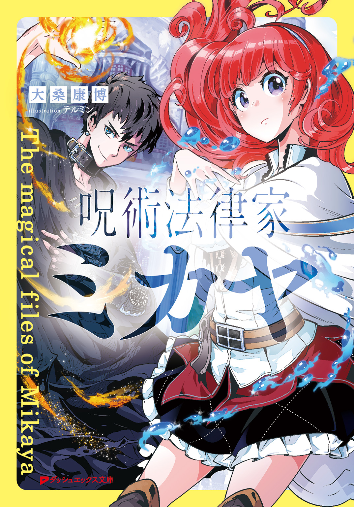
この本は縦書きでレイアウトされています。
また、ご覧になる機種により、表示の差が認められることがあります。
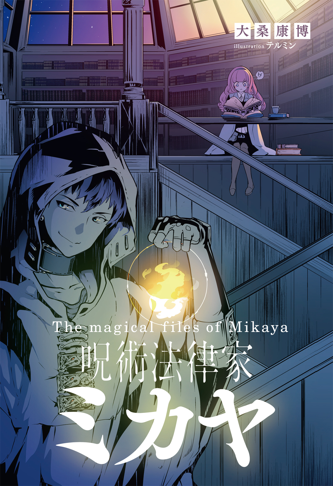
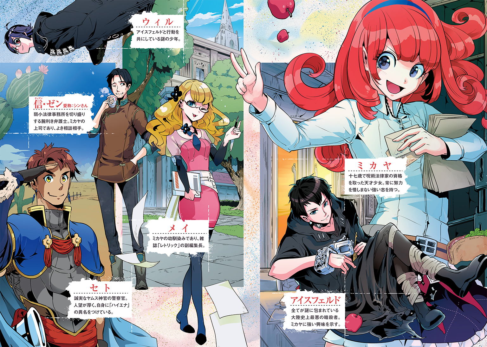
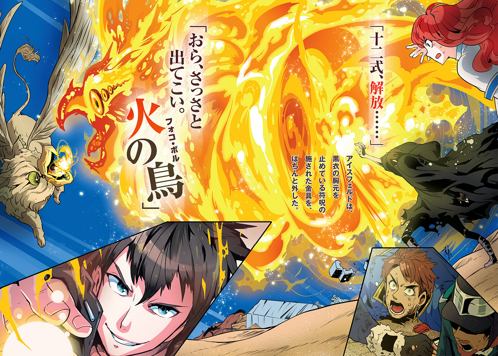
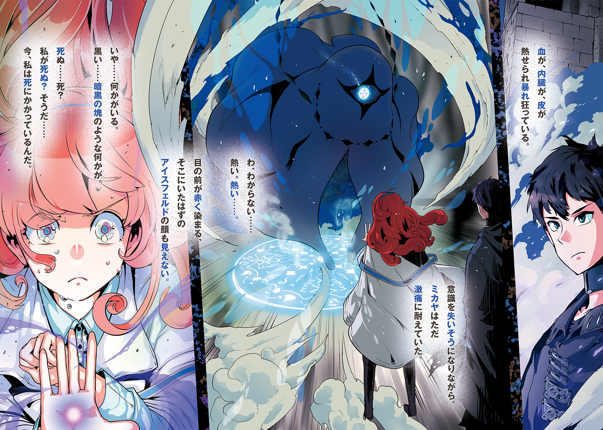
 ダッシュエックス文庫DIGITAL
ダッシュエックス文庫DIGITAL
呪術法律家 ミカヤ
大桑康博
序章
赤い絨毯の上に、男が立っている。
間もなく殺される運命線上を歩んでおり、そして大抵の殺される男と同様にそのことに全く気がついていない。
サラサンテは大学での講義という退屈な仕事をした後で、また退屈な男と会わねばならない己の身を嘆いていた。
サラサンテは広間の隅に置かれた、ミスリル銀製の箱を見る。
魔道具ギルド製品であることを示す、二頭の虎が絡み合う装飾がされた直方体の大きな銀色の箱は今にも天井に頭がつきそうな高さであり、触れると冬の水のように冷えきっている。
〝精霊殺しの箱〟ですよ、とこれを取り付けた業者は言った。ミスリル銀製の優れものだ！ あんたは運がいいね、この月だけ二割引きだ。
人が五人入るのに十分な大きさで、いかにも頑丈そうだ。矢でも石弓でも火炎の鳥でも持ってこい。分厚いミスリル銀の壁の前に立つ。
仕事柄、サラサンテは身の危険を感じることが多い。冤罪被害の会だとか、元受刑者の人権を守るだとか、そういうことをしているので、罪人と接することが多いし、恨みを買うこともある。
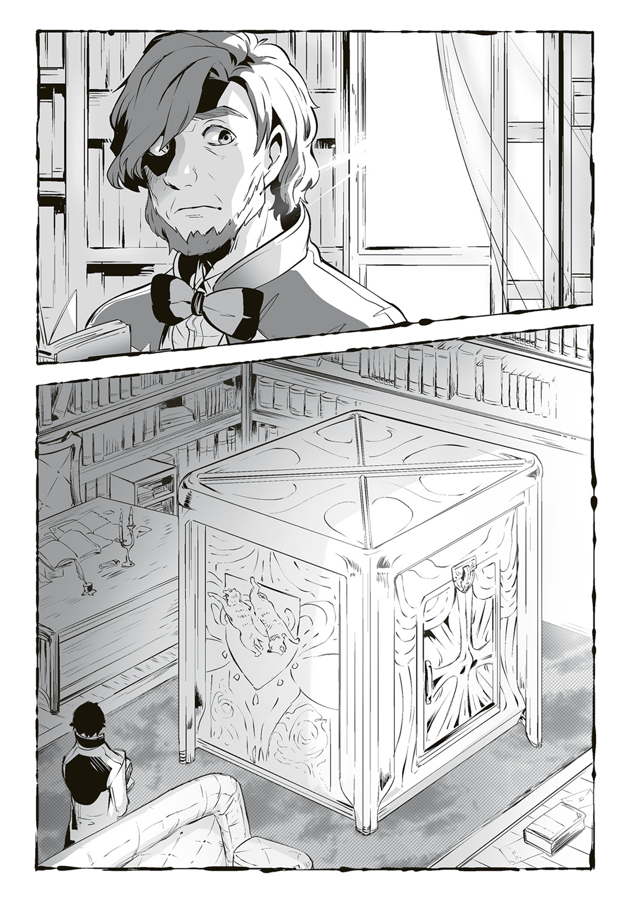
〝精霊殺しの箱〟。ミスリル銀の防護壁だ。万一の時のための避難所として、貴族の間で流行している。
広間の隅の一角に置かれた大型のミスリル銀の箱は、私が中に入ると自動的に扉が閉められる仕組みになっている。なんせ、十五式以下の呪術であれば全部弾いてくれるというのだから、まさに精霊殺しだ。最も私の古い友達には、こいつを壊せそうな奴がいるのだが......。
こいつに頼ることになるのだろうか。さもありなん。人間、一皮剝けばただの獣だ。これからくる客人がどういう態度に出るかなど、運命神にもわからんさ。
扉がノックされた。
「旦那様、カヴァ茶を二つでよろしかったですね？」
使用人のラッテンバーグが、皿の上にカラダン玉を使った高価な器を載せて入ってきた。温かいカヴァ茶から湯気が立ち、彼女の顔にもやをかけている。
「ああ、そこに置いておいてくれ」
「はい」
「それとラッテンバーグさん、これからこの部屋には入らないようにな。出迎えはいいから、台所で掃除でもしていてくれ」
ラッテンバーグはにこりと笑い、お辞儀をした。
「はい、失礼します」
こう言っておけば、ラッテンバーグにも、客人が誰かはわからないだろう。これからやることは、できれば内密に済ませたいことだ。なんせ、相手の面子を粉々に潰そうとしているのだから。
これが、ラッテンバーグとの最後の会話になるとわかっていれば、あるいはもう少し温かい言葉を彼女にかけていただろうか、と死ぬ間際にサラサンテは考えることになる。「死を思いながら生きれば、それは良い人生になるだろう」とは千年前の文豪の書いた一節だが、なかなか実践するのは難しいことだ。
また、男は死ぬ間際にこうも考えることになる。「俺は今の今まで、罪を犯した者の更生を仕事にしてきたが、果たして『殺される側の気持ち』をちゃんと考えてきたと言えるのだろうか？」と。
また、扉がノックされた。
「入るぞ、サリー」
男の声がした。自分のことを面と向かって「サリー」と呼ぶ者は、この町でもそう多くはない。学生時代につけられたのだが、はっきり言って嫌いなあだ名だし、その名で呼ぶなと友人たちにも言っている。
「ああ、入れ」
サラサンテはそう答えた。
時刻は午後三時だった。
旧友との再会を懐かしむ、他愛ない会話が始まった。
サラサンテは相手の昔話をし、相手もサラサンテの昔話をし、お互いに笑い合ったりした。
三時半、サラサンテは殺されていた。
第一章 沙漠の炎
【精霊呪術法 第一条】
人を傷つけるために精霊を使用してはならない
１
秋の二の月の十三日。燃えるような赤い髪の先っぽにだけ、綺麗にカールがかかった娘が雑踏の中を歩いていた。
ミカヤ・サリンジャーは右胸に水瓶と剣の刺繡が施された白い呪術法衣の裾を折り曲げて、止めておいた馬車のステップに足をかけた。
さっきまで、青空が憎いかのように煙草を吸っては煙を吐き出していた御者が、「おう、来たかい。さあ、乗んな」
「ありがとうございます」
ミカヤは一礼して馬車に乗り込み、革の席に腰を下ろした。それから鞄の鍵を開けて、中の書類をもう一度、改めて読み直した。
「〝左へ細長い街〟まではゆっくり五時間ってとこだよ。まあ、眠っていなよ、お嬢さん」
「ええ、そうさせてもらいます」
「あそこは、なんもねえとこだよ。俺はこんな仕事だから、たまにあの町に行くけど......サボリマサボテンがあちこちに生えていて、棘が靴に刺さって痛てえんだ。あの町じゃ、サボリマサボテンの味噌焼きが名物で、結構うめえんだけどよ。あんな町でよく暮らしていけるもんだ」
「サボリマサボテンの味噌焼き......なんだか美味しそうね」
ミカヤは少し目を光らせ、窓の外を眺めた。今までいた、〝竜の大きなしっぽ〟の外へと馬車は進んでゆく。窓の外は原っぱがどこまでも広がっており、兎が蝶と追いかけっこをしている。
「まあ、結構旨いんだけど、それ以外なにもねえからなあ。その点、〝竜の大きなしっぽ〟は立派なもんだ。大聖堂に城に、それから王立裁判所まである。〝赤き焰の帝国〟の中じゃ立派なもんだ。それに引き換え、〝左へ細長い街〟ときたら......ああ、そうそう！ 〝左へ細長い街〟といえば、あの話を知っているかいあんた」
御者は嬉しそうに話しかけてくる。
「アイスフェルドが捕まったんだ！ 〝左へ細長い街〟で、野郎が捕まったんだ！ 世界中の大物を殺しに殺しまくったヤロウがついにだ。知っていたかい？ お嬢ちゃん」
ミカヤは書類から眼を離して頷いた。
「ええ、とてもよく知っているわ」
「なんせ号外が飛び交い、〝大陸新聞〟の売上が最高記録を更新したそうだぜ！ そいつが裁判にかけられようってんだ。おらあ、裁判だのと堅っ苦しいのは好かねえが、観に行こうかな」
「私も参加させてもらうわ」
ミカヤは「参加」という言葉を使ったが、御者は特に気にしなかった。
「俺も、以前酒で捕まったことがあってよ。ま、器物損壊だ。街灯の精霊石を壊しちまって。そんで、裁判官が偉そうに聞くんだ。あなたはその時、お酒を飲んでいましたか？ ってな」
御者はお得意の話をするように口角を上げた。精霊石とは精霊の力を込めた石のことである。
「だから、俺はこう言ってやったよ。そりゃ、俺が酔っ払ってねえ時に聞いてくれ、この酒瓶が見えねえのかってな。だあっははは！」
ミカヤは口元に手を当てていた。嬉しそうに笑っている御者だが、私の仕事を知ったらどんな顔をするだろう。
「で、その裁判にアイスフェルドがかけられるんだなあ。間違いなく釜茹でか、塩漬けの刑だろうよ。ああ......奴はさ、そりゃもちろん薄汚ねえ殺し屋だ......金目当てに何人もの人間を手にかけた。俺だって捕まってせいせいすらあ......でもよ、心のどっかでそいつが捕まったって聞いた時、なあんかガッカリしちまったんだよなあ」
「なんとなく、わかる気がするわ」
御者はミカヤの相槌に気をよくして、ハイヨーと馬の手綱を引いた。
「だよなあ！ だって、アイスフェルドだぜ!? 軍艦に乗った〝青き氷の帝国〟の海軍大将を殺したのも奴だって話だ。海軍大将も呪術の達人、海上は氷と火の上位精霊がぶつかり合って、とんでもねえ状態だったそうだ。だが、勝ったのは奴だ。しかも、驚いたことに、現場ではその大将以外は誰も死んでなかったそうだ！ 奴は暗殺の天才なんだ！ 吟遊詩人は奴についてこう歌う......『アイスフェルドは燃やすだろう。敵も味方も、人の想いも』ってな」
「ええ、しかもただの天才じゃなく、それを支える精神力も持っている」
ミカヤはそう話した。
「火の精霊呪術の初歩修練に、〝永遠の蒸発〟というのがあるの。暗い部屋の中、上から垂れ落ちてくる水を、火の精霊を宿した掌で受け止めて蒸発させ続けるというものよ。普通は一時間で音を上げるんだけど、アイスフェルドはこれを一週間ぶっ続けでできるそうよ。飲まず食わずのままでね。奴を鍛え上げたというさる高名な大魔導師の話によればね」
「奴はバケモノだ！ 最強の呪術師だ！」
御者は嬉しそうだ。
「それだけじゃない、アイスフェルドは〝暗殺者〟としての腕も超一流。各国の将軍、政治家、財閥関係者を手にかけてきた。奴はこの大陸が生みだした最悪の殺し屋だわ」
「......あんた、えらく詳しいんだな」
御者は驚いたように後ろを振り返った。ガラス窓越しに見えるのは、まだ十代であろう若い娘だ。あどけなさが残る中にも確かな意思を内包した鋭い相貌。そして来ている白装束の胸には、「許し」と「裁き」を象徴する、水瓶と剣の刺繡......。
「あ、あんた法律家？ 弁護士なのか？」
「ええ、そうです。一つ付け加えると、普通の法律家ではなく、〝呪術法律家〟です」
「な......な......」
「この秋に、目出度く呪術司法試験に合格したの。新米弁護士のミカヤ・サリンジャーです。何か困ったことがあったら、相談に乗るから」
御者はそこで急ブレーキをかけた。ミカヤは前につんのめって、鼻を打ってしまった。それでなくても昔から、思い立ったらすぐ突っ込んでいく性格のミカヤは鼻を打つことが多い。
「まさか、アイスフェルドの裁判を......」
「ええ、そのまさかよ。これから、私がアイスフェルドを護送しに行くの」
ミカヤは痛そうに鼻を手で押さえていた。
「じょ、冗談じゃねえ！ そ、そんな奴、おらあごめんだ！ 金はもういいから、ここで降りてくれ！」
ミカヤは笑いだしそうになってしまった。
「ああ、その心配は大丈夫。こんな善良な御者さんの馬車で、暗殺者アイスフェルドを移送したりしないわ。もちろん、奴は何人もの兵士に監視されながら、護送車で移送するのよ。御者さんは、〝左へ細長い街〟に着いたら帰ってくれていいから」
「ほ、本当だな......？」
「私は法律家でテラミス神官。たとえ法廷でなくとも噓は言わない」
御者はほっとしながらまた手綱を引いて馬を走らせ、そして思い出していた。
大法廷があることで有名な〝竜の大きなしっぽ〟（螺旋状の形の町並みからそう名付けられた）で、史上最年少で呪術法律家の資格を取った十七歳の少女がいるという噂のことを。
馬車はぽっかぽっかと平穏な蹄の音を響かせながら、乾いた風の吹く沙漠の道を走っていた。馬車の全長の倍ほどもあるサバクオオトカゲが一匹、のそのそと歩いている。
ミカヤは書類に目を走らせながら、水筒の蓋を開け、二口飲んだ。
「敵も味方もか......私のことは燃やさないでくれるかしらね」
赤い唇が適度に濡れた。
２
左へ細長い街。
正面の高い門と、そしてその後ろに広がる光景を見れば、〝赤き焰の帝国〟の隅っこにある町に、何故こんな一風変わった名前が付けられたのか、すぐにわかる。
くたびれた柱が二本並んだ正門の先は、町並みが左へ左へとずっと続いていく。正門の右側、つまり大陸の地図での西側には、大きな湖が陣取っており、ポンプが時折動いて湖底から水を汲み上げている。
ミカヤは、子供がサボリマサボテンをつついて遊んでいるのを視界に収めながら歩き、ヤムス神官市立警察署まで行った。
中の大陸では、主に八の神が信仰されている。
太陽神ホルストがその筆頭であり、神たちの長老とされている。
今、ミカヤが来ているのは秩序の神ヤムスを信仰する者が集うヤムス神官警察署である。
この大陸で、警察官の職に就こうとする者は、みなヤムスを信仰するのだ。
いかめしい護送車が置かれている。護送車は全体的にごつごつとした金具が施されていて、鉄製の槍がクロスして車の腹の部分にかけられている。
鉄製の槍をクロスさせるのは秩序の神ヤムスを象徴する行為であり、警察署にはよくこれが飾られている。
入り口に二人の衛兵が〝赤き焰の帝国〟を象徴する大きな竜の紋章の盾を構えて馬に乗っている。これに比べればさっきまで乗ってきた馬車など、草原で気ままに遊んでいる小鹿みたいなものだ。
ミカヤは衛兵に会釈し、呪術法律家である旨を告げてから、中に入った。
職員らが物珍しげにこっちを見てざわめく。
「おい、誰かあの迷子に声をかけてやれよ」「違う、弁護士じゃねえか。アイスフェルドの！」「あんな小娘がか？ まだガキじゃねえか」
それらを無視し、一番偉そうにしているスキンヘッドのヤムス神官に声をかける。男は遅めの昼食なのか、立ったまま肉の挟まったパンをほおばっている。
「ここの署長ですか？」
「ああ......まさか」
もぐもぐと肉入りパンを喉の奥へと放りこむ。
「そのまさかです。ミカヤ・サリンジャー。テラミス神官で呪術法律家です。暗殺者、アイスフェルドの面会と護送に来ました」
テラミスは正義の神であり、法律家から信仰されている。
「おめえが......？ まったく昨夜から、世の中狂ってやがる。大陸最凶の暗殺者の一人を捕まえたら、女の尻追い回しているのがお似合いなくらいのガキ。しかも、そいつを弁護するのも赤毛のガキだ。これじゃあ、俺の仕事も近所のガキに代わってもらおうかってんだ」
言葉はきついが、棘のある言い方ではなかった。どちらかと言うと、この状況を面白がっているようである。
「護送する前に、容疑者に二、三質問がしたいんです。お時間は取らせませんから」
「......何を聞きてえんだ？ もう取り調べはやっているし、調書も作った」
警官は仏頂面で五枚の紙きれを差し出す。そこには、かなり念入りに調べた痕跡が確かにあった。
「そのようですね。でも、私たち弁護士は、まず被告人との『繫がり』を大切にすることから、仕事に入ります」
「......処刑確定の殺人鬼とか？」
「処刑確定だからこそ、今しっかり話を聞いてあげたいんです。後悔の思い、償いの気持ちはあるのかどうか、きちんと聞いておきたい。それが私の弁護士としてのポリシーです」
青二才だと思われるかしら、と内心不安に思うが、本心を直接伝えるのが私の生き方だ。
すると、さっきまで不審げに見ていた男が、にやりと笑った。
「ヤムス神官のヤンだ。ここの巡査長をやっている。昨夜からわけのわからん客ばかりで参っていたところだが、あんたチビだが気骨がありそうだな」
「どうも、ヤンさん」
「こっちだ、ミカヤ。ついてきな、それと......」
ヤンは歩きだし、振り返らずに言った。
「赤毛とか言って悪かったな......忘れてくれ」
この街では、何故か赤毛の女性は軽んじられる。生真面目に勉強をしていたミカヤにも、「そこの赤毛！ 遊んでばかりいるんじゃない！」と怒鳴ってくる教師がいたのだ。
「いいんですよ、慣れっこです」
ヤンは、肉入りパンを鞄の中に放りこんで、署内を歩いて行く。
この警官はいい人だ、とミカヤは思った。十七歳なのに呪術法律家なんて仕事についている。舐められて当たり前だ。でも、ヤンは多少なりとも〝認めて〟くれたようだ。ヤンについて階段を下りると、そこは留置所だ。
暗く湿った空気の留置所には、鉄格子の部屋が六つある。本当に簡素な留置所で、中にいるのは窃盗や傷害で逮捕された者が数人。
（......大陸最高の暗殺者を収容しているとは、とても思えない......）
革靴の踵が、鉄製の床をコツコツと響かせる。〝竜の大きなしっぽ〟の留置所だったら、〝物資強化〟の呪術をかけた樫の木の床で囚人の脱走を防ぐところだけど、ここは予算がないらしい。
恐らく、誰が見ても一目でわかっただろう。
そこに、彼はいた。その男の周囲だけが、黒く深く沈んでいるかのような異様な気配に包まれていながら、しかし涼やかな顔で足を投げ出して座っている。着ている黒衣は死の精霊を連想させ、右の耳たぶにだけイヤリングをつけている。
その姿の中で、一番目を惹くのは、左手だけに嵌めている濃い茶色の革手袋。
背はかなり高い。ミカヤより、頭一つ分は大きい。
その男は、ミカヤの姿を見ると、薄く笑った。
「......まだ子供なのに、あんた何やったんだ？ 喧嘩か家出か？」
ミカヤは嘆息した。ただでさえ子供っぽい容姿の私は、この先仕事のたびにこういう対応を受けるんだろうか。
「いいえ、この法衣を見てもわからない？ あなた、一応は暗殺のプロなんでしょ？」
こちらからも反撃を加えてやらないと、舐められたままで終わってしまう。
男はさらに唇の端を上げた。
「ああ、一応プロだ。しかし、あんたみてえに中等学校を出立てみたいのが、その大層な法衣を着ているのは初めて見るんでな。あんた、パン屋の奉公人の割烹着と間違えて着ているんじゃなかろうな？ そいつは、法律のプロしか着ちゃいけねえことになってるはずだぞ」
すると、隣にいたヤンが怒鳴った。
「アイスフェルド！ たわごとを言うと、鞭を食らわせるぞ！」
ヤンが警棒で思い切り鉄格子をぶん殴った。けたたましく鉄格子が鳴り響き、いかついヤンは警棒を構えて仁王立ちする。
しかし、ミカヤはそれを手で制した。
「ごめん、ヤンさん。ここは、私に任せてくれる？ 二人だけで話がしたいの」
ヤンがかばってくれるのは有り難いが、この場は私が一人で請け負いたい。
「そいつが何十人殺してきたか知っているのか？ お前さんなんか、蛇が兎を一飲みにするようなもんだ。飲みこんだ後で、げっぷすらしねえだろうな、そいつは」
ヤンは驚いたように、くるりとこっちへ向き直った。
「大丈夫。奴はミスリル銀の手錠をかけられている......得意の呪術は使えない。それに、私だって精霊呪術は一通り使えるのよ」
「本当かよ......」
「本当よ。そうでなきゃ、呪術法律家なんて務まらない。何かあったら呼ぶから」
そんなら好きにしろと言い残し、スキンヘッドの警官ヤンは歩き去っていった。私を信用してくれたというよりは、単に忙しいのだろう。
ミカヤは鉄格子の中で悠然と座っている男に、もう一度目を向ける。
静かな......途方もなく静かな気配。目を凝らしているのに、たまにそこにいないような錯覚に陥るほどだ。
「改めて。私はミカヤ・サリンジャー、貴方の弁護を担当する者よ。暗殺者のアイスフェルドさん」
男、アイスフェルドはにやりと笑った。
「赤毛の女。俺に弁護なんて必要ないんで、帰ってもらえるかな」
「そうはいかない。どんな凶悪犯でも、弁護士はつけなければいけないの。貴方が、たとえ十人傷つけていようが、二十人殺していようがね」
「ううん......どう言ったらあんたに伝わるのかわからないが、弁護士なんて必要ねえんだ。俺にはな」
アイスフェルドは「困ったなあ」という表情をしたので、それがなんだか愛嬌があるようにミカヤには感じられた。よくよく見ると、アイスフェルドはあどけない顔で、まだ子供のようだ。歳は推定十八と調書に書かれていたが、もっと幼い雰囲気だ。
「ここは、寒くて腹が減るな。メシを食ってもいいか？」
ええどうぞ、と言おうとしたミカヤの口が、驚愕に開いてしまった。アイスフェルドは誰かがかじった後の肉入りパンを手に持っていたのだ。いかにも旨そうなそれを、がぶりとかじって微笑みかける。
「それは!?」
「あのおっさんから、貰ったんだよ。ついさっきな」
ミカヤは生まれて初めて体験する恐怖に戦慄していた。この男は、いつ何時、誰からでも物をくすねることができるのだ。その気になれば、手錠と鉄格子の鍵でさえ。いや、その気になれば私の命でさえ......。
「どうした、震えているぜ赤毛の娘。肉入りパンでも食うかい？」
「......貴方ねえ......」
駄目だ、主導権が向こうに移っている。何より、指先が震えてしまっていて、これでは対抗もできない。
ミカヤは両手でバシンと自分の顔を叩いた。頰が赤くなるくらいに、思いっきり。ジンジンする顔を向け、アイスフェルドを視界に収める。相変わらずの悠然とした微笑。ミカヤは鞄から調書を取り出し、中に書きこみを始めた。
「......おい、赤毛の女？ 何を書いているんだ？」
「貴方の罪に、窃盗罪を付け加えているの。目の前でやったことだし、私が証人になるわ」
「あんだと？」
その途端、アイスフェルドがあどけない顔をわずかに綻ばせた。
「今更、窃盗なんぞ付け加えたからって、状況が変わるのか？」
「いいえ、どの道処刑に決まりよ。でも、やったことはやったこと。法律家として見過ごすわけにはいかないの」
落ち着いて自分の役割を果たすこと。相手はミスリル銀製の腕輪をつけられて、呪術なんか使えやしないんだ。さっきのだって、ただのスリの技に過ぎない。
「プ......くくく」
アイスフェルドはおかしそうに笑い始めた。顔が揺れるのに従って、右側にだけつけた真珠のイヤリングが上下に揺れる。
これでいい、主導権はあくまで私よ。
「何がおかしいの、アイスフェルド？」
「お前さんみたいに石頭の女を一人知っていてな......。そうか、窃盗罪か。そりゃ確かに認めないといけねえよなあ」
「そう、何者も正義の神テラミスの前には噓をつけない......。そして貴方は今までに少なくとも十人は殺してきているはず......。この町の大学教授、サラサンテ氏もあなたが殺したのよ。その罪を認め、素直に謝罪をするならば、〝釜茹での刑〟だけは避けられるかも。釜茹での刑は、衆人の前で煮たった湯の中に放りこまれる、残酷な拷問刑よ」
ミカヤの言葉に、アイスフェルドは動じた様子もない。
「どう？ この刑を免れたいのなら、法廷で素直に謝罪しなさい」
「それはできねえなあ」
アイスフェルドはあくまでも悠然としたポーズを崩さない。
「まず、最初に言っておくと、俺が殺したのは十人じゃなくて、九十九人だ」
「......なんですってえ？」
ミカヤは間の抜けた声を出してしまった。
「殺しの数は力量の数値化だ。正確に言っておかないとよ」
「あ、あなたねえ！」
「それと、サリーのおっさんを殺したのは、俺じゃない。やってもいない罪を白状する気にはなれんよ」
「......あなたのことを買いかぶっていたようね」
ミカヤは心底がっかりしたような声を出した。
「挑発的な言動ばかりとるのは、まだ子供だから仕方ないと思っていた。けど、まさかこんなに頭の悪い男だとは思ってもいなかった」
「子供なのは、あんたも一緒じゃねえか」
アイスフェルドは、いかにもおかしそうに言った。
「......九十九人もの人を殺めておきながら、サラサンテ氏だけは殺していないって？ 七邪神戦争で〝焰の王〟は古都スランザールを焼き滅ぼしましたが、その隣にあるフェルムの大木は焼いてはいませんって？ そんな脳みそが茹であがったような冗談が通じるほど、甘い世界じゃないのよ」
焰の王とは、この世界で最強の精霊とも呼ばれる存在であり、大昔に起きた七邪神戦争の折には、いくつもの国を滅ぼしたと言い伝えられている。しかし、現在では〝灼熱の氷壁〟と呼ばれる巨大な氷の山の中に閉じ込められているのだ。
「あいにくだが、自分のことで噓をつくのは嫌いなんだ。あんたのような法律を少しかじっただけの小娘にコケにされるのもな」
「......」
「ま、どっちにしろ、お前にゃ関係ねえ話だな。弁護なんて必要ねえし、とっとと帰ってくれるか？ ここまで来て手ぶらで帰すのもなんだし、肉入りパンをやるからよ。ほらよ」
アイスフェルドはもう残り一口となった肉入りパンを、放り投げてよこし、ミカヤはそれを片手で受け止める。旨そうな鶏肉に、がっしりとした歯で嚙み切った痕がある。ミカヤは「むうう」と唸ってから、がばりと大きく口を開けて一気にそれを嚙み砕いた。肉の旨みに胡椒が程よく効いていて、歯ごたえ十分の味。
アイスフェルドの瞳が「なんだこいつ」と言っていた。
「とても旨かったわ、ありがとう。お礼は法廷でさせてもらうから」
アイスフェルドはまた、笑い始めた。その黒い瞳は、星が一つだけ浮かんだ夜空のように、静かに光を放っている。
笑うと意外に愛嬌あるじゃない、こいつ。それに彼は「なんだと？」というのを「あんだと？」と言う癖があるらしい。昔、学校で同じクラスにいた不良少年もそうだった。
ミカヤの後ろの扉が開いた。さっきの警官が部下を何人も連れて入ってきた。
「おい、お嬢ちゃん。もういいか？ そろそろ時間だよ」
ヤンと共に剣と鎧で武装した男が五人、アイスフェルドの入っている鉄格子の前に立つ。
「アイスフェルド、後ろの壁に手をつけ！ 一歩でも動けば、槍で串刺しだぞ」
「無茶を言うな、おっさん。一歩も動かずにどうやって壁に手をつけというんだ？」
「......ええい、黙って言う通りにしろ！」
ヤンや警官たちの表情に緊張が走る。無理もないとミカヤは思った。この〝左へ細長い街〟は人口五百人の小さな街。今までにこんな大物の犯罪者、扱ったことなんか一度もないのだろう。おまけにアイスフェルドは、人を馬鹿にしたような態度をとってばかり......。アイスフェルドが壁に手をつくと、二等警官二人がかりで刺又で取り押さえてから、腰縄をつけるほどの念の入れようだ。
とりあえずアイスフェルドがくすねた肉入りパンのことは黙っておこうと心に決めた。ともかく、街までこいつを連行するのが仕事だ。危険な男だが、頑丈な護送車で騎兵に守られながら行くのだから大丈夫だろう。
勝負は、法廷から始まるのだ。
３
ミカヤは護送車の中で、腰に丈夫な縄をつけられたアイスフェルドと向かい合わせで座った。二頭の馬に牽かれる護送車には、さらに二人の騎兵が警護についてきてくれるという。
黒衣の男はどこまでも涼やかで、これから間違いなく処刑される人間の態度とも思えぬ悠然とした面持ちで静かに目を閉じている。
ミカヤは馬車が発進するまでの間に、調書を読むことにした。
ヤンが丁寧に書いた調書を一枚一枚丁寧にめくる。
「容疑者 ローランド・アイスフェルド 年齢 18（推定） 生年月日不詳
秋の二の月、十二日、午後三時四十分。人権活動家であり大学教授のサラサンテ・ニコラ（50）が〝左へ細長い街〟の自宅で、〝精霊殺しの箱〟の中で死亡しているのを使用人のラッテンバーグ（38）が発見した。死亡推定時刻は午後三時三十分。遺体には少量の吐血はあったが、今のところ死因は不明、検死結果を待つ。ラッテンバーグは私、巡査長のヤンを呼び、「怪しい客人と話していた旦那様が、部屋から出てこない。怖いので一緒に開けてほしい」と言った。共に〝精霊殺しの箱〟を開けると、サラサンテの遺体があった。
第一級殺人事件と見なし、捜査を開始。尚、被害者が中で倒れていたとされる〝精霊殺しの箱〟は、警官が現場検証を行っている際に、魔道具ギルドによって回収されてしまった（相変わらずの強引なやり方であった）。
聞き込みにより、黒衣の長身の男が〝左へ細長い街〟に潜伏しているとの情報を受ける。伝説の暗殺者ローランド・アイスフェルドのような身なりだったと街の人々が話していた。アイスフェルドはサラサンテの別宅にて眠っているところを、午後四時に巡査長ヤンとその他三名により捕獲される。武力抵抗はなし。逆にアイスフェルドは巡査長ヤンに対して、サラサンテ氏の死んだ時の状態を詳しく聞いてくる。アイスフェルドは、暗殺者であることを認めるも、三回の尋問で容疑を全て否定している。尚、何故アイスフェルドが〝左へ細長い街〟に滞在していたかについては......」
調書を読んでいる内に、ミカヤには疑念が生まれた。何故、アイスフェルドは容疑を否認しているのに逮捕の際に抵抗しなかったのだろうか。伝え聞くアイスフェルドの逸話が、実力の半分でも示しているなら、こんな田舎町の巡査の一人や二人、片づけるのは造作もないはずだが。いや、まさかとは思うが、彼は本当にローランド・アイスフェルドなのだろうか？ 見た目も幼いし、言動もそこらの不良少年にしか見えない。時折見せる雰囲気や佇まいは、尋常の男のそれではないが、本当にこんな子供が？ それに、捜査本部にこいつが潜伏していると教えたのは一体......。
ヤンの大きな声が聞こえてくる。
「セト。何かあれば、多少痛めつけても構わん。相手が生まれつきの殺し屋だってことを忘れるな」
「はっ！」
外で野太い声がする。
護送車の扉を開けて、大柄な警官が一人入ってきた。顔は日焼けして浅黒いが、青いマントも初々しく、まだ二十歳そこそこだろう。
「アイスフェルドの護送を務めるセトであります。ミカヤさん、何なりと申しつけてください」
「ええ、ありがとうございますセトさん」
ミカヤは、にこりと微笑んだ。昔、母さんから「あんたの笑顔なら少々悪いことしてもテラミス神様は許してくれるよ」と言われた笑顔だ。
「はっ、この〝ハイエナのセト〟が全力で護衛します！」
セトは右拳で胸を強く叩く。これはこの大陸の警官の「敬礼」だ。
護送車はゆっくりと進みだし、ゆるやかに走り始めた。
「ええ......でも、〝ハイエナ〟だなんて、なんだかセトさんには似合わない異名ですね」
セトは気立ての良さそうな男らしい顔つきで、見るからに誠実そうだ。この大陸の戦士や術師は、名前の前に異名をつけることがある。しかし、こうした場合に「ハイエナ」を持ってくるのは珍しいし、何よりセトには似合わない。
「よくぞ言ってくれました。確かにハイエナはよく誤解されがちですが、決して他人の餌を横取りするだけの動物ではないのです」
「なるほど」
「むしろ、集団で統一された動きをするし、仲間の面倒もよく見る立派な動物であります！ 本官はハイエナが周囲から受けている誤解を解くために、自らこの異名をつけたのです」
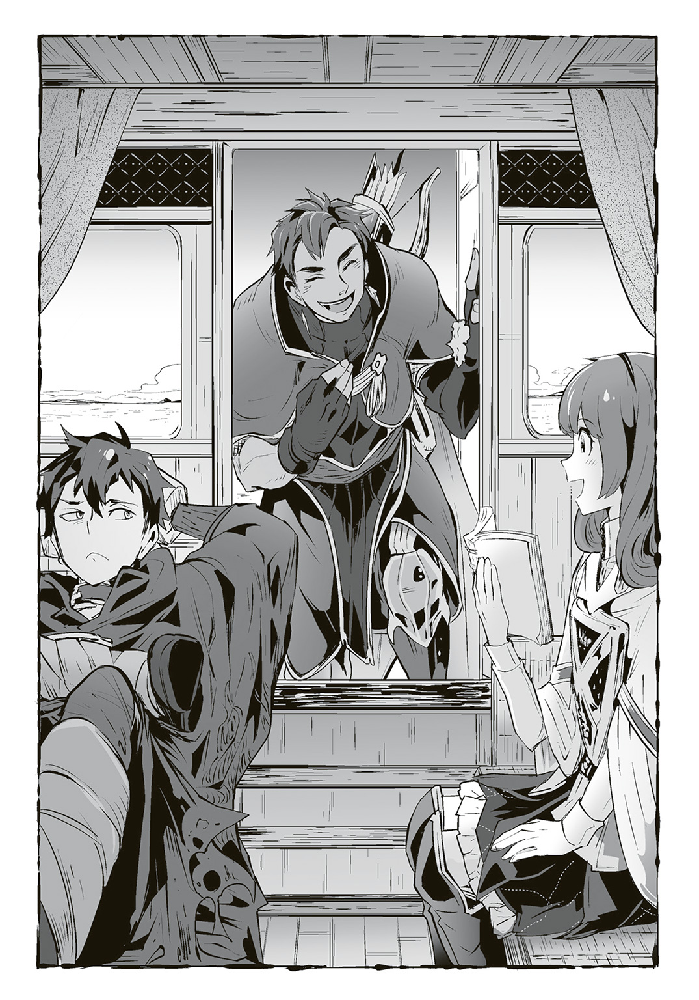
ミカヤの顔が自然と綻んでいた。
「立派な心がけですね。きっと神々も祝福されるでしょう」
周囲からの誤解を解くためだけにこんなことをするなんて、なかなかできることじゃない。
「お前、馬鹿だろ」
一気に冷や水を浴びせるのは、アイスフェルドだ。
「アイスフェルド！ なんてことを言うの？」
「馬鹿だと思ったから、そう言っただけだぜ。あ～あ、この街の警官ときたら、鞄からパンを盗んでも気がつかねえのや、動物愛護家みたいなくだらねえのばかり。おまけに赤毛の頑固娘ときた。これから向かう大法廷にゃ、もうちっと面白いのがいることを期待するぜ。このままじゃ、退屈しのぎもできねえ」
「......その期待には、もうすぐ応えられるでしょう。大法廷の呪術裁判官は、貴方のやった罪を全部丸裸にしてしまうからね」
「へえ、そうかい」
「......ねえ、アイスフェルド。まだ、罪を認める気にはならない？」
ミカヤは慎重に言葉を選ぶように言った。
「貴方がやってきたことは許されないし、私も許す気はない。暗殺者なんて、最低よ。でも同時に、貴方がどれだけ凄い呪術師なのかは、知っているつもりよ。あなたはかつて、焰の王を呼び出すことにも成功したとか......。本当だとしたら、信じられない業だわ。それだけの呪術の達人、釜茹でにするのは酷だと思う」
「そりゃどうも」
「私がこんな弁護を引き受ける気になったのは......もちろん他の弁護士が全員断ったから、私のところに来たんだけど......それだけじゃない。たとえ邪道に逸れたとしても、道を極めた人間には、それにふさわしい死に様を選ぶ権利があると思ったから......私だって呪術師の端くれ。あなたの凄さはわかる......。そう思ったから、引き受けようと決めたのよ。私、なんでもすぐ決めるからさ。もし、あなたが素直に罪を認めるなら、『死の精霊の一撫で』の刑で安楽に死なせてあげることもできる」
アイスフェルドは眉を片方だけ上げてみせた。
「そりゃ、ありがてえな。今の台詞、歯磨き粉を洗面台に吐きだす時に、思い出すことにするよ」
「あなたねえ......！」
「弁護はいらんと言ったはずだ。何度も言わせるな、バカ女」
「ば......バカ女ですってえ？」
そんなこと、物心ついてから一度も言われたことがない。
「さっきもわかったはずだぜ。俺は、逃げようと思えばいつでも逃げられるんだ。例えばだな......おい、そこのハイエナのセト」
アイスフェルドはきょとんとしているセトに話しかけた。右手の人差し指を器用にくるくると動かし、いかにも何かの呪術の印を結ぶかのような仕草をした。
「今、お前に〝六十秒の死〟の呪術をかけたぞ」
「えっ!?」
セトはびくんと大きな体を跳ねさせ、浅黒い額から汗を流し始めた。
「解かねば、一分以内にお前はあの世に行くぞ。こいつは特別強力な呪術で、俺でなければ解けない」
「そ、そんな......」
「解いてほしいか？ そんなら、俺のこの手についた手錠を外してもらわないとどうしようもないなあ」
セトは脂汗を流し、慌てふためいている。
「おい、手錠の鍵は持っているんだろう？ なら、さっさとしてくれよ。ほら、これだ」
アイスフェルドは手錠をセトの前に掲げてみせる。うろたえるセトを、しかしミカヤがぴしゃりと片手で制した。
「その必要は、ないわ」
ミカヤはゆっくりと諭すように言った。
「一分以内に死ぬ呪術ですって？ そんなもの聞いたこともないわ。それに、今アイスフェルドの手にかけられているミスリル銀の手錠。精霊たちはミスリル銀が大嫌いで、これをつけられた呪術士は術を使えないの。よって、セトさんに呪術はかけられていないわ」
ミカヤの説明の後、ぱちぱち、とわざとらしい拍手を送るのはアイスフェルドであった。
「なかなかの弁舌だな。その歳で呪術法律家の資格を取っているだけはある」
「あなたにはがっかりしているところよ......！ そんな陳腐な噓で騙して逃げようだなんて、『大陸最高の暗殺者』の名が聞いて呆れるわね」
「おい、でかいの。雨上がりの路上の犬みてえに冷や汗かいてるじゃねえか。今のは冗談だよ。本気にする奴がいるとは、俺も思っていなかったんだが......」
黒衣の男の言葉に、セトは赤面してうつむいてしまった。
「......セトさんをいじめるのはよしてちょうだい。まったく、もう......。あなた、これから処刑されるのよ？ わかっているの？」
「いや、処刑も釜茹でにもされないね。理由は一つ。これは完全な冤罪だからだ」
ミカヤはアイスフェルドの瞳をしっかりと正面から見た。......星が美しく見える夜空のような黒い瞳が、相変わらず静かな光を放っている。しかし、そこには確かに、〝何か〟があった。
ミカヤが人生の破滅を覚悟した時、最愛の人が最後に放った光と酷似しているようにも思えたが、すぐにその考えを振り払った。馬鹿馬鹿しい......こんな男の目を父に重ねるだなんて。
「ま、俺のことよりあんたのことはどうだ？ リスのしっぽみてえな巻き髪の女よ。お前さんの話を聞かせてくれよ」
「......べつに、話すことなんかない。私はただの仕事としてあなたと......」
「どうかな。こんな敗戦濃厚の裁判を引き受けるのにゃ、それなりのわけがありそうだ」
アイスフェルドはそこで、顔の横に掌をかざし、念力を送るような仕草をしてみせた。
「......ううむ、読めたぞ。あんたの事情が」
何をくだらないことを、と思いながらもミカヤの胸の鼓動は自然と速くなっていた。
「あんた......昔、誰か大事な人を失っているみたいだな」
ミカヤの心臓が十センチも跳ね上がった。
「な......」
「恐らく、法曹界の者のようだ。そして、後悔の念を元にあんたは猛勉強をし、その若さで呪術法律家になった、と。どうだ？ その様子じゃ、当たっているようだな」
「ど、どうして!?」
「〝読心〟の呪術をかけたのさ。あんたの心は、初めて想い人ができた少女のように丸裸だぜ」
ミカヤはがばっと自分の体を両手で覆い隠した。
ぷ......くくくく、とアイスフェルドが突如噴き出し、やがて腹を抱えて爆笑し始めた。
「......？」
ミカヤはわけもわからずアイスフェルドの笑い声を聞いていた。そこで、再び、彼がかけられている手錠の存在に気がついた。
「あんたねえ......！ 本当の本当に......！」
ミカヤは頰を真っ赤に染めて、細い人差し指を男に突きつけた。
「あっははは。冗談だって。あんたまで本気にするたあ思わなかった。俺ってば、演技の才能まであるのかな」
「......じゃあ、どうしてなの？」
「カマかけだよ。俺はあんたみてえな、『不幸な過去』を持っている奴らばかり相手してきたんで、そういう奴はちょいと目を見ればわかる。あんたの地位と年齢から当てずっぽうの勘で言ってみただけだ」
今度はミカヤが赤面して歯を嚙みしめる番だった。まんまと引っかかってしまった自分が恥ずかしい。さっきのセトと同じやり方で引っかけられてしまうとは......。しかし、まさか当てずっぽうの勘だけで、あそこまで......。
「あんたなんて、釜茹でにでもされてしまえばいいのよ......！」
「拗ねるなよ。引っかかったあんたが悪いんじゃないのか？」
「そういうのを、強盗の理屈と言うのよ」
「殺し屋に言う台詞じゃねえな」
アイスフェルドはとことん口の減らぬ男で、砂粒を一粒投げつければ、沙漠の中でも最も巨大なサバクオオトカゲを投げ返してくるようだ。
「おい、アイスフェルド。あまりおかしなことをすると、罪が増えるだけだぞ」
と、セトが言うも、
「殺人罪で捕まえておいて、今更何の罪だ？ 赤毛娘からかい罪か？」
アイスフェルドはどこ吹く風である。
ミカヤは学生時代に同じクラスにいた不良少年のことを思い出していた。不良と言っても、煙草をやったり喧嘩をしたりする程度だったのだが、もちろんミカヤはそんなことは許さない。彼を更生させるために注意したり、進路相談に乗ったり。だが、ある日友人のメイから『ねえ、ミカヤ、わからないの？ あの子、あなたの気を引きたくてあんなことやっているのよ？』と言われてしまい、以後なんとなく恥ずかしくなって注意するのを止めてしまった。その少年は、今では大工の見習いをしており、たまに会うと、「親方からしょっちゅう叱られるんだ」と嬉しそうに話してくれる。
（でも、こいつの場合は......そんな可愛いものじゃない）
一度でも気を抜けばいつ出し抜かれるかわかったものじゃない。
「......おい赤毛女、風の気配が妙だと思わないか？」
アイスフェルドは手錠をかけられた手を、片耳に当てる。
「風？」
また騙そうとしているのか、とミカヤは身構えた。しかし、アイスフェルドの視線の先は護送車の窓の外。熱に当てられて揺らぐ地平線だけが見える、一面の沙漠。
「ああ......こいつは、一山ありそうだな。風が妙に静かだ......沙漠の風ってのは、砂が混ざり、もっとごうごうと唸るものだが、今日の風は妙に鋭い。こういう日には、出ることがあるんだよな」
「馬鹿馬鹿しい......さっきの後で、そんなのに引っかかるとでも？」
「この風切り音......ううん、ちとマズイなあ。おい、赤毛」
アイスフェルドは手招きしている。
「ミカヤよ。いい加減、名前を覚えてちょうだい。本当にガッカリね！」
「あんでえ？」
「ローランド・アイスフェルドが、まさか赤毛の女性を見くびるような男だとは思わなかった！」
アイスフェルドは怪訝な顔をした。
「赤毛のことを言われるのは慣れっこよ。母さんも子供の頃は言われたって。けど、大陸最高の暗殺者様が、そんな通説を信じているだなんて......」
ミカヤは精一杯の皮肉を込めて言ったが、アイスフェルドは怪訝そうな顔のままだった。
「なに言ってんだ？ なんで赤毛だから見くびるんだ？ さっぱりわからねえ」
「へ？」
「俺はあんたの赤毛が綺麗だなと思ったんで、赤毛と呼んでいるだけだ。妙な赤毛だな。赤毛は好きだし」
「な、な......」
ミカヤは顔の火照りを隠すのに必死だった。
「そんなくだらないことでからかう気!? 公然侮辱罪、及び婚約詐欺罪で訴えてもいいのよ！」
「婚約詐欺罪......？ なに言ってんだ。赤毛だから赤毛と言っただけだろうが。この阿呆赤毛。じゃあ、赤毛っていうのも止めだ。この馬鹿娘」
「この～！」
こいつ、一体どこが大陸最高の暗殺者よ。さっきからただの子供じゃない。
「あんた、変な奴だな。いいから、こっちへ来い。運命神エルギヌスの声が聴こえる。そこにいると死ぬぞ、ってな」
また、馬鹿にしようとしているのかしら。さっきはあんなことを言ったくせに。
ミカヤはつんとそっぽを向いた。
窓の外は至って平穏そのもの、嵐の気配もなくただ砂地がどこまでも続いている。
「何も起きやしないわ。今日は砂嵐注意報も出ていない」
「だが、俺の予感が言っている。ヤバイってな」
「何をくだらないことを。見なさい、この晴天を！」
ミカヤはアイスフェルドの方を見たまま、片手で窓の外を示した。小綺麗な窓の外は、焼けつく太陽の下、砂塵の舞う一面の沙漠。その青空に、巨大な（それは鳥にしてはあまりに巨大過ぎた！）翼を閃かせる何かがあった。
ミカヤの腕が突然引っ張られて、アイスフェルドの胸元に鼻をぶつけてしまった。何をするの、と言おうとした瞬間だった。
分厚い鉄の壁で覆われた護送車のちょうど真ん中の部分が粉砕され、魔獣の大きな瞳が一瞬だけミカヤの目と合い、粉々に砕かれた護送車の破片を纏いながら、大空を飛んでいった。
「空襲！ グリフォンの空襲だ！」
セトは走る護送車の砕かれた後部から転がり落ち、砂をたっぷりと顔につけながら怒鳴り、背中に下げた弓矢を取る。
ミカヤはまだ、何が起きているのかちゃんと把握できないまま、空中でアイスフェルドの胸にしがみついていた。アイスフェルドはというと、破壊されて、二頭の馬に引きずられる残骸のようになった護送車の前部から、ミカヤを腕にしっかりと抱えながら飛んで、ふわりと重力を感じさせぬやり方で沙漠に着地した。
「立てるか？ 赤毛のお嬢さん」
ミカヤが見上げると、そこには精悍な顔立ちの短髪の男が、右側にだけつけた白いイヤリングを揺らしていた。
「た、立てるわよ」
ミカヤはじたばたと足を動かした。アイスフェルドが「ほいじゃ」と言って、放り出すように手を離したので、ミカヤは砂の上で尻もちをついてしまった。
「弓構え！ 迎撃するぞ」
セトが怒鳴りながら弓を構え、さらに他の警官たちに号令をかけた。
グリフォン......それは、獅子の体と鷹の翼を合わせ持つ沙漠の魔獣であった。
「シャアアアア！」
そいつは翼を水平に広げながら、鋭角に滑空して降りてくる。途方もなく大きい！ 体長は護送車を上回るほどだろう。そのグリフォンの口には、灼熱の火炎の球が生じている。
「グリフォンの好物は丸焼きの肉だ。お前ら、頑張らないと一分後には奴の腹の中だぞ」
アイスフェルドは、グリフォンの滑空してくる延長線上から離れた安全な場所でくつろいだように座っている。
「っ撃てえい」
セトのかけ声に合わせて、三本の矢が放たれ、その内一本はグリフォンの左の翼に突き刺さり、赤い鮮血を滲ませた。
しかし、報復が待っていた。怒り猛ったグリフォンの口からほとばしる火炎は火山から噴出する灼熱の溶岩の如し。直撃を受けた警官は、叫ぶのみであった。
「ギャアアー!!」
手の施しようがないほどの火炎に纏われ、死に向かう。さらにその火の粉が、セトの左足に燃え移ってしまった。セトは大柄な体を倒し、燃え盛る左足の苦痛に呻いていた。
「セトさん！」
ミカヤがすぐに駆け寄って、必死に砂をかける。だが、グリフォンによって燃える火炎はまるで止む気配がない。
「魔獣の炎は、水の精霊術でないと消せないんだ」
低い声がした。
「え？」
ミカヤは振り返った。
「万物は火と水より生まれいでし。お前も水の精霊くらい使えるだろ」
アイスフェルドの言葉で、ようやくミカヤは自分も精霊呪術を使えるということを思い出した。
ミカヤは着ている呪術法衣の金具の上から三つ目を手で解いた。
「三式解放......！」
これで、自分の〝容量〟が一定量まで解放された。
精霊呪術を扱う時、まずは自分の中に封じ込めていた〝体内精霊〟を解き放つ必要がある。この体内精霊を介して、他の土水火風の精霊に呼びかけるのだ。
しかし、その体内精霊の力が時として、術者が体内精霊を抑え込む力を超えることがある。これを〝容量オーバー〟といい、容量オーバーになれば、最悪飼っていたはずの体内精霊に食われてしまうこともある。
そこで、呪術法衣で体内精霊が暴れださないように抑え込んでいるのだ。今は三式までを解放した。これがミカヤの使える精霊の容量の最大限だ。
右手の人差し指を上げて、念を込めながら呪文を唱える。
「戯れのウィンディーネよ！ ......沙漠に映える美しき雫よ、灼熱の赤き血を濯げ！」
次の瞬間、ミカヤの鞄が破裂した。
キラキラと透明に光る小さな女の子の形をした精霊が、鞄に入っていた水筒から飛び出し、その体を実体化させたのだ。精霊たちは、人間の作る〝詩〟や〝唄〟が大好きだ。これを呪詩と呼び、精霊を呼び出す時には必ず詠唱せねばならない。水の精霊はふわりと踊るように宙を舞ってから、セトの足の灼熱の炎に体当たりし、鎮火した。
「そこそこ使うようだな、赤毛」
アイスフェルドの声。
セトが起き上がって、弓矢を取ろうとするのを、ミカヤは両手で押さえて制した。左足が完全に焦げてしまっている。恐らく治癒術師に頼んだとしても、もう元通りになることはないだろう。
「まだ、無理よ！ セトさん」
「ミカヤさんは逃げてくれ！ ここは、俺の場なんだ！」
セトは息を荒らげながら、片足だけで立ち上がり、剣の鞘をつっかえ棒にして弓を構える。
ミカヤは呼び出した水の精霊を巨大な水滴のようにして投げたが、しかし大空を飛び回るグリフォンには全く当たらない。
（どうすれば......どうすればいいの？）
私の敵う相手ではないことはわかる。でも、このままでは、みんな死んでしまう。
「アイスフェルド！ 貴方も手を貸して！」
ミカヤは後ろにいる黒衣の暗殺者に力の限り叫んだ。
「貴方なら倒せるでしょう!? このままじゃ、みんなが......」
しかし、アイスフェルドは淡い光を放つミスリル銀の腕輪をかざしてみせるだけだった。
「じゃあ、こいつを外せ」
黒い瞳から放たれる視線が、ミカヤを突き刺した。
「それが条件だ。外せば、呪術の一撃で葬ってやる」
「......」
「この状況、流石に笑えねえよ。このまま全員あいつの腹に収まるか、今俺の手錠を外すかだ」
ミカヤはセトが引き絞った矢を放つのを見た。
「止めろ！ そんな凶悪犯を放てば、どうなると思っているんだ!?」
セトはさらに怒鳴る。
「このハイエナのセトがやる！ あんたは隠れていてくれればいい！」
セトが撃った矢は、しかし大きくグリフォンを外れた。グリフォンは悠然と空を飛び、次の獲物を岩陰に隠れている護送車の御者に決めたようだ。音速で滑空し、護送車の御者の太い首を鉤爪で刈り取ってしまった。頭をなくした御者が、鮮血を撒き散らして倒れる。ミカヤは、体が震えるのを止めようがなかった。
セトは次の矢をつがえようとしているが、顔中から脂汗を流し、息も絶え絶えだ。もう一人いたはずの、中年の警官はさっきから小便を漏らしていないのが奇跡だというくらいにおびえきって、ただセトを見守っているだけだ。
「お前、やりたいことがあるんじゃねえのか？」
アイスフェルドが、砂丘の上に座っている。だが、その表情はいつもの相手を小馬鹿にする微笑ではなく、死線の際に立つ戦士のそれだった。
「俺にゃやりたいことがある。お前にはねえのか？」
「私......私は......」
グリフォンは次の獲物を大柄なセトに定めたようだ。口に火炎を含ませながら、上空から一直線に滑空してくる。足を怪我しているセトには避けようもないし、本人にも避けるつもりがない。刺し違えで矢を食らわせようとしているのだ。だが、ミカヤにもわかる。この賭けは失敗し、セトは殺される。その後は恐らく自分だ。
ミカヤは後ろを振り返った。
「ちゃんと......みんなを守ってあげてよ！」
にやりと笑うアイスフェルドを背に、ミカヤは駆けだしてセトの胴体を引きずり倒し、砂の上を転がる。直後に、火炎流が背後の沙漠を焼きつくす。
「よせ......」
呻くセトの腰元から、鍵の束をかっさらってアイスフェルドのもとへと走る。余裕の笑みを浮かべている黒衣の男の襟元を左手で摑んで、
「正義の神テラミスに誓ってちょうだい！ みんなを救うって」
アイスフェルドは目にも留まらぬ素早さで、ミカヤの手元から鍵を奪い取って、すぐにその中から一本を見つけ出してミスリル製の腕輪の錠を外した。淡く光るミスリル銀が、沙漠に落ちた。あまりの素早い動きに、ミカヤは声を上げる暇さえなかった。
「あいにく、祈る神なんぞ持ってねえが......」
ミカヤは自分のやったことを後悔していた。やっぱり、こんな男を信用するなんて......。
「約束は守ってやる」
アイスフェルドは少しだけ濡れた唇を動かし、眼光を鋭く上空のグリフォンへと向けた。
グリフォンは上空を我が物顔で飛び回っている。次の獲物を、偉そうに待ちかまえている黒衣の男に定めたようだ。
「十二式、解放......」
アイスフェルドは、黒衣の胸元を止めている符呪の施された金具を、ばちんと外した。
「おら、さっさと出てこい。火の鳥」
なんてぶっきらぼうな呪詩なのかしら、とミカヤは呆れていた。直後にアイスフェルドの革手袋を嵌めた左手から生みだされた、巨大な火の鳥の火の粉が前髪を焦がしてしまうのに、慌てて後ろに飛びすさった。
火の鳥！
火の精霊の最上級の位にいる業火の巨鳥。
グリフォンは上空でいななき、自分の犯した失策を呪っていた。しかし、もう後には引けぬとそのまま火炎の球をアイスフェルド目がけて吐き出した。しかしその火炎球をはるかに凌駕する熱量を持った、美しい火の鳥が音もなくアイスフェルドの手元から飛び立った。火の鳥は、ちっぽけな火炎球を丸のみにしてから、そのままグリフォンに衝突し、魔獣を消炭にしてしまった。火の鳥は悠然と空の片隅へと飛び去った。
「不味そうな焼き鳥だ」
アイスフェルドがつぶやく。ポタポタと、雫が落ちる音がした。先刻まで何もできずにいた中年の警官が、とうとう漏らしてしまったのだ。ミカヤは倒れているセトのもとへと駆け寄った。
「立てる？ セトさん......！ しっかりして」
「ミカヤさん......化物は......どうなりましたか？」
「アイスフェルドがやっつけてくれたよ。もう、大丈夫！」
セトはそこで、目を閉じて気を失ってしまった。ミカヤは、セトの黒焦げになった足を触る。ほぼ焼け焦げてしまっており、どこから手をつければいいのかもわからない。
「アイスフェルド......治癒呪術を使ってちょうだい！ このままじゃ......」
ミカヤは、はっとした。アイスフェルドの瞳が、先ほどまでとは打って変わって極めて冷酷な光を放っていたからだ。
「！」
ミカヤはすぐに、地面に落ちていたミスリル銀の腕輪を拾いに突進した。しかし、すかさずアイスフェルドが極端な前傾姿勢で肩をぶつける。そしてミカヤの頭を手で支えて、空中で器用に一回転させ地面に倒してしまった。
「いい判断だ。体が追いついてねえけどな」
「卑怯者！」
じたばたともがくミカヤを、アイスフェルドは片手で額を押さえつけるだけで制していた。
（私が馬鹿だった......）
こんな男、信用していいはずがなかったんだ。
「人殺し！ セトさんを見捨てるの!?」
「暗殺者に言う台詞じゃねえな。それに、治癒呪術は使えん。どの道、そいつは死ぬだろうよ」
「この......」
ミカヤは相手の顔を引っ搔いてやろうと両手を振り上げた。男はそれをよけようとしなかった。爪の先がアイスフェルドの顔に薄い傷をつけた。
「おい赤毛。できれば女は殺したくないんだ、少し大人しくしてくれないか？」
男の頰から滴り落ちる赤い雫が、ミカヤの額に落ちた。それは、心の臓を震えさせるような、重く低い声色であった。ミカヤはびくりとして、腕を引っこめた。アイスフェルドはそれから、ミカヤの呼び出した水の精霊を自分の支配下に置いてしまった。
術者は術式が大幅に劣る相手からは、精霊を奪い取ってしまえるのである。
アイスフェルドは水の分厚いロープでミカヤと残りの警官の手と足を縛ってしまった。
「動こうったって動けやしねえから、あがくなよ。腹が減ったらその水を飲め。希望が欲しくなったら、太陽を見ろ」
ミカヤは縛られた腕に力を込めてみたが、とんでもなく頑丈な透明のロープのようで、歯が立たない。
「お前はちょっとだけ面白かった。ちょっとだけな。もう会うこともないだろう。必要な情報も手に入れたことだし、これでおさらばさせてもらう」
「必要な......情報......？」
なんだ？ 何のことを言っているの？
ミカヤはわけもわからず悔し涙が流れそうになるのをなんとか堪えていた。こんな奴の前で、泣いてたまるか。
「んだあ？ そんなツラするなよ」
アイスフェルドは少々戸惑ったようにつぶやく。
「こんな顔にもなるよ......！ 折角......あなたのことを救ってあげようと思っていたのに！」
「......だから、頼んでねえっての。ったく、おせっかいな赤毛だな」
悔しい......こんな男にまるで抵抗もできず、名前すら覚えられないままで......。
アイスフェルドはざんざんと砂を踏んで歩いてゆく。
いつの間にか護送車を牽いていた馬が二頭、走り疲れて戻ってきていた。馬たちはグリフォンの襲撃におびえて護送車の残骸を牽いて走っていたが、しかしやがて主のもとに帰ろうと戻ってきたようだ。
アイスフェルドは馬二頭を繫ぐ革を外し、その内から丈夫そうな一頭を選んで、躍るように飛び乗った。鞍もない馬をたちまち制してしまった。
「じゃあな、赤毛。沙漠トカゲに食われないようにな」
黒衣の暗殺者は、馬をゆっくりと歩かせる。
ミカヤにはどうすることもできない。ただ、その男が去るのを見守ることしか。
「待ちなさい！ あなたは......あなたは私が守るのよ！」
なんでこんな台詞が出てきたんだろう。今拘束されているのは私で、それをやったのはあの男なのに。
ふと、黒衣の暗殺者は馬を立ち止まらせた。首を回し、顔をミカヤの方に向けている。まさか、さっきの台詞で？ そんなわけはない。しかし、男は口を開いた。
「......めえったな......まだ、しばらくあんたの世話になることになりそうだ」
肩を竦めてやれやれと首を振るアイスフェルドの背後に、青い旗を掲げた騎馬隊がやってくる。総勢百、いや三百は超えるであろう騎馬隊と呪術騎士が、槍や弓を持ち、砂埃を上げて颯爽と迫ってくる。
その中の隊長格の男が、風の精霊石で声を大きくできるメガフォンを片手に叫んだ。
「アイスフェルド！ お前がアイスフェルドだな？ なんということだ......観測士がとんでもない霊力を感知したので来てみたら、この有様だ。下級呪術士百人分くらいの呪力が、一気に解放されたと聞いたので慌てて〝竜の大きなしっぽ〟の警官を総動員して駆けつけてみれば、この狼藉か！ 観測士は、まるで『大導師アルフガルドが暴れているようだ』と言ったほどなんだ！ これをやったのは、お前だなアイスフェルド！」
男の隣では、呪術騎士が氷の精霊を脇にたずさえている。
「弓、構え！」
隊長の号令で、三百人の兵士が一斉に弓に矢をつがえた。
「その人たちを解放しろ、アイスフェルド！」
アイスフェルドは溜息をついて、右手の指をばちんと鳴らした。
ミカヤを束縛していた水の精霊が消失した。彼女は前につんのめってから、踏ん張って立ち止まり、びしょ濡れの法衣をぱんと手ではたいた。水しぶきが、沙漠の太陽の光を吸い込み、きらめいて落ちた。
第二章 日の当たる窓際で
【精霊呪術法 第五条】
呪術法律家は人々の安全と秩序を守る際においてのみ、精霊を使用してよい
１
小さな赤い屋根の民家。
黒髪の若い娘が、ミカヤの前に座っている。
淹れてくれたカヴァ茶は、やや酸っぱ過ぎる。
「おかしなもので、まだ父が死んだということが信じられません。今にも、書斎から出てきて、『おい、エミー。本がまたなくなったんで、探すのを手伝ってもらえないか』って言いそうな気がしているの」
黒髪を後ろで束ねた女性はそう言った。名は、エミー・ニコラ。
「大事な人を失ったんですから、当たり前ですよ」
ミカヤはそう言い、
「私もサラサンテさんの大ファンでした。本当に立派な方でしたね。書かれた本も何冊も読んでいます」
「ありがとう。弁護士の人もウチに来るんですね。さっき、検事さんが帰ったところなんですけど」
「ええ、事件のことを少しでも知りたくて押しかけました。お邪魔でしたら、すぐに帰りますので」
「いえ、私もこうして他人としゃべっている方が、気が楽なのよ」
エミーは気丈に笑った。
「父のところへは仕事柄、いろんな人がやってくるんです。寄付金が欲しい会社や施設の人とか、そういう人がひっきりなしに訪れるので、父は私が煩わしい思いをするだろうと言って町にもう一つ大きな家を建てて、そこで暮らしていたの。でも......こんなことになるなんて......」
エミーはそう言い、うつむいた。
「......午後三時半でした。あの人は、陽気に笑って『サリーのおっさん、いるかい？』って訪ねてきたんです。父と親しい人は、父をサリーと、そう呼ぶんですよ、父は女みたいだと嫌がっていたんですが。長身で黒い服のなんだか怖そうな人、でもどことなく愛嬌がある......そう思って『どちら様ですか？』って聞くと、『サリーの......ええと、ダチのアイスフェルドだ。上がらせてもらうよ』って、そのままずんずんと入ってくるんです。でも、なんとなく上げてしまって、『職場の後輩ですか？ 学問は何を？』って。そしたら『暗殺だ』って。なんだかおかしな冗談を言う人だと思わず笑いそうになっていたんです」
「......その様子が目に浮かぶようです」
「それでその人、『んだあ、ここにもいねえのか。いい加減でこの手袋を替えさせろよな。あ～あ、歩き疲れたあ。俺眠いんで、ちょっと寝て待たせてもらうわ』って言って、私のベッドに横たわってぐうぐう眠り始めて......ほんとに勝手極まるんだけど、なんだか憎めなくて......それで放っておいたんです」
ミカヤは部屋を見回した。清潔で質素で、でも温かい。開かれた書斎のドアの隙間から見える、本や書類が散らかった光景からも、エミーと殺されたサラサンテがどういう仲を築き上げてきたのかがわかる。
「それで、しばらく放っておいて読書をしていたんですよ。四時頃でした。いきなり、警官隊長のヤンさんやセトさんが来て、『ここにアイスフェルドがいるというのは本当か？』って。私びっくりして、居眠りしているアイスフェルドを指さしたの。ヤンさんが来た瞬間には、もう目覚めていたみたい。そしたら、アイスフェルドの様子が急に変わって......さっきまではぶっきらぼうだけど、どことなく愛嬌があったのに、その途端......まるで死の精霊のような冷たいオーラが家中を包んで。それであれよあれよと言う間に、父さんが死んだことと、その容疑がアイスフェルドにかかっていることが......私、ぞっとしてすぐに毛布をかぶりたくなりました。父を殺したかもしれない人を、自分のベッドで寝かせていたなんて。今、ソファで寝ているんです。もう二度とあのベッドで眠りたくない！」
「お気持ちはわかります」
ミカヤはそして、慎重に言葉を選びながら続ける。
「それで......こんなことを尋ねるのは、本当に不躾だとわかっていますが、どうか気を悪くしないで。そして腹が立ってもカヴァ茶を私に投げつけないでくださいね。この法衣、高いんで」
エミーはくすりと笑った。
「......率直に聞きます、あなたが見た感じでは、アイスフェルドが犯人だと思いますか？」
エミーはしばし、ただ無言でテーブルを見つめた。
「実は......よくわかりません。あの人が暗殺者だってことを知って、驚いています。でも、それにしてはあの人の言動が......そう、辻褄が合わないんです。なんで私の家で、父の帰りを待つなんて言ったのか。それにあの人が父の名前を出す時、優しそうな目をしていて......」
「そうよね......」
確かにその通りなのだ。アイスフェルドは暗殺者であり、サラサンテに会いに来たというのなら、殺しにやってきたと考えるべきだ。だが、アイスフェルドがエミーに会う前に、すでにサラサンテは殺されている。ならば何故、アイスフェルドはエミーの住む家に来たのか。
「わからない......なんで、あの人があんなことを言って、ベッドで眠ったのか。ひょっとして、ただ殺した父の娘をからかっていただけなのか......ごめんなさい、よくわからないの」
「ああ、いいんです。こっちが無茶なことを聞いたんだから、謝る必要はありません」
ミカヤは慌ててそう言った。
そして、真摯な目をエミーに向けた。
「最後にもう一つだけ質問します。......犯人に、死刑を望みますか？」
今度は迷いなく、エミーは頷いた。
「一刻も早く死んでほしい、そう願っています」
ミカヤは頷き、失礼しますと言ってエミーの家を出た。
白いヤタバトが一羽、飛んでいる。ヤタバトは〝左へ細長い街〟では吉兆だが、〝赤き焰の帝国〟のほとんどの街では凶兆を示す。
空を自由に飛び回るヤタバトの下で、ミカヤの赤い巻き髪が揺れた。
午前の日差しが、窓のカーテン越しにさんさんと降り注いでいる。綺麗に整頓された机の上には、今日の法廷で使うための書類が束にされている。
「ミカヤ、お茶。温かいの」
そう言うのは、軽く無精髭を生やした中年の男で、一番大きな机に陣取っている。
伸びた髭をぷつんと手でむしり取ってふうと吹く。
放っておくと「お茶、お茶」と連呼してうるさいので、ミカヤは立ち上がってカップに給湯器からお湯を注いで、中にカヴァ茶のお茶っぱを一つまみ入れて持って行く。
「所長代理、最近は女性への権力の濫用は特別に厳しい罰が下っていますよ。先月、馬車ギルドのギルド長が、女性の肩を触ったことが理由で解雇されています」
ことん、とカヴァ茶の入ったカップを置いてやる。
「関係あるか。お前の淹れる茶が一番旨い、だから使うんだ。適材適所よ」
男の名は信・ゼン。東洋出身の四十四歳で、髭をむしって「お茶、お茶」とばかり言っているがこれでもベテランの弁護士だ。
彼の呼び名は東洋では「チュアン」となるが、この〝竜の大きなしっぽ〟ではみんな彼を「シンさん」と呼ぶ。
信はごくごくと一気にカヴァ茶を飲み干し、酢っぱそうに口をすぼめた。この町の名産であり、大陸のどこでも飲まれているカヴァ茶は酢っぱくて、頭を冴えさせる効果があると言われている。
「で、どうだった？ 術式更新は？」
「全く変わらずです。法律家の免許取ったばっかで変わるわけないのに、しつこいんだから」
ミカヤは先ほど、術式の更新申告にテラミス神教会に行ってきたところである。呪術法律家は、三カ月に一度、自分の使える精霊を申告する決まりになっているのだ。
「何式だっけ？」
「三ですよ」
「法律に関しちゃ天才だが、術式は平凡だな。せめて中級精霊術士くらいにはならんと、天才少女の名が泣くだろ」
この大陸では、術式に分けて術士を登録する決まりになっている。三式の精霊呪術までしか使えないミカヤは、一番下っ端の下級精霊術士である。
信は笑った。
「しかし、おめえも変わり者というか、頑固者だな」
「信さんに言われるとは、光栄ですね」
「史上最年少で呪術法律家の資格を取った天才児が、初の弁護で敗北を選ぶとはねえ」
信はカヴァ茶の葉っぱを嚙んで苦そうな顔をした。
「なんで勝ち目のねえ仕事を引き受けたんだ？」
「勝ち目は自分で摑み取るんです」
「ほっほう、気の強いとこはトマス似だ」
信の言葉に、ミカヤの眉が自然と動いた。
「......トマスに重ねているのか？ アイスフェルドをよ」
「......父は全くの無関係です」
「そうは全く見えねえけどな。なあ、赤毛のミカヤ。お前に言っとくけど......もういい加減に、過去を自分の人生の影にするのはよせよ。何の得にもならねえよ」
「......もう出かける時間なので、失礼します」
この人のこういうところは苦手だ。父の元同僚であり、そして自分の昔を知っていて、さらにこちらの胸に刺さる言葉を平気で言ってくる。
ミカヤが書類をてきぱきとまとめて鞄に入れている間、信は特別太い髭を引っ張り抜いて「あだっ」と呻いた。
王立裁判所までは歩いて行ける。
雑踏の中、鍛冶屋の男が上半身をはだけて槌を振りかざし、熱せられた鉄を叩いている。
きん、こん、きん、こん。
槌の音に合わせてミカヤは歩いていた。今回の事件について頭の中で整理をした。
サラサンテ氏は人権運動家で大学教授でもあり、その活動は幅広い。少年犯罪者の更生に、冤罪被害者の救済。大陸随一の人格者としても知られている。そのサラサンテ氏が自宅の広い自室の中のミスリル銀でできた〝精霊殺しの箱〟内で倒れているところを使用人が発見。同行した警察官により死亡が確認された。何らかの外的要因によるものである。出血は少なく、凶器も発見されていない。その頃、アイスフェルドは〝左へ細長い街〟にある、サラサンテ氏の娘、エミーが住む家にいた。なんとエミーのベッドでゆっくり眠っているところを（無論、ベッドの中はアイスフェルド一人だった）、ヤンたち警官が発見し、そのまま逮捕。サラサンテ氏の使用人は、黒衣を着たアイスフェルドらしい男が家の門を通るのを見たという。だが、アイスフェルドは容疑を否認し、私が裁判の打ち合わせをしようと何度拘置所に行っても、「そんなもんいらんと赤毛女に伝えろ」と門前払いしてくるのだ。......ほんとに嫌な奴！
でも、私はその男の弁護にこれから向かう。「恐らく敗れることがわかっている裁判に、それでも立ち向かうのは、父が冤罪で投獄されていることとは無関係だ」。そう自分に言い聞かせながら、土をしっかり踏んで歩いていく。
正午まで、まだ少し時間がある。
２
王立裁判所。
白く光る鋼鉄の壁に囲まれた〝焰の大陸〟でも有数の巨大建築物だ。
別名を〝テラミスの鉄槌〟。
テラミス神の大聖堂でもあるこの裁判所、高さは小さな山ほどもある。どこまでも純白で塗り固められ、その先端は球形になっており、〝信義〟を示す獅子の紋章が描かれている。
「おう、なんでここはこんなに人がいるんでえ？ おらあ、薬屋だが、油を売るにゃ日が早すぎるんじゃねえのか？」
そう言ったのは、薬箱を背負った渡りの薬屋の男である。この街で商売をしようと思っていた矢先、あまりに人が多すぎることに驚いて立ち止まった様子だ。
「失礼します薬屋さん。少し取材させてもらっていいですか？」
そこに、眼鏡をかけた金髪の若い女が声をかけた。
「なんでえ、薬を買うかい？」
「いえ、週刊誌『レトリック』のメイ・ヴォーデンです。今日、何があるか知っていましたか？」
「いいや、人だかりに驚いているとこだよ」
「アイスフェルドが捕まったという話をご存じで？」
「アイスフェルド......ああ！ あの殺し屋か！ そうだ、前の街でも噂になっていたんだ......すげえ大物が捕まったって！ すると、ここで裁判が？」
「はい、大陸最高の暗殺者の一人に数えられるアイスフェルドの逮捕劇、さらに逃走しようとしたアイスフェルド一人に対して、警官隊を三二〇名動員しての再捕獲！ 今、〝竜の大きなしっぽ〟の住民の視線はアイスフェルドただ一人に注がれています」
「ふうん、そんなすげえ奴がなんで捕まったんだろうなあ。おかしなことじゃねえか」
薬屋の男は少し穿った物の見方をしてみせた。
「と、いいますと？」
「そこまで大物の暗殺者が、随分と田舎で捕まったものだなと思ってよ。そいつ、本当に本物なのか？」
「なるほど、そういう見方もあるのか」
「あるいは、本物だとしたら......なんか考えや企みでもあるんじゃねえか」
メイはその言葉を手帳に書き込んだ。
「では、最後にこの裁判の行方はどうなると思いますか？」
「さっさと処刑されりゃいいと思っているよ、そんな奴。だが、処刑判決が下るところに、わざわざ集まってくる連中もたいがいだな」
薬屋はそう言って、また人ごみの中に消えていった。一方、メイ・ヴォーデンは面白い感想を述べる男を見つけたことを喜んでいた。
３
秋の二の月、十六日
ミカヤは、待機室の革の椅子に座って、『レトリック』という大衆雑誌の記事を読み、これを書いた記者に会ったらどう言ってやろうかと思考していた。
「暗殺者アイスフェルド、～殺人の本能！～」
大仰な見出しのその記事の中で、アイスフェルドはとことんまで英雄視されている。まず、二年前に〝赤き焰の帝国〟と〝粗鉄の国〟との間で起きた戦争は、依頼を受けたアイスフェルドが〝粗鉄の国〟の宰相を殺したことで結果的に中断されたということになっている。
さらに、「女の子が誰でもうっとりしてしまう美貌」ということになっており、ユーモラスな言動が特徴でお茶目な部分もあるということになっている。
「冗談じゃないわよ」
一体、誰が書いた記事だと名前を調べると、幼馴染みのメイだった。メイは「親友」と呼べるほどの仲でもなく、かといって「知り合い」で済ませるにはお互いのことを知り過ぎており、非常にやっかいな存在だ。
大衆雑誌を放り投げて、ゴミ箱に入れた。
あの男は、ひとたび隙を見せたら迷わず首をかき切りにくる。毒舌で相手のことを顧みず、馬鹿にしてばかり。
そいつを弁護するために、これから法廷に向かうのだ。
あいつのことを思い出す。生意気で馬鹿にした口ぶりを。たまに見せる笑顔を。
そして、グリフォンの急襲から守ってくれたことを。
すうう、と息を吸い込んで、
「決めた！」
大声で言った。本気で弁護してやろうと決めたのだ。もちろん、今までだって本気のつもりで準備してきた。でも、そこからさらに本物の本気を練りだして、全力で弁護しようと決めたのだ。ミカヤはなんでも即断即決がモットー。例えば他の子が、ビーズの玩具にしようかそれとも毛織物にしようかと迷う時でも、すぐに「決めた！」と言ってビーズを手に取ってきた。
そんなミカヤはアイスフェルドを弁護すると決めたのも早いが、しかしそれはあくまでも弁護士として他の同僚が全員見捨てる案件を自分が拾ってやろうという仁義から出たものだった。アイスフェルドのことを信用したわけでも、彼の冤罪を信じたわけでもない。
でも、迷ったままでいくのは性に合わない。
あいつはグリフォンの襲撃から私とセトを救ってくれた。
借りがあるままでは終わらせたくない。
そして、馬車の中で見せたあの眼には確かに何かがあった。
まず、今日の法廷に本気で臨むことにして、できる限り彼を守ってやろう。
木作りの扉を開けて、廊下を歩いてゆく。すると、わああと大きな歓声が表で上がっていた。ミカヤは大法廷の職員らが集まるロビーから、外に出る。呪力による自動扉が自然に開いた。
呪力で強化された鋼鉄の護送車から、右耳にだけ真珠のイヤリングをつけたアイスフェルドが首を覗かせると、歓声はさらに大きくなった。
黒衣の男は一八〇センチを優に越す長身ですらりと立ち、ミカヤを見つけると薄く微笑んだ。
集まった聴衆は口々に叫んでいた。
「早くぶっ殺せ、そんな奴！」
「アイスフェルドさあん！」
「こっち向いてええ！ キャアアアー！」
「なんで捕まったんだ!? なあ、あんたなら、街中を皆殺しにできるんだろ!? 今すぐやってくれ！」
「クソッタレの暗殺者め！ カヌーゾの地獄へ落ちろ！」
「あんたは伝説だ！ あんたは最強だ！」
ミカヤはうんざりしながら、拘置所職員に連れられているアイスフェルドを大法廷の中へと招き入れた。
「俺はこの街の奴から、好かれているみたいだな」
男は満足したのか、それとも馬鹿にしているのかわからないが、微笑んでいる。
「言っておくけど、この町の人がみんなあんなのだと思わないでね。ちゃんとした、立派な街なのよ、〝竜の大いなるしっぽ〟は」
「ああ......でも、ここに来るまで、随分ぐるぐると回りに回ったなあ。流石に酔うところだったぜ」
「かつて、偉大なる先人は沙漠の中のオアシスを中心に螺旋状にぐるぐると渦を捲きながら作っていって、とうとう人口十万人の巨大都市に発展させた......それが〝竜の大きなしっぽ〟よ」
「その先人とやらは、都市計画には無頓着だったようだな」
「......無駄よ」
「あんだと？」
アイスフェルドは訝しげに首を傾げた。
「そうやって私の大好きな街を馬鹿にしても無駄。もう、私はあなたを本気で弁護するって決めたんだから」
「......勝手に決めるな。いらんと言っているだろうに」
「私が一度決めたら無駄よ。覚悟しなさい。それに......あなただって、結局弁護士をつけたじゃない」
被告人が弁護士の必要がないと思った場合、弁護士をつけずに自己弁護で裁判を行うことがある。
「お前がどの程度やれるのか、興味があったんでな。それにあの台詞の意味もわからなかった」
「あの台詞......？」
「ほら、中に入るんじゃないのか？」
ミカヤの前に、大きな扉があった。許しと裁きを象徴する、水瓶と剣の紋章。この扉を開ければそこは法廷だ。
「......行くよ」
ミカヤは扉を開けた。
縁に金色の刺繡が施された赤い絨毯。樫の木の匂いが穏やかに鼻孔をくすぐる。裁判席に座っているのは、ベテランの裁判官、サツキ・レイ。信と同じ、東洋の大陸出身で、「老骨」という言葉を具現化したような顔立ち。頰と首にしわが年輪のように刻まれている。
傍聴席は満員。老若男女、貴賤の差にも富んだ面々が見つめる視線の先は、ただ一人。その黒衣の男はといえば、ミカヤの隣で眠たそうにあくびをして耳の穴に小指を突っ込んでいる。
「あれだ、赤毛の弁護士だぜ！」
「あんなのに弁護される方が気の毒だ」
揶揄するような声が、傍聴席から上がった。
何故か赤毛の女性を軽んじるこの地方では、物珍しげに見られることも少なくないので慣れている。
「今まで随分と面倒な人生だったんだな、あんた」
アイスフェルドは極めて簡潔に私の人生をまとめていた。
「着席しなさい」
サツキの言葉に従い、ミカヤは法廷の裁判官に向かって左側に座る。がたん、と右側で物音がした。検察官のゲイル・アッカルドが椅子を引き過ぎたのだ。黒髪をオールバックにした若い男は、まだ椅子の位置が気に入らないらしく、がたがたと揺さぶっている。
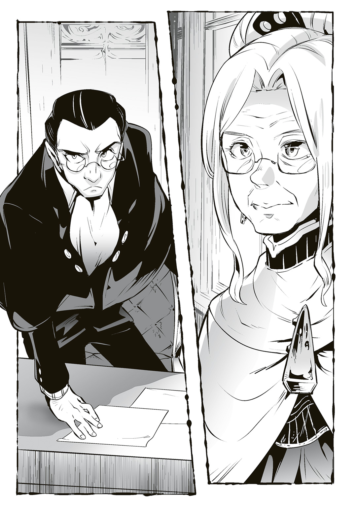
「間抜けそうな男だな」
アイスフェルドがつぶやくのに、
「勝率九割の検事よ。なんでも、自分の思い通りにいかないと気が済まない性格で、執念深い。あの人だったら、ドワーフ族に一族の誇りである髭を全部剃らせることもできるだろうと言われているわ」
ミカヤが話していると、サツキが口を開いた。
「人に許しを、罪に裁きを。では、開廷します」
サツキは正義の神テラミスを称える有名な一節を述べてから、獅子の紋章が描かれた槌を、カンカンと叩く。
ミカヤもアイスフェルドも口を閉じた。
「サラサンテ・ニコラ殺害事件、第一公判を行います。本件は呪術裁判であり、呪術が使われた事件だけを扱い、被告人は呪術師でなければなりません。被告人ローランド・アイスフェルドはその条件を満たしています。さて、原告の求刑は第一級殺人容疑で処刑。処刑方法は『釜茹での刑』で間違いないですね？」
「はい、これは許されない殺人事件であり、その凶悪性を考えれば『釜茹での刑』が相応しいでしょう。被告人は恐るべき呪術によって被害者を殺し、その後証拠品を消し去っていった。まさに非道。被害者が置かれた場所は、ミスリル銀製の密室です。その中にいた被害者を殺せるのは、この大陸中でもアイスフェルドしかおりません。恐るべき暗殺者に死の報いを受けさせるべきです！」
ゲイルは大げさに身ぶり手ぶりをまじえながら話した。
サツキは頷き、続けて言った。
「弁護側の主張は......無罪」
サツキの台詞に小鳥たちが一斉に飛び立つように、傍聴席がどよめいた。
「間違いありませんね？」
「はい......被告人は無罪を主張しており、それは辻褄が合うものでした。どうか、彼を色眼鏡で見ず、冷静に証拠品だけを見てください。有罪の根拠が何もないということが、わかるはずです」
ゲイルが「お前正気か？」というように目を大きく開けている。
無謀は承知の上だが、これしかないと判断した。もちろん、ミカヤもまだ全面的にアイスフェルドの冤罪を信じてはいないのだが、しかし事件をきちんと調べていくうちに、必ずしも有罪だという証拠があるわけではないということがわかってきた。指紋や足跡のような物的証拠は一つもなく、あるのは曖昧な目撃証言だけであった。
これなら、〝推定無罪〟を勝ち取れると判断してのものだ。この国の裁判官は、クロかシロかわからない時は、とりあえず全部クロにする傾向がある。その方が、民衆が安心するからだ。しかし、今回の裁判官、サツキは違う。彼女は推定無罪の原則を守ることに躊躇しない。心ない人間からしばしば「無罪判事」などと揶揄されることもあるが、しかし彼女は法の原則を遵守しているだけである。
「へえ、無罪を信じるのか」
アイスフェルドがおかしそうにそう言った。
「勘違いはしないで、まだあなたのことは信じていない。あくまで、プロとして仕事に徹するだけよ」
赤毛の巻き髪の少女と、あどけない顔立ちの、しかし妙にやさぐれている暗殺者はお互いを横目で見合った。
サツキが言った。
「では、原告から」
するとゲイルが立ち上がった。
「まず、被告人を尋問します」
「よろしい、被告人」
アイスフェルドは「はいはい」と肩を竦めて、証言台へと向かった。
「君に質問する。名前はローランド・アイスフェルド。間違いないね？」
「あんた、教育を受けてないのか？」
「なに？」
ゲイルは意表を突かれ、目をぱちくりとさせている。
「いや、普通教養がある人間は、自分から名乗るものだと聞いていたんで、あんたはそうじゃないようだと思ってな」
あはは、と傍聴席からおかしそうな笑いが漏れた。物見高い見物客らは、期待していた以上のものが見られそうなことに満足しているのだ。ゲイルは咳払いをし、
「......失礼。ゲイルだよ。検事だ。君はローランド・アイスフェルドだね？」
「そうだ」
「歳は、推定十八歳と書かれているが、生年月日はわからないとある。どうしてだね？」
「俺は戦争孤児でな。俺を拾った親父によれば、血と泥の海の中でよちよち歩いている俺を拾い上げたんだそうだ。なんで生まれた年がよくわからねえんだ」
「なるほど、気の毒だったね......しかし、その後、君は忌まわしい暗殺者になった。間違いないね？」
「ああ。少し正すと暗殺ばかりしていたわけじゃねえ。要人警護や諜報、工作といろいろとやった」
「......つまり、闇の組織で働いていたというわけだ。不思議なことだ......君のような才覚のある人間が、何故そんな忌まわしい職に就いたんだ？ もっと他に夢はなかったのかね？」
ゲイルはそこで、威圧するようにアイスフェルドの前の机に手を置いた。
しかし、アイスフェルドはというと、
「さあね。あんたも検事になりたくてなったんじゃねえだろ？ そんなにつまらねえ仕事、なりたいと思ってなる馬鹿がいるはずがないからな」
また、どっと傍聴席から笑いが漏れた。
ゲイルは「視線だけでこいつを殺したい」というような目つきで睨んでいる。
（これは......出足としては悪くないかも......）
ミカヤはそう思いながら法廷を眺めていた。とかく、人を馬鹿にすることに関しては天下一品のアイスフェルドだが、法廷内の空気はどちらかと言うと彼に好意的だ。ゲイルの狙いはアイスフェルドがどれだけの悪人なのかを印象づけることにあったろうが、しかし傍聴席に集まった人々は、暗殺者アイスフェルドが高慢な検事をこてんぱんにやっつける姿に喝采している。サツキまでもが、おかしそうに口元に手を当てているのだ。
（とても褒められたやり方じゃないけど、検事にやりこめられるより、よほどいい）
ミカヤは少し安心しながら、二人の男のやり取りを見守っている。
「......すると、君は暗殺の仕事は面白いと思っているのか？」
「あんだと？」
ゲイルの逆襲が始まった。
「君は私の検事の仕事をつまらないと言った。すると、殺しの仕事は楽しいと思っているのだね？」
「......」
ミカヤにもここで「はい」と答えることが何を意味するかはわかった。しかし、
「......面白いというのとは少し違うな」
アイスフェルドの瞳が一瞬だけ、獲物を狩る鷹の目に変わった。
「楽器の演奏や、本を読むこととは違う。だが、確かに殺しの仕事のスリルは......経験した奴は誰でもこう思うだろうよ。......一度殺ったら、止められないってな」
「......もう結構。君という人間のことが、よくわかったよ」
アイスフェルドはすうっと歩き、ミカヤの隣に座った。
流石にゲイルだ。今のわずかなやり取りでアイスフェルドの冷酷さを、はっきりと示してしまった。
「では、弁護人」
「はい。では、まず証拠品一として、殺されたサラサンテ氏の大邸宅の捜索結果の報告書を提出します」
ミカヤは警察による報告書のまとめをサツキに手渡した。サツキは眼鏡越しにふむふむと頷きながらそれに目を通す。
「......これによると、物的証拠はなしと書かれているわね」
「その通りです。大邸宅を総勢二十人の鑑識と呪力鑑識が調べたのですが、アイスフェルドの指紋も、毛も足跡も、何一つとして検出されていません。現場にあった〝精霊殺しの箱〟は魔道具ギルドが回収してしまっていますが、そちらからの報告でも中に証拠品などは落ちていなかったそうです。魔道具ギルドは自分たちで調べるまで遺体をこちらに触れさせない本当に厄介な連中ですが、一応の報告書は出してくれています。本当に粗末な報告書でしたが......そこにも、アイスフェルドがいたという証拠はなかった！」
傍聴席から驚きの声が漏れた。呪力鑑識とは、呪術が使われたと思われる事件専門の鑑識であり、五式以上の術士だけで構成される専門職である。
「みなさんは、被告人が捕まった瞬間から、彼の職業が暗殺者であることから、もう犯人はこいつに違いないと決めつけてはいませんか？ しかし、事実はこうです。無残にも殺されたサラサンテ氏の部屋、財布、そして〝精霊殺しの箱〟を調べても、『アイスフェルドが事件当日にそこにいた』、なんていう証拠は何もない！ 鑑識の報告は一点だけ、『何かの精霊が使われた痕跡がある』。ただ、それだけなんです！ どうか、彼を色眼鏡で見ず、証拠品だけを見てください。では、証人を招集します。〝左へ細長い街〟の警官のセトさんです」
セトが松葉杖をつきながら歩いてきた。あの後、治療の甲斐あってなんとか命だけはとりとめることができたが、しかし残念ながら彼の左足は、もう元には戻らないという。
「はい。ハイエナのセトであります！ お呼びいただいて光栄です」
セトは胸をこれでもかというほどに張っている。法廷内の雰囲気に、やや緊張しているようだ。ミカヤは彼を落ち着かせるために、にっこりと微笑んだが、しかしセトは顔を赤らめてしまった。セトさんはどうしてこんなに赤くなっているのかしら、何か私が悪いことを言ってしまったのかなと思いながら、ミカヤは質問をした。
「セトさん、あなたは〝左へ細長い街〟の警官ですね？」
「はい、一等巡査です！」
「そして、先日のグリフォンの襲撃の際には、私を命がけで守ってくれました。この場を借りてお礼を言います。本当にありがとうございます」
「いえ......そんなことは本官の勤めであります」
「さて......あのグリフォンの襲撃の時、私は不覚にもまさかそんな恐ろしい魔獣が襲いかかってくるとはまるで予想もしていませんでした。あの時私は護送車の真ん中に座っており、あのままだと私の体は粉々に砕け散っていたはず。にも拘わらず、私は生きています。それは何故でしょうか？」
セトはこくんと頷いた。
「それは、アイスフェルドがミカヤさんを救ったからであります！ あの男はグリフォンの襲来を逸早く察知し、ミカヤさんを引き寄せ、間一髪のところで救出したのであります。暗殺者に言う言葉としてはばかられますが......素晴らしい武勇でした」
また、傍聴席からどよめきがあがるが、それは今までとは違い、アイスフェルドの武勇に対する素直な称賛の念が籠もっていた。
「そして、その後私たちはグリフォンの圧倒的な戦力に死を待つばかりでした。セトさんも、足に重傷を負ってしまい......」
「はい、同僚が次々と倒される中、自分も死を覚悟しました......ミカヤさんや同僚を守れぬ自分の無力さを痛感するばかりでした......」
「その窮地を救ってくれたのは誰でしたか？」
「それは......やはり、アイスフェルドでありました！ 奴は途方もなく巨大な火炎の鳥の精霊を呼び出し、グリフォンを一撃で葬ったのであります！」
今度は傍聴席から拍手が上がる始末で、サツキが槌を振り下ろして「静粛に！ 静粛に！」と言わねばならなかった。
「異議あり！」
そこにゲイルが口を挟んだ。
「その武勇は大したものだが、一体本件となんの関係があるのですか？ 今のやり取りはサラサンテ殺人事件とは無関係だ。それに、アイスフェルドはその後脱走しようとして、そちらの弁護人のミカヤさんを拘束しているのですぞ」
ミカヤはきっとゲイルを睨みつけた。
「私が証明したいのは、被告人アイスフェルドの人間性です！ 確かに彼は善人ではありませんが......しかし、私とセトさんの命を救ったのです！ そして、脱走はしようとしたけれど、それは彼が置かれる立場を考えれば当然の行動とも言えるはず」
サツキは頷き、
「異議を認めません。弁護人、続けてください」
と言った。
「セトさん、率直に聞きます。わずかな時間ですが、アイスフェルドという男と接して、彼をどういう人間だと思いましたか？」
セトは拳を顎に当てて、うーんと唸った。考える時の癖らしい。
「奴は悪党であります！ が、悪党でありますが......ちょっとだけいい奴であります！」
その言葉にサツキも含めて法廷内の人間がくすりと笑った。
「悪党だけどいい奴？ 矛盾しているようですが、どういうことでしょう？」
「はい......奴は本官に酷い噓をつくとんでもない奴で、ミカヤさんにも酷いことをしました。しかし......本官は警官であるとともに戦士であります。共に戦った男のことはわかるのであります！ 奴はグリフォンを仕留めましたが、それはただ単に自分の身を守るためだったのかもしれません。しかし、結果ミカヤさんも本官もこうして生きています！ 全てはアイスフェルドのおかげであります。従って、奴はちょっとだけいい奴であります！」
ミカヤは笑って、
「ありがとうセトさん。さあ、席に戻ってください」
セトは一礼して、松葉杖をつきながらも堂々とした足取りで歩いて行った。
（ほんとにありがとう、セトさん）
ミカヤは心の中でもう一度礼を言った。今のセトの言葉は、たどたどしい上に矛盾を多く含んでいるが、それだけに誠実さがはっきりと表れていた。
果たして、これがサツキの胸にどの程度響いたか。
一目で家政婦とわかる壮年の女性が証言台に立っている。ゲイルはラッテンバーグに質問をする。
「それで、ラッテンバーグさん。あなたはサラサンテさんの家に勤めて二十年のベテランだ。今回は、気の毒でしたね」
ラッテンバーグは服の裾で眼尻の涙を拭いながら頷いていた。
「事件当日、秋の二の月......あなたはどこにいましたか？」
中の大陸では、一年間の暦を春と夏、秋と冬に分けてそれぞれの季節をさらに三等分にし、東洋では四月に当たる月を春の一の月としている。秋の二の月とは、東洋では十月に当たる月のことだ。
「私は屋敷にいました。台所に。旦那様が、客人が部屋にいる間は中に入ってこないようにとおっしゃって......けれど、まさかこんなことに......」
「その時の様子を、もう一度詳しく話してください。これは、密室殺人とされていますが、サラサンテさんが亡くなった時、それはどういう状態でしたか？」
「はい......旦那様が客人と何かを言いあう声が聞こえたので不安になりまして、しかし言いつけを守って台所で待っていました。すると、急に静かになって、これはおかしいと様子を見に部屋に入ると旦那様の姿はなく、閉じられた〝精霊殺しの箱〟だけが！ 大慌てで、旦那様と私だけが知っている暗号呪詩で箱を開くと......なんということでしょうか！ 旦那様はすでに冷たくなっておいでで......」
「すると、犯人はその客人だけということですね」
「ええ、他にはいません......！」
「ふむふむ。この〝精霊殺しの箱〟ですが、施錠はどうやって行うのです？」
「これは登録しておいた人が一人で中に入った時にしか鍵がかけられない仕組みになっているのです。この場合は旦那様だけ。私にも『ラッテンバーグさんも、万一のためにどうだい？』と言ってくれたのですが。旦那様はお優しい方ですので」
「ふむふむ。しかし、調書によればあなたは登録しなかった」
「ええ、私などにそんな危険なことはあるはずがないと思いましたし、なんだか少し怖い気もするでしょう」
「なるほど。すると、サラサンテ氏が一人だけで中に入った時にのみ施錠される。しかし、その中でサラサンテさんは遺体となって発見された......完全な密室殺人ということですな」
「そうです」
「誠に許しがたい犯行です。さて、あなたは事件が起きたとされる午後三時ごろ、屋敷の台所でお茶を飲んでいる時に、玄関に見慣れない男がいて、中に入っていくのを見た。そうですね？」
「はい......そいつは黒衣の怪しげな風体の男でした......太陽の日差しの下ではっきりと見たんです」
ゲイルは、
「その男は、今法廷内にいますか？」
すると、ラッテンバーグはおびえながらではあるが首を縦に振り、アイスフェルドを指さした。
「その男です！ 確かにこの目で見ました。おお、なんと恐ろしい！ そいつが、旦那様を殺したに違いありません！ テラミスよ、そやつに鉄槌をくだしたまえ！」
「ラッテンバーグさん、サラサンテさんはどんな人でしたか？」
ミカヤはゆっくりと法廷内を歩き、ラッテンバーグのもとへと歩いて行った。
「はい。私にもいつも優しい声をかけてくれる方でした。他にも恵まれない子供のために活動をしておいでで、児童施設のために寄付金を集めたり、そして犯罪に走ってしまった若者の面倒を見たりと......本当に惜しい人を亡くしたものです」
「素晴らしい方だったようですね。さて、つかぬことをお伺いしますが、これはともかく念のために聞いておかねばならないことです」
「はい」
「これが密室殺人といいますが、一人だけ密室を開けることができた人物がいますね。......ラッテンバーグさん、それはあなたです」
「な、なんですって!?」
ラッテンバーグは仰天し、その後、怒りをもって答えた。
「とんでもないことを言うのね！ 私がどれだけ......！」
「まあまあ、待ってください。これは一応聞いているだけです。勤続二十年で常に忠実だったあなたが本当にそんなことをするとは思えない。そして、事実、事件当日に『怪しげな黒衣の男』の目撃証言が、屋敷付近から多数報告されており、犯人がその男だと考えるのが筋です。しかし、ここは法廷。ラッテンバーグさんのアリバイも調べねば」
「......そうですか。わかりました」
「さて、事件の日の三時から三時半、あなたが台所にいたという証拠はありますか？」
「それなら、大丈夫です。ただ待っているのも退屈なので、台所の風電話で友達としゃべっていました」
この時代、高級な住宅や施設にのみ、風の精霊石を使った電話が通っていた。受話器と風の精霊石に電話線。これで通話が可能という発明をしたのは、かの大導師アルフガルドだという。
「なるほど。風の精霊電話局の通話記録にも残っているようですね」
「それに、私は一人で箱を開けて中を見るのが怖いので、巡査長のヤンさんを呼んでから一緒に開けたんですよ」
「なるほど。ヤン巡査長の調書にもそう書かれているようです。では、ラッテンバーグさんはシロということですね。大変失礼しました」
「もちろんですとも」
「さて、例の怪しい黒衣の男......犯人であるなら、報いを受けさせねばなりませんね。その男は、本当にこのアイスフェルドでしたか？ 顔、髪型など、見間違えはありませんね？」
「ええ！ はっきりと見ましたからね」
「なるほど。ちなみに、サラサンテさんは本をいくつも書いてらっしゃいますね。読んだことはおありで？」
「ええ、もちろん。私は旦那様の本の大ファンなのよ！ 幅広いジャンルについて書かれているし、どれも素晴らしいです」
ミカヤはそこで、ラッテンバーグから少し離れた場所で、懐から一冊の本を取りだした。
「では、この書籍も読んだことはあるでしょう？ サラサンテ氏のベストセラーの一つです」
「ええと......ああ、それはもちろん読んでいます。とても面白かったですよ」
「ほほう、そんなに面白かったのなら、当然タイトルと中身についても覚えておいででしょう？」
「ええ、もちろん」
「では、この本のタイトルとあらすじを、紹介してくれませんか？」
「どうして、そんなことを？ 今は関係ないでしょう」
「いえ、そんなに面白い本なら是非、私も読んでみたいと思いまして。どうぞ、紹介なさってください」
「ええ、是非お読みになってください。それは『凶悪犯罪と月影』というタイトルで、月の波動がどれだけ人を犯罪に駆り立てるのかについて書いた作品です」
ミカヤはこくんと頷き、本を傍聴席に向かって掲げた。
「ありがとうございます。この本は『一からわかる、魔獣と精霊の違い』というタイトルで、子供向けに書かれた本ですよ。どうぞ、ラッテンバーグさん、席にお戻りください」
エミーは証言台に立たされて居心地が悪そうだったが、ミカヤが近づくと弱々しく微笑んだ。そうだ、ミカヤは知っている。人生を破壊された直後の人は、涙の期間を通り過ぎると、弱々しく微笑むようになるのだ。
「エミーさん、ご足労ありがとうございます」
「ええ、ミカヤさん」
「このたびは、本当にお気の毒です」
「はい」
「さて、エミーさんにお聞きしたいのは、あなたの家に押しかけてきたアイスフェルドの様子です。彼はどんな感じでしたか？」
「初め見たときは、ぶっきらぼうだけどなんだか愛嬌があるなと。でも、まさかあの人が父を殺したなんて......」
と、エミーは今朝ミカヤに対して言ったことを、そのまま話した。
「しかし、アイスフェルドは容疑を否認していますし、物的証拠もありません。目撃証言も曖昧です」
「そう......ですね」
エミーは困った様子で、指を口元に当てている。
「どうでしょう。ここで、無茶な質問をもう一度します......。ローランド・アイスフェルドは犯人だと思いますか？」
「異議あり！」
たまらず立ち上がったのはゲイルだ。
「これは誘導尋問だ......！ 何より、被害者の娘に対し、道義にもとる行為です」
サツキは首を横に振った。
「異議を認めません。確かに答えるのが厳しい質問でしょうが、直観というのは理論よりも正しいという研究結果もあります。エミーさん、答えたくないなら答えたくないで結構ですので、どうぞ思ったままに答えてください」
エミーは困惑しながらも答えた。
「わかりません......なぜ、あの人が私の家のベッドで眠って、しかも父をサリーと呼んだのか。親しい人しか、父のことをサリーとは呼ばないです。けど......」
「けど？」
ミカヤは真っ直ぐな声を出した。
「けど......私にはわからないけど、やっぱりアイスフェルドが犯人だとは思えないんです。ひょっとしたら犯人かもしれないけど、やっぱり私には......」
ミカヤは頷いた。
「以上で質問を終わります。エミーさん、ありがとうございました」
物見高い傍聴人たちは満足げである。ゲイルが年端も行かぬ少女のような風体の新人弁護人をどう料理するのか、そこが見どころであったはずだが、なかなかどうしてミカヤという娘もちゃんと対抗しているじゃないか。そんな思いが、傍聴人の間で渦巻いているようだった。ミカヤは、廊下に出てカヴァ茶を飲んで一服していた。二十歳になったら絶対煙草を吸ってやろうと思っているが、もちろん今は吸わない。
（ここまでは悪くない......いや、六対四でこっちが有利......！）
ミカヤは極めて冷静に、そう分析していた。敗戦濃厚の裁判、それがわかった上で引き受けたのだし、これくらいの攻勢でアイスフェルドを救えるとも思っていない。暗殺者などという職に身を落とした男を、一回の裁判で救えるはずもない。しかし、この初公判はどうやらこちらの思い通りに進みそうだった。
乾いた革靴の音が聞こえてきた。茶色い口髭を綺麗に揃えた中年の男がいた。背はミカヤより頭一つ分高い。
「やあ、噂の天才君」
「ジョレンテ総監、初めまして」
中年の男、この町の警視総監の名前を読んだ。私は本当はこの男をよく知っているが、それでも「初めまして」と言っておくことにした。ミカヤはあくまで、仕事に徹して冷静に振る舞っていた。
「君は評判通りだったと言いたいところだが、残念だがそれはできないよ。評判の方が過小評価過ぎるからね！ 君は紛れもない天才だ」
「どうも、警視総監にそこまで言ってもらえて、光栄です」
「......しかし、惜しいね。そんな君のキャリアに、いきなり黒星がつくんだから。いや、誤魔化しても無駄だよ。君にもわかっているはずだよ。さっきは少しばかり上手くいったが、結局のところローランド・アイスフェルドは死ぬ。理由は、奴がローランド・アイスフェルドだからだ。そうだろ？」
「確かに、彼が死ぬ理由として必要条件は満たしています。しかし、十分条件は満たしていません。よって、私は最後まで戦います。そう、決めましたから」
「......恐れ入るよ。本当に血は争えんな」
それは、ミカヤの全身の毛が逆立つのに十分な台詞であった。背を向けて歩いてゆくジョレンテに殴りかからない自分の自制心が不思議だった。
ジョレンテはそこでふと振り返り、優しそうな顔になった。
「すまん......よく頑張っていると、そう伝えたかったんだ。俺たち〝五人衆〟の中でもトマスとサリーは俺たちと違ったよ。成績も才能もな......ほんとに、惜しい奴らだった」
この男はいつもこうだ。こっちの神経を逆なでするが、すぐに穏やかな表情で帳尻を合わせてしまう。
「よく堪えたな。立派だぞ」
信の穏やかな声が聞こえた。
「あのことは、アイスフェルドの件とは無関係ですから。それにしても、あいつ......よくのうのうと私に話しかけられるものね。面の皮がどうかしているんじゃないの」
「......『私の父さんを投獄した張本人のくせに』か？」
「......もう、戻ります」
ミカヤはカヴァ茶のカップをゴミ箱に向かって投げ捨てた。さっきのやり取りは、とりあえず忘れることにした。
ジョレンテは気に入らないが、今は過去の感傷に浸っている時ではない。
４
初公判の後半戦が始まり、一進一退の攻防が続く。ゲイルが「アイスフェルドは凍える刃でサラサンテを殺した後、〝透明化〟の呪術を自分にかけて窓から逃げ去った」と言えば、ミカヤは「ならば、何故部屋に足跡がないのか」と問い返す。
ミカヤは、まずまずの展開で初公判は終われそうだと思っていた。その矢先にゲイルが仕掛けた攻撃は、ミカヤの想像を絶する（恐らく、ゲイルの想像も絶していただろう）展開を生みだし、公判が一次中断されるほどであった。
再び証言に立ったアイスフェルドはいかにも退屈そうにあくびをしていた。
「眠いかね、アイスフェルド君。もう、そろそろ夕食の時間だ」
ゲイルは問いかけた。
「ああ。拘置所の飯がどんなものなのかと思っていたんだが、昔、要人を国外に逃げ延びさせる任務中に食った鶏の餌よりは、ちっとだけマシだな」
「結構！ 君が残りの人生で食える飯はあと何度か知らんが、恐らく私よりも少ないだろうからな。ゆっくり味わうといい。......さて、君は午前十時ごろに、一度サラサンテさんの自宅を訪問しているそうだね？ そう、報告書に書かれている」
「ああ、サリーのおっさんに用事があってな」
「殺しの用事かね？ みなさん......被害者、サラサンテが殺された時刻は、検死結果とそして被害者が昼過ぎまでは大学で講義の仕事をしていたことからも、恐らく午後三時から三時半の間だと見られています。そしてアイスフェルドはその時刻に、エミーさんの住む家に押しかけて強引にベッドで眠っているので、一見するとアリバイがあるように見えます。しかし......事実は違う。奴が精霊呪術の天才であることを忘れないでください！ 奴は風の精霊を駆使し、〝高速空中浮遊〟を使うこともできれば、〝物質透明化〟を使って自分の姿を消すこともできるのです！ これらの呪術を使えばサラサンテ氏を殺した後で、瞬時に移動し、何食わぬ顔でエミーさんの自宅に押しかけることも可能なのです」
「異議あり！ 全ては推測にすぎませんし、それらの呪術を使ったのかどうか......いえ、そもそもアイスフェルドがそうした高等呪術を使えるという保証もありません」
しかし、そこで逆らう声を出したのは、当のアイスフェルド本人であった。
「いや、そんなフツーの呪術、朝飯前だぜ、俺にとっちゃ」
「ちょ！」
こいつ、今がどういう時なのかを......。
「まあ、冤罪を着せられるのはゴメンだが......そんな十式程度の呪術が使えないみたいに言われちゃ、黙ってられないね。今、そのおっさんが言った呪術は全部使えるぜ」
ゲイルは勝ち誇ったような笑みを、そしてミカヤは赤い髪をかきむしりたいのを我慢しながらアイスフェルドを睨んでいた。
「ほう、素直で結構なことだ！ 一流の暗殺者というだけはあるな」
「もっとも、俺だったらあんたが言っているみてえな間の抜けた殺し方はせんけどな」
「......フン！ いずれにせよ、君にはアリバイはないということはわかったよ」
そこで、サツキは声を出した。
「弁護側の異議を却下します。検察側は続けてちょうだい」
サツキはそう言った。
ミカヤは仕方のないことだと思い、自分の耳たぶを触った。呪術裁判とはこういうものだ、それはわかっていた。被告人が呪術を使える場合、通常事件でのアリバイは成立しないのだ。沙漠のまっただ中で人間を凍死させる。別の街で眠っている男を、〝遠き風の矢〟で射殺す。呪術の達人には、そういうことが実際に可能なのだ。
「今のところわかっているのは、『精霊が使われた痕跡がある』という点だ。これは、呪術専門の鑑識も認めているよ。そして......被害者の部屋にあるミスリル銀で作られた防護部屋......」
ゲイルは指を鳴らした。
銀色の装飾が施されたミスリル銀の分厚い箱が、荷台に載せられて運ばれてきた。それは巨大なもので、係員が十人がかりで荷台を押さなければならなかった。
「みなさん、これが〝精霊殺しの箱〟だよ。魔道具ギルドから試供品をお借りしたものだ。現場にあったものは回収されていて出てこないがね。これは驚くべき代物だ。なんせミスリル銀でできており、なんと十五式以下の土水火風氷の五精霊の呪術を全て打ち消してしまう！ いざという時の避難所として、貴族の間で流行しているんだ。繰り返すが、耐えきれる術式は、なんと最大で十五式！ 無敵の要塞だよ」
ゲイルは自信たっぷりにアイスフェルドを見てから、〝精霊殺しの箱〟に視線を戻し、
「凍てつく鼓動よ！ 我が声を聞け！」
ゲイルの体に呪力が伴い、右手から鋭い氷の刃が飛び出したが、荘厳な銀の箱にぶつかった瞬間、粉々に打ち砕かれてかき消されてしまった。
「ご覧の通り、私が使える程度の呪術では歯が立たん！ ......この箱には襲撃者に対抗するための強力な加護がかけられており、私なんぞの呪術はたちどころに打ち消してしまう。アイスフェルド君......そこで聞くが、君が使えるのは何式までかね？」
アイスフェルドは少し考えながら、
「そうだな......十七式ってとこか」
その瞬間、傍聴人らは畏怖と羨望のまなざしで彼を見つめた。
「十七！ みなさん、聞いたか？ 君は最高の術師でもあると聞くが、まさしく天才だ。普通の人間はどれだけ鍛えてもそこまでの術式にはならんよ！」
「俺の知り合いにゃ、いくらでもいる」
「だが、この街と〝左へ細長い街〟にはいない！ 私はこれでも目いっぱい鍛えたが、六式が限度だ。中級精霊術士。それが呪術法律家の資格を取っ払った時の私の肩書きだよ。一方、ローランド・アイスフェルド君は十七式......最上級魔導師だ！ どれだけの才能に恵まれればそうなるのか......羨ましいほどだよ。この〝竜の大きなしっぽ〟の王立呪術学校の師範でも、最大で十一式までだ。というか、この街から半径百キロメートルに十七式の使い手なんぞ、いやせんのだ」
ゲイルの声は朗々と響いた。
「最上級魔導師！ これは、もはや物語の世界だよ。最上級魔導師は、みな、十五式以上の使い手！ 一人で小軍を制圧できるため全員が魔導師協会に絶対に登録されている。アイスフェルド君......君はその中の一人だ」
「連中が勝手に登録するんでな」
アイスフェルドはつぶやいたが、ゲイルは無視して先を続けた。
「攻め入る敵軍の将を倒し、巨人を殴り殺し、ダークエルム族の長を暗殺し......まさに、大陸最高の術師だ！ 君であれば、この〝精霊殺しの箱〟とて、炎竜ガザの前の軍隊のようなものだろうな。一息で消し飛んでしまうだろう」
この瞬間、ゲイルは確かに法廷を支配していた。人はゲイルに魅せられていたわけではない。彼が語るアイスフェルドの物語に魅せられていたのだ。
伝説や吟遊詩人の歌の中でしか聞いたことのない世界。
それを体現してきた男が、確かにそこにいるのだ。
ミカヤ自身も、自分が扱う被告人が、法廷中の注目を浴びても眉一つ動かさず、ただ冷静に、むしろ私たちを試しているような様子でくつろいでいる姿に、まるで自分も物語の中に入ってしまったかのような気分に陥っていた。
「あの少年は、今はミスリル銀の手錠によって大人しくしている......だが、もし一たび暴れだせば、法廷を地獄に変えることもできるような男なのだ！ みな、それを忘れてはならんぞ！」
そうだ、ゲイルの言う通りだ。ミカヤは考えていた。あの〝精霊殺しの箱〟は、王宮でも使われているような特別仕様の代物。並の襲撃者では、呪術を使うことすらできない。
しかし、アイスフェルドだけは全く別なのである。
「つまり、あれを壊せるのは、今この街で生きている人間では君だけということだ。君は風の精霊で、まず被害者の入ったパニックルームの周りの声を封じ、そして桁違いの呪力でもって殺害したのだ」
ゲイルの鋭い言葉を、しかしアイスフェルドは風のように受け流していた。
「異議あり！」
ミカヤはすかさず手を上げていた。
「アイスフェルドが十七式の呪術を使えるというのは、本人による証言です。本当にそれが可能なのかどうかを調べる必要があります」
サツキは首を縦に振った。
「異議を認めます。これは、この裁判の根幹に関わることでもあります。いくらローランド・アイスフェルドとはいえ、十七式もの術式を本当に使えるのか。それは確かめねばなりません」
傍聴人たちから喝采が上がった。結局、ここに集まった傍聴人らは、これが見たいがために裁判所までやって来たのだ。一方、ゲイルは顔色を青くした。
「しかし、裁判長。それにはこの男のミスリル銀の手錠を外し、〝術式監査の儀〟を行わねばなりません。それは危険極まりないことです」
ミカヤはまた手を上げた。
「それでも！ その取り調べを行わねば、裁判は先に進みません。そもそも、被告人が捕まっている理由は一点！ 〝精霊殺しの箱〟を破壊しうる術師がアイスフェルドだけだからということだけなんです！ 他には動機も物的証拠もありません！ もし、アイスフェルドが口先だけの男で、せいぜい十四式までの術師だったら？ 私をグリフォンから救ってくれた時に使ったのは、十二式の火の鳥でした。アイスフェルドの術式がもし十四式までであれば、この裁判はここで終わりです。もちろん被告人の無罪でね」
傍聴人らは「いいぞ！」と野次を飛ばす。
それを、サツキが槌を振り下ろして黙らせる。
「静粛に！ これより、アイスフェルドに〝術式監査の儀〟を執り行います。ミスリル銀騎士四人にて、アイスフェルドの周りを取り囲みなさい！」
鈍く光る銀の甲冑に身を包んだ騎士四人が現れた。手にはミスリル銀でできた槍を持ち、厳めしい兜で顔を覆っている。全員が高度な武術と呪術の使い手であり、呪術裁判の際には必ず常駐させる決まりになっている。ミスリル銀騎士一人分の装備だけで金貨二百枚かかるとされており、傍聴マニアからの人気も高い職種である。
ミスリル銀騎士四人はアイスフェルドの周りを対角線上に囲んだ。
サツキはそれを確認し、
「少しでもおかしな動きをすれば、槍で串刺しにしなさい。アイスフェルドの術式を調べます」
そこに手を上げたのはゲイルであった。
「わかったサツキさん...。では、調べるのは私にさせてもらおう」
「危険は承知の上かしら？」
「......言いだしたのは私だ......。これくらいはやらせてもらおう」
こう言ったのはゲイルの矜持であろう。ネクタイを外し、自身の法衣の一番上の留め金を外してアイスフェルドのもとへと向かう。
「じゃあ、手錠は私が外します」
ゲイルばかりに危険なことはさせられない。ミカヤは係員から手錠の鍵を受け取り、アイスフェルドのもとへと向かった。
「おいおい、チンケな手錠一個外すのに大層なこったな」
アイスフェルドはミスリル銀騎士に囲まれながらも、悠然としたポーズを崩さない。
「アイスフェルド......大人しくしていてよ」
ミカヤはアイスフェルドの手錠に鍵を近づけた。
「元々、大人しい性格でね」
アイスフェルドは肩を竦める。ミカヤは彼の手錠を外してやった。
「よし、これから君の術式を調べるぞ。さあ、これだ」
ゲイルが重々しく言い、針がいくつもついた大きな盤を持ってきた。
「これを知っているだろう。術式監査のための装置だ。君はこの端を持って呪力を高めてくれれば、針がその分動く。しかし、慎重に一つずつ......」
「くだらねえな」
アイスフェルドの声は、爽快とも言えるものであった。
「な......」
ゲイルは呻き、ミカヤは息を吞んでいた。
「んなまどろっこしいことじゃなくてよ、そこにあるじゃねえか。ちょうどいいのが」
アイスフェルドが促した先にあるのは、ミスリル銀でできた厳めしい巨大な箱。
「アイスフェルド！ あなた......」
アイスフェルドは歩きだしていた。ミスリル銀騎士の手に力が籠もる。
ミカヤは今にもアイスフェルドが槍で串刺しにされるのではないかと気が気ではなかった。
しかし、ミスリル銀騎士たちは動けなかった。
「やめとけよ。どうなるかわかるだろう？」
アイスフェルドの言葉そのものに呪力が備わっているかのようであった。武芸の達人であるミスリル銀騎士たちは、即座に彼我の戦力差を感じ取ってしまったのだ。
黒衣の少年は、〝精霊殺しの箱〟の前に立っていた。
「てめえら、さっきから人の呪力にケチつけやがってよ」
そう言って、自身の法衣の上から二番目の留め金を外す。その瞬間、漏れ出た呪力が法廷内に一陣の風を巻き起こしていた。
「や......やめなさい！ アイスフェルド！」
ミカヤは叫んでいた。
「どうでもいい裁判だがよ......これでも呪術訓練に血を吐いてきたんだ。呪力にケチつけられるのは我慢ならねえな。この大層な箱を壊せばいいんだろ？ だったら......」
「アイスフェルド......！」
アイスフェルドはミカヤに自信に溢れた視線をぶつけてから、朗々と呪詩を唱えた。
「十六式解放......！ 火よ......風を焦がし、土を焦がし、魂と海を焦がす火よ！ 原始の火。万物は離散する。その中央を持ちこたえよ！」
アイスフェルドの左手に籠められた呪力。それは絹のように繊細だったが、空気そのものを溶かすほどの熱を孕んでいた。
十六式の〝火の剣〟、高温のあまり青く燃えている剣を、アイスフェルドは振り上げていた。
人々は、ミカヤも含めて、ただ目の前で信じがたいような呪力の火の剣を生成し、〝精霊殺しの箱〟の前で振りかざしている少年の姿に魅入られていたのだ。
アイスフェルドは法廷中を悠然と見回していた。
「証明は......これで......十分だろうがっ！」
火剣一閃。
その太刀筋の美しさに、近くにいたミスリル銀騎士は驚嘆の声を上げていた。
アイスフェルドは火の剣を自らの腰元に収めてから消し、残身を取っていた。
〝精霊殺しの箱〟から、ぴしりという破裂音が鳴り、その直後、斜めに亀裂が走っていた。
次の瞬間に見えたものは、絶対に呪術を通さないと言われる〝精霊殺しの箱〟の上半分が、斜めに入った亀裂に沿ってずり落ちていく様であった。
亀裂には高温で焼けた痕があり、ずり落ちた箱の上部が床に当たって大きな音を響かせた。
「......これでいいかい？」
傍聴人は声すら出せない。
ミカヤはすぐさまミスリル銀の手錠を持ってアイスフェルドのもとに駆け寄った。
「あなたねえ......！ 何をしたかわかっているの!?」
「証明だろ？」
「まったくもう......！」
言いながらミカヤは手錠をアイスフェルドに嵌めなおした。胸がばくばくと鳴っているのが聞こえないかと心配であったが、ともかくアイスフェルドは手錠と共にまた証言台に帰った。
こいつが、ただの子供だということを覚えておかねばならない、とミカヤは思っていた。挑発されればあっさりと乗り、質問されればありのままに答えてしまう。
ぱち、ぱち、ぱちと誰かが拍手を始めた。やがてそれは大きなものへと変わり、法廷内は拍手と喝采に包まれていた。
「静粛に！ 静粛に！」
法廷が治まるまで、サツキは何度も槌を振るわなければならなかった。
「アイスフェルド......あなたが私の騎士を脅した罪はあとで問いましょう。しかし、これでアイスフェルドの呪力は証明された......。この男にとっては〝精霊殺しの箱〟もバターのようなものね。さあ、裁判を続けましょう」
ミカヤはこれで裁判が不利になると知りながらも、一歩前に進むことができたと思うことにした。被告人のことがわからないままでは戦えるはずがない。
そして、同時に思っていた。
この男のアリバイを考えるのは至難の業だ！ ほとんど全部の呪術を使える暗殺のプロ......！ こんな男、どうやってアリバイの証明をすればいいというのか。
ゲイルは顔に浮かんだ汗を拭い取り、大きく咳払いをした。
「ごほん......いや、見事。驚いているよ。驚嘆している。見事だ、アイスフェルド君」
「そりゃどうも」
「これで証明された......！ 君はサラサンテ氏を殺すために、彼の大邸宅に向かったんだ。そして、標的を確実に殺すため、周囲を下見していた......それが、朝に家に行った理由だね？」
「......」
「今度ばかりは、誤魔化そうとしても無駄だ。暗殺者である君が、サラサンテ氏のような人格者の家に行く理由など、他に考えられないからね」
アイスフェルドは耳の穴に指を突っ込んで、そこについた垢をふうとゲイル目がけて吹いてやった。ゲイルは不機嫌そうに、スーツをぱんぱんと払った。
「ワリィけど......ぜんっぜん違うぜ、検事さん。そう、夜空がチョコレートでできているって思っているガキみてえに、勘違いしているぜ」
どこまでも変わらぬアイスフェルドであった。
「貴様......！」
ゲイルは額に血管を浮かせていた。
「俺は殺しの仕事で、一々下見に行ったりしねえ。行くとすりゃよほどの大物、大国の宰相クラスの時だけだ。何より、俺はサリーを殺そうなんて、これっぽっちも思っちゃいねえ。おっさんは、ダチだからな」
「では何故、サラサンテ氏のもとへ行ったのかね？ 友人だと言ってるが、君のような見下げ果てた殺し屋が、サラサンテ氏の友人であるはずがない......！ 本当のことを言いたまえ！」
「さっきからずっと、本当のことしか言ってないんだけどなあ。噓は嫌いだし」
「いい加減にせんか！ サラサンテ氏と君の関係を言いたまえ！」
アイスフェルドは革手袋をつけた左手を掲げてみせた。濃い茶色の分厚い革手袋、一目で何らかの呪力が備わっているとわかる。
「この手袋......俺が七つの時からつけている。つけてないと死ぬからだ」
ミカヤは思わず椅子から立ち上がってしまいそうになった。これからアイスフェルドの口から発せられる言葉が、法廷内に途方もない衝撃を与える......そんな予感に包まれたからだ。
「俺が呪力を身につけた時、師匠は俺にこう言った。このままでは、遠からずお前は死ぬ。体内に宿した精霊が、あまりにも強力過ぎ、今の容量を超えてしまっているのだ......このままでは体内精霊が成長した段階でお前は焼き尽くされて灰となり、その後世界が焼き尽くされるだろうと」
ひい、と傍聴席から女の悲鳴が上がった。
法廷中でざわめきが起き、傍聴が趣味の者でさえ、うろたえたように周囲を見回している。
「俺の師に当たるジジイがな、俺にアイスフェルドって名前をつけてくれたんだ。氷を背負う者......常に氷の精霊を体内に住まわせておくくらいに、それくらい冷静に自分の体内精霊を支配しろってさ。いい名だろう？」
「......その体内精霊とは、なんだ？」
ゲイルが額から汗を流しながら呻くように言った。
「焰の王だ。アフリートが俺の左腕に住んでいる」
傍聴席から、悲鳴が上がった。恐慌状態になる者もおり、
「アフリートが出れば、この世の終わりだぞ！」「今すぐ処刑しろ！ 裁判なんぞやっている場合か！」と怒号が飛び交った。
「静粛に！ 静粛に！」
サツキだけが冷静に槌を振り下ろし、
「騒ぐ者は出て行きなさい！ そして、この世の破滅が来ることはありません。何故なら、今アイスフェルドの腕にはミスリル銀の手錠がかけられているからです。精霊王とはいえ、ミスリル銀の力には逆らえない。わかりましたか？」
その指摘に、傍聴席で騒いでいた人たちは恥ずかしそうに顔を見合わせ、大人しく席についた。
流石、サツキさんだ......ミカヤは尊敬の念を込めて、サツキが眼鏡を拭く姿を見ていた。今のアイスフェルドの発言には、ミカヤも飛び上がりそうになっていたのだ。......体内にアフリートを飼っている人間がいるなんて！
いったい、どれだけの容量があれば、そんなことができるのか。
「検察官、尋問を続けて」
ゲイルは脂汗を拭いながら頷き、アイスフェルドに向かい直ったが、尚その顔には動揺の色がはっきりと残っていた。
「あー、コホン......なるほど君が何故、精霊呪術の天才と呼ばれているのかは、よくわかったよ。精霊王を体内に飼うなんてな......！ 出会い方が違えば、尊敬してしまうかもしれん。しかし、そのことが、この事件と何の関係があるのかね？ 今はサラサンテ氏と君との交友関係についての質問だったはずだが？」
ゲイルはしかし、取り直したはずの気を、再び失うことになった。
アイスフェルドが飄々としながら、
「まだわかんねえの？ おっさん、ちと鈍いようだな」と言い、もう一度左手の革手袋を掲げ、
「この手袋は俺の体内精霊の暴走を止めるために作られた特別な代物だ。呪術、金属加工、精霊の生態について詳しい奴にしか作れねえさ。そう......大学教授が務まるくらいにな」
「ま、まさか......」
ゲイルがそう呻くと同時に、ミカヤも心中で呻いていた。（まさか！）と。
「そう......こいつはサリーのおっさんに作ってもらったんだよ。俺が特殊訓練を受けていた頃に、特別にあつらえてくれた。おっさんは、俺が暗殺の訓練を受けている時にも声をかけてくれたし、なかなかいい奴だったよ」
そこで、ミカヤにも限界が来た。もう耐えられない。
「な......あなた!? 自分の言っていることが、わかっているの？」
ミカヤは立ち上がり、黒衣の男に指を突きつけた。
「サラサンテさんが、あなたの手袋を作った!? 暗殺の訓練を受けているところも見ていたですって？ 馬鹿を言うのもいい加減にして！ あの人がどういう人なのか知っているの？」
傍聴席に座っていたエミーも、憎しみを込めてアイスフェルドを睨んでいる。
しかし、アイスフェルドは肩を竦めて、右耳のイヤリングを揺さぶった。
「自分のことでつく噓は嫌いだ。何度も言わせるな。それに、おっさんのことを知らないのはお前さんの方じゃねえのか？ 本を読んだだけで、作者のことわかった気になっているのか？ 俺は何度もおっさんに会っているんだ」
今度こそ、傍聴席から鳴りやまぬ怒号が巻き起こった。
「この噓つき！ サラサンテ様が、そんなことをするはずがない！ 地獄で舌を引っこ抜かれてしまえ！」
「いや、きっと事実に違いねえ！ だいたい、前からなんか怪しいと思っていたんだ」
「でたらめばかりの殺し屋！ 早く釜茹でにしろ！」
サツキがガンガンと槌を振り下ろした。
「静粛に！ 静粛に！」
しかし、今度ばかりはサツキが声を上げても収まりそうになかった。無理もない。〝赤き焰の帝国〟においても指折りの人格者だと言われていたサラサンテに、暗殺者との関わりがあったことが主張されたのだ。エミーは涙を流しながら、逃げるように傍聴席から走り去っていった。
「静粛に！ 公判は中止します！ 全員、今すぐ退席しなさい！」
サツキの槌が乾いた音を響かせ、公判は中止となった。
第三章 調査開始
【精霊呪術法 第五十二条】
当該精霊が周辺に一切いない時、術者は当該精霊を使えない。尚、体内精霊も同様である
１
看守が出て行き、ミカヤは防刃ガラスの窓越しに男と向かい合った。
黒衣の男には疲れの色はない。
「調子はどうだ？」
ミカヤは大衆雑誌『レトリック』を差し出した。「人格者、サラサンテの闇の顔とは？」というタイトルで、サラサンテが過去に闇の組織と関わっていたという内容の中傷記事が十ページも使って書かれている。
「あなたのせいで、エミーさんの家には記者が殺到している。どちらが被害者なのかみんな忘れてしまったようよ」
「ま、世間ってえのは、そういうもんだ」
「......いい加減に聞かせてちょうだい。本当のところを」
「本当のトコも何も、全部話した通りだぜ」
アイスフェルドはぽりぽりと首筋を搔いている。
「この呪力封印の手袋は、サリーのおっさんに作ってもらったもんだ。それで、俺は手袋の調整をしてもらいに行ったが、留守だったんでエミーって娘の家で待っていたんだ。そしたら、俺の知らないところでおっさんは殺された」
「どうして、サラサンテさんが、あなたのような暗殺者と関わるのよ？」
「知らんよ。ジジイの訓練学校によく来てくれていて、それで俺の体内精霊があまりに強力過ぎて、このままじゃアフリートに食われるぞって言われて。それで作ってもらったんだ。あの糞学校の中じゃ、面白いおっさんだったし好きだったよ」
「......それを信じろと？」
「信じるかどうかはお前が決めることだ」
「......じゃあ、もう一つ聞きたい。貴方はあの沙漠で、『必要な情報は手に入れた』と言った......。それはどういう意味？」
「うーん、まあ答えてやってもいいけど、こっちばかりがしゃべるのは不公平だな。今度はお前が話せ」
「な、何よ急に」
「お前が、俺の弁護を引き受けた理由は？ まさか、俺を救いたいってだけじゃなかろう？ お前、バカだけど頭は悪くねえもの。本当は何を救いたいんだ？」
ミカヤは黙って、巻き髪を少しだけいじった。
「お前が言えば、その分だけ俺も答えてやるよ。どうだ？」
こういう交渉はアイスフェルドにはお手の物のようで、逆らおうとしても無駄だってことはわかっている。それに、ミカヤもなんとなく誰かに話したい気分だった。
「......そうね。確かにこっちばかりが質問するのは公平じゃないかもしれない。......私の父は弁護士だった。青き水瓶の勲章も貰ったことがある......法曹界で偉大な実績を挙げた人間にだけ贈られる、名誉の勲章よ。でも......八年前のある日、脱税の容疑で逮捕された」
「へえ、金が好きだったのか」
「違う！ 恵まれない人のために、無償で弁護を引き受けるような人だったのよ！ 父さんは、いつでも私の誇りだった......！」
「知っていると思っていた奴のこと、知らないってこともあるだろ」
「ねえ、聞く気あるの？ ないの？」
「はいはい」
「でも、あの日、父が捕らえられた時......信じてくれっていう父さんの言葉を、私は信じてあげられなかった......」
あれは、生き地獄だったわ。華やかな舞台でいつも勇ましく弁護に立つ父さんが、私の憧れだった。それが、いきなり警官に囲まれて、いつも一緒に戦っていたはずの検事と警察、記者たちがみんなで私たちを痛めつけた。中傷され罵声を浴びる中で、私もだんだん父さんに疑いを持つようになった。ねえ、アイスフェルド。世の中の人がみんな、自分のことを陰で悪く言っているんじゃないかって思いこむ気分になったことがある？ あなたみたいな人からすれば馬鹿馬鹿しいでしょうけど、あの当時の私はそんな気持ちで過ごしていたの......八つの頃だった。今まで友達だと思っていた子たちが、波が引くように私から遠ざかっていって、何故かメイだけがそばにいて、いつも通りうるさくしゃべってくれていたのが救いだった......いつしか、私は父さんのことを恨むようになっていた。いつでも、即断即決の私が、その時は父さんを信じるのかどうか決められなかった。同じく弁護士だった母さんは、そんな私のことを情けないと言った。どうして、父さんを信じてあげられないの？ って。私もやがて落ち着きを取り戻して、父さんのことを信じようと思った......でも、必死で弁護をする母さんも、元々体が弱い人だった。やがて心労で倒れて、それっきり......。私は冤罪のせいで、二人の親を同時に失ったのよ......！ そう、今ではあれは絶対に冤罪だと信じているし、いつか父さんを牢獄から出してあげたいって、その一心で勉強したわ。でも、あの時私は信じてあげられなかったの。あなたからすれば、馬鹿みたいでしょうね......あの頃の私は、周りからの視線を気にして自分の父親を信じてあげられなかった、ただの愚か者だよ。
不思議なことに、アイスフェルドはそっぽを向いていた。馬鹿にされる、とは思っていなかった、多分こういう時にまで人を馬鹿にするような男じゃないだろうって、でも......。
「......別に愚かとは思わねえな。人間は他人がいるから人間でいられるんだ。周りが気になるのは当たり前じゃねえか」
「アイス......」
「ま、お前さんがそんなチンケなことでずっと悩んでいるのは馬鹿みてえだと思うけどな。なんでも思い込みが激しい、本物の阿呆の赤毛だな」
まさか、そんな形で励ましてくれるとは思ってもいなかったので、なんだか私も照れてしまった。
「......ふう、久しぶりに話した。泣かずにしゃべれるようになるよう練習したんだよ。さて、今度は私の番よ。アイスフェルド、『必要な情報は得た』っていう台詞、どういう意味？」
気を取り直してミカヤは男の目を見た。
「ん......」
「グリフォンから助けてくれた時、そう言っていた。あれはどういう意味なの？」
「簡単なことだ。サリーを殺した犯人の手がかりだ」
「え......」
「どういういきさつで殺されたのかわからないんで、わざと捕まって警察内部から調べることにした。目星はまだつかないが、もう警察に用はなくなった。そういう意味だよ」
「あなた......じゃあ、本当に犯人じゃないって言うのね？」
「自分のことでは、噓はつかんよ。あとは見つけ出して、カタをつけるだけだ。要は、そいつを殺すって意味だけどな」
ミカヤは苦い唾を飲み込んだ。
「アイスフェルド......あなた！」
アイスフェルドが、沙漠でグリフォンを倒した時と同じ目をしていたからだ。余分な感情を全て取り除き、ただそのことだけに集中し、研ぎ澄まし、目に見えるほどのオーラを放っている......それは、本物の「殺意」だった。
「俺が『殺す』って言う、その意味はわかるな？ そう言ったが最後、必ずやり遂げてきた」
「いいこと、一度だけ言うわよ。......止めなさい！ 止めるのよ」
「二度言っているじゃねえか。聞くと思うか？ その言葉をよ......。そうだな、俺とおっさんのことも話してやろう」
俺は戦災孤児だ。大抵は殺されるか飢えて死ぬ。だが、生まれ故郷の〝紅の土の国〟は、その中から俺みてえのを探し出して、鍛えている。隠密工作専門の「王の月狼」ってとこで訓練を受けていた。初めに体内精霊の出し方を教わって、やってみたら、いきなり〝アフリートの左腕〟が生えて、教官を一人焼き殺しちまったんだ。そいつもロクデナシだったから、まあいいんだがよ。とはいえ、ジジイ......月狼の首領で俺の師匠なんだが......ジジイが「このままほっときゃ、お前も焼け死ぬだけだ」ってな。流石に俺も死にたくねえし、焦ったよ。ある日、サリーのおっさんが来てくれてな、「噂の怪物くんは、君かね。おおっ、なんてこったい、慈愛の神ユーフェリウスよ！ こんな子供の腕に、どうして世界を滅ぼす力が眠っているんだ。こりゃおったまげて、寿命が縮むよ」って。それで、こしらえてくれた革手袋を俺の左腕に嵌めてくれたんだ。今、生きているのもあのおっさんのおかげだ。おっさんは、サリーって呼ぼうとすると何故か怒るんだが、少なくとも訓練教官の誰よりもいい奴だったよ。俺もおっさんのことは好きだった。
「なんで、お前にゃ悪いが、犯人は殺すぜ」
ミカヤは、話を聞きながらやはりこの男にも、普通の人間らしい感情があるのだ、と思っていた。
大切な人を傷つけた奴に復讐したい。それは私も散々味わった感情ではないか。
この男はしょっちゅう私のことを「赤毛」と言ってくる。赤毛は幼少時代の私のコンプレックスだったけれど、この男から言われると不思議と腹が立たない。
それは、この男の場合はただ単に「見たまま」を言っているだけだから。子供が警官を見て「青い服！」と言うのと同じこと。そうだ、こいつは本当に子供なのだ！ 子供は感情のままに行動する。だが、こいつには実行するだけの力もあるのだ......。
「駄目よ......。大陸刑法では、復讐なんて認めていないし、私も認めない」
ミカヤは一から教えて聞かせるように言った。
「へえ、なんで？」
「刑罰はあくまでも犯罪者の更生を促す教育刑罰であるべき。応報刑は悲しみしかもたらさないと、私の父も言っていた。私ほんとは、死刑だって反対の立場なんだからね......だいたい、人が人を殺す権利なんて......」
「あ～、その手の話ウンザリなんだ。パスして次にいこう」
「ちょ、待ってよ！」
「男が生きるにゃ、殺し合ってなんぼだろ。昔おめえみたいのとよくしゃべったけど、何も生まれなかったよ」
「もう......あんたって人は......」
死刑論は、相手の人間性を知るのに最適なんだけれどな。
「次は俺の番だ。お前、沙漠で変なこと言っていたよな。『あなたは私が守るのよ』って、ありゃ何だ？」
「ああ、あれは私にもよくわからない。そう言ったら、あなたを引きとめられるかと思って。結果的には、警官隊が来たおかげであなたはまたこうして拘束された」
「ふん。よし、じゃあ最後に俺からだ。なんで......俺を無罪にしようと思った？ あの時点でも、そして恐らくは今も俺の無罪なんか信じちゃいねえはずだぜ？」
ミカヤはなんと答えようかと迷った。
「まあ、今は少し信じかけているようだが、それにしてもなんで無罪でいこうと思ったんだ？ 初めは『釜茹での刑』を止めさせるってだけだったはずだよな？」
ミカヤは、アイスフェルドの右の耳を指さした。そこには常に、白い真珠のイヤリングがつけられている。
「それを見たからよ。あなたにも、恋人がいるんじゃないの？」
アイスフェルドは「けっ」と言って顔の左側をこちらに向けた。
「あなたが自分でイヤリングを買うはずがない......それは恋人から貰ったもののはず......あなたにも帰りを待っている人がいる......そう思ったからよ」
「こんなもん一つで、よくそこまで妄想できるな」
アイスフェルドは少し遠い目をして、
「恋人なんざいねえ。あいつは、恋人なんかじゃねえよ」
「じゃあ、家族？ 親友？」
「......ふん」
「今度は否定しなかったわね。あなた、自分のことには噓をつかないんですものね」
ミカヤは笑顔になっていた。初めて、この少年の素顔に触れることができたのかもしれない。そう思っていた。なんのかんのと言っても、まだ十八歳の子供なのだ。そっぽを向いて拗ねている姿は、なんだか可愛らしくもある。
「あ～あ、お前さんと話していると疲れるぜ。もう眠るから、帰ってくれや」
「あら。じゃあ、今度はあなたのその恋人の話を聞かせてもらおうかしらね」
横を向いているアイスフェルドに微笑みかけてから、ミカヤは立ち上がった。
彼とは何故か話しこんでしまう（全然気が合わないのに）けれど、いつまでもこのままではいられない。この男の弁護を本気ですると決めたからには、やるべきことが山ほどある。
２
ミカヤは〝左へ細長い街〟に来ていた。相変わらず、暑い町だ。ミカヤは着ている白い法衣が肌に張りつくのを感じていた。
「ここは、何もないところですよ」
セトが浅黒い顔に白い歯を覗かせた。恐らく、この町を見た誰もが思うであろう感想を述べている。ミカヤがこの町の調査をしたいと言った時、真っ先に案内を買って出てくれたのだ。ミカヤは、緑色のサボテンの実に赤い味噌がたっぷりかかった串焼きを食べている。なかなか旨い。
「でも、これ美味しいですよ。それにセトさんも、忙しい中をありがとうございます」
「ヤン隊長から言われているんです。お前は当面、ミカヤの付き人をしとけばいい。あの娘はまだ若いヒヨッコだが、自分の歩く道が見えているぞって」
あの武骨者のヤンがそんなことを。内心誇らしく思いながら歩いていると、前に見慣れた女の姿があった。
「ハアイ、ミカヤ！ と、セトさん。お元気？」
「メイ......あなたに会ったら言っておきたいことが山ほどあったんで、どれから言おうかと迷っているところよ」
暑さのため髪に汗を滴らせ、黒い眼鏡をキラリと光らせるのは記者のメイ・ヴォーデンだった。
「あら、どれから言ってくれるのかしら。ちなみに、セトさんとはどんなご関係に？ まさかまさか、私をさらに喜ばせてくれるような関係とか？」
「違う！ 相変わらず、私の話だけ聞かないわね」
メイとしゃべるといつもこうなる。メイは聞き上手なはずなのに、ミカヤとしゃべる時だけ余計なことばかりどんどん言ってくる。それにつられて、ミカヤはさらに熱くなってしゃべってしまうのだ。
「まず......アイスフェルドの記事についてだけどね。あんなデタラメばかりで恥ずかしくないの？ 証拠も何もないあいつの伝説をそのまま事実のように書いて......おまけに呆れるのは、あいつが『女の子なら誰でもうっとりする美貌で愛嬌がある』ですって？ 冗談はよして。あいつは、人間の皮をかぶった大虎の、その皮をかぶった毒蛇の、さらにその皮をかぶった巨大なロック鳥よ。あいつの見た目に惑わされた連中の、キャアキャアとうるさいこと......！ 全部、あんたの記事のせいよ」
びしり、と人差し指を突きつけたが、メイはおどけてその指をぱくっと食べようとしたので、慌てて引っこめる。
「あれまあ、そのロック鳥だか毒蛇だかに、随分入れこんじゃって」
「入れ込むのも当然です。初めての依頼人なんだから！」
「はて、それだけなのかしらね。んじゃ、私もちょっとだけいいこと教えてあげようかしら」
「なんなの？」
悔しいが、メイが「いいことを教える」と言う時は本当に重要なことを話すのだ。
「例の〝精霊殺しの箱〟......魔道具ギルドが回収している......全品をね」
「なん......ですって？」
ミカヤはセトと目を合わせた。
「あの〝精霊殺しの箱〟......。付与術士が金貨百枚かけて作った、金持ち用の物だけど......魔導具ギルドはこれを全品回収」
「私、事件以降何度も現場の〝精霊殺しの箱〟を視察しようとしたんだけど、一度も許可が下りないのよ......！」
「警邏部が隠そうとしているけど、友達の神官から聞き出したわ。警邏部ってね、隠す気になれば街一つを大陸から消すこともできるのよ」
「ええ......よく知っているわ」
あの日、トマスが投獄されて以降、ミカヤはヤムス神官から距離を置いた。あの時、トマスはヤムス神官とテラミス神官から吊し上げにあったのだが、どちらかというと感情のない爬虫類のような視線を投げかけるのはヤムス神官でもある警邏官であった。
「今、事件現場にあった箱はヤムス神官長が保管してしまっていて、手が出せない」
「おかしいわね。普通、もっと調べようとするはず。この事件は最初から警邏部や記者の動きが変なのよ......」
「そうね、あんたも用心した方がいいわ。一度酷い目にあった人は、悪人から狙い撃ちにされるものよ」
「......あんがと、メイ」
「お礼は事件が終わった後の取材で」
メイは手を振って歩いていった。
「ミカヤさん......」
「ええ......箱のことも頭に入れておきたい。この件、私たちはまず有名人であるサラサンテさんがターゲットだと思っていたけど、ひょっとすると犯人の目的は別にあったのかもしれないし......」
そして二人は、白い屋根が特徴の屋敷までやってきた。馬車がそのまま入れそうなほどの大きさの正門の前で、一目で使用人だとわかる女性が、箒で落ち葉を掃いていた。
「こんにちは、ラッテンバーグさん」
それは、先だっての初公判で証人を務めたラッテンバーグであった。
「あ、何の用ですか？」
身構えるような格好をしている。ひょっとして、私のことを警戒しているのかとミカヤは思ったが、何故なのかはわからない。
「はい、この邸宅を拝見させてもらいたいんです。先日来た時は、警官に門前払いにされて......どうも私を見物に来た子供だと思われたらしく」
ドジ話をして警戒を解こうとするも、
「お帰りください......！ あんな奴の弁護をする人間を、家に上げたくはありません。旦那様が生きておいでなら、きっと叱られてしまうでしょうから」
たとえ令状があっても、敷居をまたがせやしないといった様子である。ラッテンバーグからすれば、私は憎き犯人をかばう悪徳弁護士といったところなのかもしれない。
「待ってください、ミカヤさんは真犯人を捜そうとしているんですよ」
セトが大きな腕を広げながら言った。
「もし、アイスフェルドが冤罪だったら？ 真犯人は今ものうのうと生きながらえているかも......それをはっきりさせるためにも協力をお願いしたいであります。この通りであります」
セトが深く頭を下げるのに、ラッテンバーグも困ったような顔をし、
「......セトさんがそこまで言うのなら。少しだけですよ」
ラッテンバーグが招き入れてくれた屋敷内に入ると、主なき屋敷はしかし綺麗に隅々まで清掃されており、塵一つ落ちていなかった。
殺されたサラサンテの遺体が見つかったという大部屋には赤い絨毯が敷かれており、その中央付近に赤黒い染みがついている。容疑者のアイスフェルドが呪術の達人であることから、桁違いの呪力で箱ごと斬り、その後使った精霊武器は消してしまったのだろうと、検察側は主張している。
でも、本当に呪術によるものなのかしら？
「アイスフェルド」と「この部屋」。この二つを結びつけて考えると、どこか違和感がある。
倒れるサラサンテ......苦痛にあえぎながら......。
ミカヤの脳裏に、グリフォンの襲撃によって首を刈り取られた御者の姿が蘇ってき、背筋が凍った。しかし、その直後に違和感の正体に気がついた。
「......ねえ、セトさん。そんな物凄い力で箱ごと斬られて、血は出ないのかしら？」
「いや、桁違いの力なら。例えば火や氷の剣で切ったのなら、中にいる人間も物凄い損傷だろうから」
「でも、あまり血が出ていないようだわ」
赤い絨毯の上に少しだけ血の染みがついていた。
「あ、本当だ。変でありますねえ」
「ううん。少ししか出血しなかったのか......」
「どういうことでありましょうか？」
ミカヤは細い顎に人差し指と親指の付け根を当てた。
「......ううん。よし、決めた！」
ミカヤは右拳を左掌の上にぽんと置いた。セトがおっと言うような顔をしてミカヤの方を向いた。
「何かわかったのですか？ 流石はミカヤさんでありますな」
「ううん。ここで考えていてもわからないってことがわかった。だから、遺体を直接見に行きましょう」
「あん？ サラサンテの旦那の死体ねえ......」
ドワーフ族のジャッカルは雑誌の『レトリック』が置かれている机に、肘を乗せている。その肘の部分が擦りきれてくたびれている。ドワーフ族の特徴である、ずんぐりむっくりの瓢簞のような体型で、背は人間族より頭二つ分小さいが、筋肉が盛り上がって逞しい。
表の雑踏が、なんだか遠くに聞こえるのは、遺体安置所の周囲にいるであろう「死の精霊」の気が、外部とこの場所を遮断しているせいなのだろうか。
「で、お前は誰だ？」
「ミカヤ・サリンジャー、今アイスフェルドの弁護をしていて、どうしても遺体を拝見したいと思っている者です」
ミカヤは丁寧な口調を心がけた。目の前の男は頰骨が出張っており目が魚のように飛び出ている。見るからに職人気質の男だ。
「ふん......お前みたいなガキに検死される旦那が気の毒だな。やっと魔道具ギルドのクソどもが帰ったと思いきや、今度は赤毛のお嬢ちゃんかい」
ジャッカルはしわがれた声でそう言い、ミカヤを無視してまた『レトリック』を読み始めた。
「ジャッカル爺さん、こう見えてもミカヤさんは立派な弁護士なんだぜ」
セトがくだけた物言いをしている。
「ふうん、どこが？」
ジャッカルはぎょろりとはみ出た目でセトを見上げる。
「全てだ。ミカヤさんは本当に立派な人だと思っているんだ」
「なんで？」
「勘だよ。俺の勘だ」
そこでジャッカルは初めてほんの少しだけ笑顔になり、「お前は昔から勘ばっかりだな。よくそれで警官が務まるもんだ」とつぶやいた。視線は雑誌に向けたままで。
「......そこの赤毛。この『レトリック』って雑誌に、サリーの旦那の記事が載っているが、読んだか？」
「ええ」
「どう思った？」
「最低の最悪の記事よ......！ 被害者に対する中傷ばかり。アイスフェルドは手袋を作ってもらったって言っただけなのに、サラサンテさんが闇の組織と関わったことになっている......！ 殺人並みに罪は重いわ。このクソ記事を書いたウェインて記者、会ったら一発ぶん殴ってやる......。そう決めたわ！」
ジャッカルは『レトリック』から眼を離さずに、何か金属の束を投げた。ミカヤはそれを左手で受けとめた。鍵の束だった。
「奥の部屋の、巨蟹―56の棺だ。鍵は自分で探せ」
ミカヤは、お辞儀をして奥の階段を降り、肌にひやりと張り付くような空気が漂う場所へと向かった。そこは、遺体が腐らないための防腐剤と保冷剤の香りで包まれており、下の方にはもやもやと白い煙が立ち込めている。
ミカヤは巨蟹―56と書かれた札のついた棺を発見した。巨蟹とは十二星神暦で四つ目に当たる。
ミカヤがその棺の鍵を開け、セトの助力も借りて棺をスライドさせて引き出した。
蓋を開けると、氷の精霊石からの蒸気が噴き出して、ミカヤの顔を包んでしまった。
煙の下にあるのは、蒼白く頰もこけた中年の男の顔。
「見てみましょう」
サラサンテの遺体からは、恨みも悲しみも何も感じられなかった。黒ずんで窪んだ肉の塊がそこにはあった。遺体を見るのは初めてじゃない。
「体には......全く損傷はない」
気力を振り絞り、おびえが出ないように気をつけてそう言う。
「はい。やはりミカヤさんの言う通り、変であります。もしアイスフェルドの火の剣で斬られたならもっと傷んでいるはず。しかし、サラサンテさんの遺体にはそんな痕はない。部屋に血痕も少ない」
ミカヤは頷いた。
「じゃあ、吐血の原因は何なのかしら......」
ミカヤは心の中でテラミス神に祈りを捧げてから、サラサンテの口を開いた。一体自分は、この先何度、遺体に触れることになるのだろう。
「ミカヤさん、サラサンテの舌が破れています。この傷は、訓練中に写真で見たことがある。人はいきなり倒れると、はずみで舌を自分で嚙み切ってしまうことがあるんだ。道理で出血が少ないはずであります」
「だとしたら、サラサンテさんの死因は......？ 少なくとも、ゲイルの言うように氷の刃で刺されたり、火の剣で斬られたりしたんじゃない」
「はい！ ミカヤさんは流石であります！ 我々警官仲間が気づかなかった点に、いち早く気がついて」
ミカヤは首を横に振った。
「全部、セトさんのおかげです。セトさんがいなかったら、屋敷に入ることもできなかったんだから......。ところでさ、さらにずうずうしいお願いがあるんですが......」
「はい、なんでも」
ミカヤはにこりと微笑んだ。
「その丁寧な口調やめてくれないかな？ じゃないと、いつまでたってもセトさんと友達になれないじゃないですか。あなたの方が年上なのに」
「え......」
セトはきょとんとした。
「タメ口でいいよ。セトさんは、私とタメ口で話したくないかな？」
「そんなことないであり......ないよ。おう、そうしようじゃないか」
「良かった。さあ、帰りましょう。ジャッカルさんに鍵を返して、私はいろいろまとめないと。信さんは、ぐうたらなくせに私にはうるさいのよね。ヤンさんみたいな渋い上司が欲しかったわ」
「う、うん。ヤンさんは強くて男らしい、本物の警官です......だよ」
浅黒い顔に、朴訥な印象を与える瞳をした男がしどろもどろでタメ語を使おうとするのを見て、ミカヤはくすりと笑った。セトがそばにいてくれて、本当に良かった。この敗戦濃厚な裁判の中でも、「ひょっとしたら」って思えるから。
ミカヤはカヴァ茶を淹れて、自分だけで飲む。程よい酸っぱさで、頭が冴える。
「ミカヤ。お茶」
大陸新聞を読みながら信が言ってくるが、
「今は忙しいんで。私の飲みかけならどうぞ」
ミカヤが差し出したカップを信は摑み取る。私が飲んだ場所を狙って口をつけたようにも見えたが、気にしないことにした。
まだ、第二公判まで時間はある。『レトリック』を読む。
ほとんどが被害者のサラサンテへの中傷記事である。
サラサンテさんが殺された日、沙漠の蛮族同士の抗争があり、死者が十人も出て大変な騒ぎだった。
今月は気象予報士の的中率が七割を超えただとか、そういう他愛もない記事が並ぶ。
そして、「検事局の不都合な事実!? 証言台に立てぬ証拠品」というメイの記事を読んで、ミカヤは満足した。メイの記事はミーハーではあるものの、読者の興味を引きつける力がある。これで、世論が少しでも動いてくれれば、こちらには有利に進むというものだ。
「ところでどうでえ、敗戦濃厚裁判は」
「心強い味方ができたおかげで、順調です。今、勝率は10％。なんとか20％まで上げたいですね。ほんと、セトさんは優しいし真摯だし、いい人で良かった」
「へえ、あのでかくて黒いのか」
「年少の私のことも馬鹿にしないし......あの男とは大違い！ 人を馬鹿にしてばかりで、未だに私の名前さえ呼ばない。いつも横柄に『おい、赤毛赤毛』って......そりゃこの髪はトレードマークだけど、あんな言い方はないでしょ......！ まったくもう、紳士らしさの欠片もないんだから......。たまに愛嬌あるとこ見せるんだけど、気がついたらまた毒舌の嵐。ほんとに、誰に躾けられたんだか」
信はカップから口を引っこめて、
「随分と入れ込んでいるなあ、アイスフェルドに」
熱そうにふうふうと息を吹きかけている。
「ええ？」
「一つ忠告しておくと......弁護士と被告人の間には、不幸しか生まれねえよ、止めとけ」
ミカヤは呆れたように腰に手を当て、「何を言っているんだか」と微笑する。
「私があんな殺し屋に？ 冗談でしょう。私、父さんみたいな人と結婚したいって思っているんですから。あいつを救おうとしているのだって、父さんの予行演習もかねているのよ」
「ふん......どうだかな」
「だいたい、なんであんな奴がきゃあきゃあ言われているんだろ。あいつ、れっきとした犯罪者なんですよ」
「......まあ、とにかく天才であることに違いはないからな。精霊呪術に関しても、今アイスフェルドよりはっきり上なのは、かの大導師アルフガルドだけだって話だ。七邪神の戦争の時に活躍した〝王の七槍〟の一人にして、世界最高の精霊呪術師......お前も知っているだろ？」
「子供の頃、よく母から聞かされました。七の邪神に立ち向かう、王の七の槍。アルフガルドは、炎竜ガザに手ひどい傷を負わせた......信じられないですよね」
邪神の中でも炎竜ガザは特に気性が荒く、国をいくつも滅ぼしたという。そんなガザに手傷を負わせる人間がいるなんて。
「そんな大導師アルフガルドに匹敵するほどの天才なんだよ、お前が今弁護している奴は。悪には悪の魅力がある」
信はまたお茶にふうふうと息を吐きかけている。
悪の魅力ねえ......あの超絶自己中心男が？
天才だの大陸最高だのと随分と御大層なことだ。秀才であることを自覚しているミカヤは大人しく精霊法全書のページをめくった。ここに、精霊法の全てが載せられているのだ。
一口に「法」といっても、法律から規範、そして自然界の法則まで様々な定義がある。
精霊呪術法にも大きく分けて二通りがある。一条から五十条までが、呪術を使う際に人間が決めたルール。そして五十一条から先が「精霊界の法則」だ。そして、この五十一条から先を覚えるために、呪術法律家は四年間をテラミス神官学校で費やすのである。ミカヤが辞典一冊分の精霊呪術法を覚えた頃には、頭の中を五大精霊が踊っているかのような気分になったものだ。
「......ねえ、信さん。犯行当日の〝赤き焰の帝国〟の死亡者の数ってわかりますか？」
「うん？ なんで？」
「ひょっとして、精霊呪術法の八十五条が使えないかと思って。死体の数が四十九人になった時は、死の精霊がある場所に集まることがあります。そして、一定数の死の精霊が集まっている場所には、火の精霊が一切集まらず、従って呪術を使うことができません。これでアリバイができます」
「......いろいろ考えつくもんだな。ちょっと待っていろ」
信は何やら書類を探し始めた。
「......アイデアは悪くなかったが、その日は大陸での死者は二十人だ。警察報告だから間違いない」
「そうですか......」
「ところで、お客さんが来るぞ」
「お客さん？ どんな？」
「その報告書を書いたヤツの親玉。で、お前の宿敵」
事務所の扉がノックされた。威圧感のある男が入ってきた。
「よっ、信。相変わらず善良な市民を騙して金を巻き上げているのか？」
「無実の人間を処刑台まで連れてくのが仕事のお前に比べりゃ、可愛いもんだろ」
ジョレンテは慇懃無礼に微笑みながらずんずんと中に入ってきた。この二人、仲がいいのか悪いのか知らないが、よくしゃべっている。
「ミカヤ、ちょっと話があるんでお前は出ていろ」
「なんだ、ミカヤ君もいればいいのに」
ジョレンテの声を背中で受け止めた。信の手助けを有り難く受け、ミカヤは鞄を持って出かけた。一緒にいたくない男からは、離れるのが一番だ。ジョレンテと信は、今度街で行う防犯キャンペーンの打ち合わせをしている。ミカヤは背中でそれを聞きながら、表に出た。まだもう一つ、第二公判までにやるべきことがある。
３
ミカヤは〝竜の大きなしっぽ〟の北西の路地裏に来ていた。
うらびれた路地裏には、大瓶の酒を飲んでは吐きだしている男。その男を誘うように服を引っ張っている安物の赤いドレスの女。
並ぶのは小汚い商店や民家ばかり。
その中に、一際大きな、しかしボロいアパートのような建物があった。
入り口の看板に「魔」と書かれているいかにも怪しげなその建物の古ぼけた木の扉を開けた。
「ごめんください」
中に入ると、外観とはまるで違う景色が待っていた。
煌びやかなシャンデリアが天井から吊るされており、部屋全体が太陽の下のように照らされている。シャンデリアの両側に、二階へと続く高価そうな階段が設けられている。
高級そうな机の後ろに、気障なスーツを着た金髪の男が座っていた。
「間違えて入ってきたのかい、お嬢ちゃん。向こうの店は安くて旨いよ」
金髪の若い男は、笑顔の裏にある厄介者を追い払おうという意志を隠そうともしていない。
「ここが魔道具ギルドの支部だというなら、間違えてはいません」
金髪の男は口笛を鳴らした。
「どこで聞いたんだい？」
「上司の信さんから」
「信......あんた、まさか」
「呪術法律家のミカヤです。今日は大事な話があってきました」
男はミカヤを値踏みしているようだ。
「話ってのは？」
「決まっているでしょう。現場にあった〝精霊殺しの箱〟......あれを法廷に提出したいんです。裁判所から何度問い合わせても『今、こっちで調べている』の一点張り。このままでは、裁判に支障をきたします！ すぐにでも提出して頂かないと」
男は微笑して言った。
「今、こっちで調べているとこだ」
「あのねえ！」
「無理なもんは無理だ。あのな、こっちは裁判所の通達すら無視できるんだぜ？ テラミス神官にとっての最高組織からの通達でもだ。昔、一国の要人が殺された事件で、ある魔道具を提出しろって通達がきたが、無視し続けたよ。わかるかい？ ウチはそれくらいの組織なんだ」
ミカヤは男が着ている法衣を観察した。大きい留め金が二つに小さいのが一つ。つまり、七式まで使える上級精霊術師だ。街の小さな支部の受付に、上級精霊術師を置いておけるほどの組織ということだ。
ミカヤの法衣についているのは、小さい留め金が三つ。これじゃ舐められるのも無理はない。
「わかったんなら帰りな。まあ、ウチの商品を見ていってくれてもいいけどね。嬢ちゃんでも使えそうなものも......」
「いいえ、帰りませんし買いません。どうあっても箱を提出して頂くまでは帰らないと決めたんです。たった今決めました」
「勝手に決めるなよ......」
男も鼻白んだ様子だ。
「では、あなたでは話にならないようなので」
「なんだと？」
「アリアンジェ・ワンさんを連れて来てください！ ここにいるのはわかっていますので」
男の眼が、すうと細く尖った。ミカヤはこれによく似たものを知っている。アイスフェルドが戦闘の時や呪力を使う時にたまに見せる眼だ。
「赤毛のお嬢ちゃん......どこで聞いたのか知らんが、その口はもう閉じておきな。怪我する前によ......」
ミカヤは、こういう殺気立った眼を何度か見たことがあって良かったと思っていた。初めてであれば、とっくに身が竦んで動けなくなっていただろうから。
「怪我？ それは、威力業務妨害及び、脅迫と受け取っていいのかしら？」
「あのなあ......」
男はやれやれという感じで立ち上がっていた。
ミカヤは気圧されまいと睨み返す。まさか、暴力的なことはしないとは思うが、どうなるかはわからない。魔道具ギルドはとかく悪評だらけ。暗殺者ギルドとの関連も噂されるほどだが、それでも司法や警察でさえ手が出せないような存在なのだ。
「そこまでよ！ ダウニー！」
鋭い女性の声がした。東洋風の白いドレスのような法衣を身に纏った女性が、階段から降りてくる。法衣の留め金は、大きいのが三つであった。
「何時から、女の子を脅す趣味になったの？ ダウニー」
「脅しなんざしねえさ、アンジー」
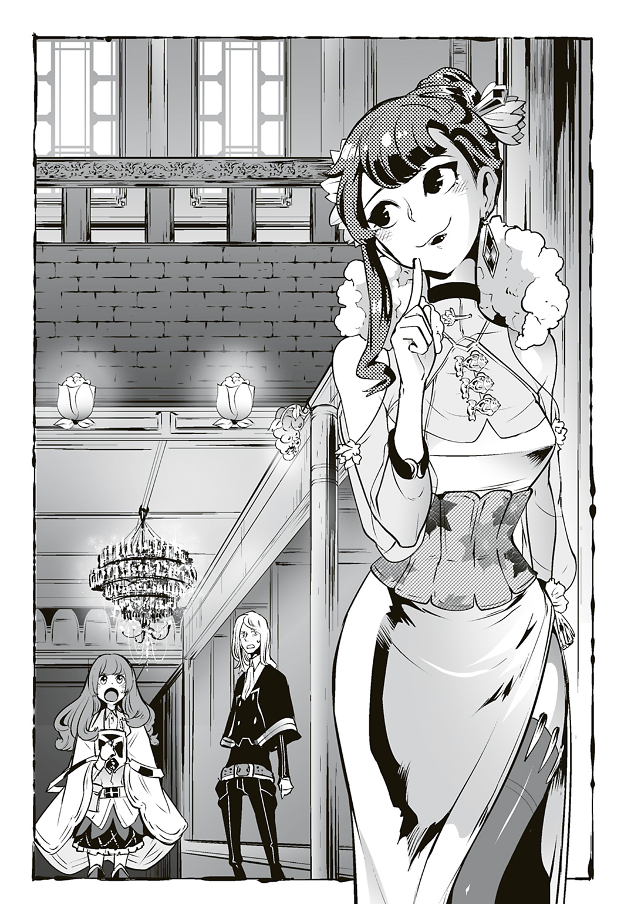
アンジーと呼ばれた女性は、音も立てずに階段を降りてきて、あっという間にミカヤの前に立っていた。香水のいい香りが漂ってきた。
「部下が失礼したわね、ミカヤさん。アリアンジェです。アンジーと呼んで」
「どうも。信さんからお話は伺っています。お話以上にお綺麗な方でしたが」
アリアンジェは宝石箱を開いたような容姿で、美しい顔に白い肌、東洋風の白いドレスもぴったりである。
「あいつの話は、話十分の一くらいに聞いておきなさいな。それで、どうしたの？」
「もちろん、〝精霊殺しの箱〟を......！ 裁判に絶対必要なんです」
「ミカヤちゃん、貴方の度胸も行動力も好きよ。けれど、無理なものは無理。貴方にも秘密にしておきたいことがあるでしょう？ ウチにもあるの。それだけ」
「もう大陸中の世論とマスコミは動いています......！ 魔道具ギルドといっても無傷では......」
「済まないでしょうね。そのちょっとした傷を受けてでも、やはり内密にしておこうと、そう取り決めたのよ。残念だけど、もう決定よ」
先ほどのダウニーの眼などより、数段上の威圧感だ。場を支配することに慣れた女のオーラ、サツキと同じ質のものだ。
ミカヤは最後の賭けに出ることにした。
懐から封筒を取り出した。その封筒には「昔お前と愛し合っていた男、信より」と書かれていた。
「あら？」
アリアンジェの黒い眼が輝いた。
「その......ウチの上司からです」
ミカヤはなんとかして、「封筒に書かれている文字は見ていません」という様子を取りつくろった。まったく、信さんたら......もう少し書きようってものがあるでしょう！
アリアンジェはくすりと笑い、封筒を受け取り中の手紙を取り出した。
アリアンジェはふんふんと頷きながら手紙を読んでいる。
「あの......アンジーさん」
「うん？」
「その......どうでしょうか？」
ミカヤも手紙の中身は読んでいない。信からは、「どうしようもなくなったらこれを渡せ」と言われているだけである。
アリアンジェは一読した後、封筒ごと手紙をゴミ箱に放り捨ててしまった。
「信に言っておいて。本当に伝えたいことがあるなら、自分で来いって」
ミカヤは肩を落とした。
どうやら、駄目だったようだ。
アリアンジェはミカヤを見てから、さっきのゴミ箱に視線を投げかけ、少し思案するような仕草をした。
「お嬢ちゃん......もう、魔道具ギルドでは決定しているんだけれどね。内部にはまだ何人か反対者がいるのよ」
ミカヤは顔を上げた。宝石のように微笑んでいるアリアンジェがそこにいた。
「なんせ、大陸中を巻き込んだ大事件。あのアイスフェルドが捕まったんですものね！ ひょっとすると、世論によるバッシングはこちらの想定以上のダメージがあるかもしれない。私もそう考えていた一人だったのよ。魔道具ギルドは確かに自分たちの利益だけを考える組織......だけど、その裏にはれっきとした反権力の信念があるから。少なくとも私はそう思っている」
ダウニーが驚いたようにアリアンジェを見ていた。
「姐さん、まさか......！」
「もう一度、上層部にかけ合ってみてもいいわ。現場の〝精霊殺しの箱〟を提出するように」
「本当ですか!?」
ミカヤはぱっと顔を明るくした。
「こんな小さな女の子が、あのアイスフェルドを弁護しようとしているんだもの。ただ見捨てるだけじゃ、女が下がるってものよね」
「ありがとうございます！ ありがとうございます！」
ミカヤは何度も頭を下げた。
「アンジー姐さん......」
ダウニーは呆れながらも、仕方ないかという風にかぶりを振った。
「ダウニー、こっから忙しいよ。頭が氷河みたいに凝り固まった幹部を第二公判までに説得するんだ。今日はもう、店じまいだ。王都に向かうよ」
「今から王都まで？ 沙漠と大河を二つ越えなきゃいけないんですよ？」
「ほら、早くしな」
「へえへえ。俺はどうせ、姐さんの子分ですよ」
ダウニーはそう言いながらもどこか嬉しそうであった。
「ありがとうございます！ 何か手伝えることがあれば......」
「何もないわ。それより、裁判の準備をしておきなさい」
アリアンジェはそう言い、受付の下から大きな旅行用鞄を取り出した。ダウニーもそれに倣い、自分の鞄に服や下着を詰め込んでいる。
「ありがとうございます！ ありがとうございます！」
これで、次の公判に向けて望みが出てきた。
アリアンジェとダウニーがてきぱきと旅支度をしていく。アリアンジェから、「もうわかったから、いい加減で帰りなさい。公判の準備があるんでしょ」と言われるまで、ミカヤはずっと「ありがとうございます！」と頭を下げ続けた。
〝竜の大いなるしっぽ〟には、五百人収容の刑務所がある。ミカヤは弁護士である旨を看守に告げ、その中に入った。ちなみにアイスフェルドがいるのは「拘置所」であり、まだ判決を下されていない容疑者はここに収容される。
ミカヤが来たのは、すでに有罪判決を受けた囚人を集める刑務所だ。
面会室には、呪力で強化されたガラス窓越しにやつれた男がいる。
「もう、ここには来ないでくれと、いつも言っているのに来てくれるんだな」
男はそう言った。まだ、歳の頃は四十代だが、髪は随分と白くなっている。くたびれた老人のような風貌だが、黒い瞳にはわずかな光がある。
「......当たり前じゃない」
「お前は優しい子に育ってくれた。だが、一つ忠告しておく......被告人にあまり肩入れするなよ」
「......信さんと同じことを言うのね」
「信か......ああ見えても腕利きだから、しっかり学べよ」
ミカヤはしかし、しっかりと首を横に振った。
「私は......父さんから学びたかった......！」
トマス・サリンジャーはとても寂しそうに笑い、その光景は何度見てもミカヤの心を傷つけた。トマス・サリンジャーとは大らかで常に強い男のはずだったからだ。
「どうした、ミカヤ。お前に私のことを考える余裕があるのか？」
「そうだね......」
「......ところで、サリーのブローチは見つかったか？」
「ブローチ？」
「......あいつには敵が多い。攻撃された時に白いブローチが敵に張り付くように仕掛けてあったんだよ」
「そっか......それはまだ検事も知らない情報だわ。ありがとう......父さん！」
ミカヤにとって、この人はいつでも一番頼れる法律家なのだ。
「ねえ......父さんも手伝ってくれれば......」
「おいおい」
「いつか......いつかここから出たら......！ 信さんと三人で事務所をやろうよ！ ね？」
ミカヤは精いっぱいの作り笑いを浮かべた。しかし、トマスの顔にあったのはただ、全てを失い、死を待つ男の表情だった。
「無理を承知で言うが、もう私のことは早く忘れてくれ。その方がいい......。あの日、何十人もの警官が私の家を取り囲んだあの日から、もう私の心は敵に立ち向かえなくなってしまったんだ。こんな男のことは、早く忘れた方がいい」
「父さん......！」
「近頃......お前と、路上手品師の手品を見ていた頃を思い出すんだよ。あの頃は、コーネリアスも元気だったね」
堪えきれなくなり、ミカヤは机に突っ伏し、嗚咽した。トマスは諦めたような笑みで、それを眺めていた。
第四章 第二公判
【精霊呪術法 第六十五条】
体内精霊が使えない時は、他のいかなる精霊も使うことはできない
１
〝呪われた五人衆～神官学校きっての天才集団の素顔とは？～〟
「今回は、殺されたサラサンテ氏とその仲間たちの素顔に迫りたい。
警視総監のジョレンテ、検事局長のウルヴァン、そして市長のマルフォイは神官学校時代の同窓生でした。ここまではご存知だろう。そして、今アイスフェルドの弁護をするミカヤ・サリンジャーの父、トマス・サリンジャー。彼はサラサンテの親友だったのです。上記の五人は、神官学校の五人衆と呼ばれ、常に注目の的だったという。
ご存知の通り、トマスは今獄中に。聖人と呼ばれた彼は、八年間を獄中で過ごしています。ミカヤは当然、父の潔白を信じているが、今のところ容疑をひっくり返す証拠もない。
弁護士ミカヤにとっては、父の親友だったサラサンテの恨みを晴らし、真犯人を見つけたいところ。しかし、なんとそのサラサンテに、闇の組織との繫がりがあったという噂が流れてしまったから、さあ大変。しかも、その噂の出どころの張本人が、被告人の暗殺者アイスフェルド。まだ、この先どうなるのか、真犯人が見つかるのか、あるいはあえなくアイスフェルドが釜茹でにされるのかはわかりません。しかし、これだけは言える。
この事件は、大陸史上最大の法廷劇であると！
ミスリル銀製の密室で起きた殺人事件......その真犯人は一体誰なのか？
事件を見守る街の人も、固唾を吞み込み過ぎて、終わった後みんなでげっぷしちゃうんじゃないかしら。
最後に一言。ミカヤ、頑張んなさい。いつも通り、正面からぶつかって、突破口を切り開きなさい。あんたにはそれしかできないんだから。
『レトリック』編集 メイ・ヴォーデン」
秋の二の月、二十二日。
ゲイルはこの日もきびきびと動き、アイスフェルドの残虐性を主張した。ゲイルの右手から透明で鋭い氷の刃が出てきた時には、傍聴席からも悲鳴が上がった。ゲイルは満足してそれを消し、「アイスフェルドはまず自分を透明にしたが、サラサンテはいち早く気づき〝精霊殺しの箱〟に逃げ込んだ」と主張した。
ミカヤは「足跡の痕跡はどうやって消したのか？」と異議を述べたが、「彼であれば空中浮遊程度は造作もない」とゲイルは結論づけた。
ミカヤは証言台にアイスフェルドを立たせ、近寄って腰に手を当てる。裁判が始まって長いが、アイスフェルドの黒髪も、ミカヤの赤い巻き髪も艶やかに輝いている。
「貴方にもう一度聞きましょう。テラミスの神に誓って、サラサンテ氏を殺していないと、そう言いきれるわね？」
アイスフェルドは両手を頭の後ろに組んで、余裕たっぷりに微笑んでみせた。
「そんなくだらねえ神なぞ知らんが、やってねえものはやってねえよ。今まで九十九人を殺したが、全て自分の意思でやってきたんだ。やってねえ殺しを俺のせいにされるのは、我慢がならねえな」
「......では、裁判官。ここで『噓好き精霊』を呼びたいと思います。白羊の偽りごとを汝に捧げよう。出でよ、噓好き精霊！」
ミカヤの呪詩の直後、とんがり帽子に小さな顔、緑色の服を着ておかしな形の人形を持った精霊が現れた。
「明日太陽が落っこちて海が全部塩になっちゃうよ。水の女王が干からびてお婆さんになっちゃうよ」
噓好き精霊は土の精霊の一種で、でたらめばかりを言っては人や動物を惑わせるのが好きな困った精霊である。さらに人間が噓をつくと「わあい、噓だ！」と大喜びするのも特徴である。
「これから、この噓好き精霊のもとで、アイスフェルドに尋問します」
「異議あり！」
叫んだのはゲイルだ。
「噓好き精霊は真偽がわかるとされていますが、だからといってこいつが言うことが本当か噓かはわかりません。噓好き精霊自体が噓をつくこともあるんだ。法廷が混乱するだけです」
しかし、サツキは首を横に振った。
「面白そうだわ。続けて頂戴」
噓好き精霊がふわふわと浮かんでアイスフェルドの周囲を踊る。黒衣の男は、おかしげに視線でそれを追っていた。
「アイスフェルド、これから私がする質問に、全て『いいえ』で答えて」
「いいえ。これでいいかい？」
暗殺者は片方の眉毛を上げてみせた。
「まず、あなたの名はアイスフェルドね？」
「いいえ」
アイスフェルドが答えると、
「噓だよ、噓だよ！ わあいわあい！」
噓好き精霊が嬉しげに両手を上げて踊った。
「暗殺者として、九十九人を殺してきましたね？」
「いいえ」
また噓好き精霊が大喜びする。
「沙漠で、グリフォンの襲撃から私を助けてくれたわね？」
「いいえ」
また精霊は大はしゃぎで、帽子を投げ、空中で回転させてからまたかぶり直す。
「では、最後に。あなたはサラサンテさんを殺した？」
「いいえ」
すると、噓好き精霊は急に静まり返り、つまらなさそうに横を向いた。
「つまんないよ。ほんとのことはつまんないよ。もう、僕帰るよ」
本当のことを聞いた噓好き精霊は、興味をなくしたようにそっぽを向いた。
「じゃあ姉ちゃん、また演奏会に連れて行ってね」
噓好き精霊はミカヤにそう言ってから、精霊界へと帰っていった。
「以上......私からの尋問を終わります」
ミカヤは弁護席に戻り、座った。
すぐさま、ゲイルは「噓好き精霊による真偽の判定など、なんの当てにもならない。そもそも弁護人が事前に打ち合わせをしておいたかもしれないじゃないか」と主張し、その言葉に傍聴人たちは納得したようだ。
しかし、ミカヤはゲイルを全く気にせず、鋭い視線をアイスフェルドに送っていた。
アイスフェルドは薄く笑ってこっちを見ている。その黒い瞳がなかなかやるじゃねえか、と言っているように映る。
ミカヤは、別にこれで裁判官の心証を良くしようとは思っていなかった。ミカヤの真の狙いは、この辺りでアイスフェルドと自分の関係をはっきりさせることにあった。
この事件は完全に冤罪だ。
今までは、ミカヤ自身さえ被告人に対して少なからず疑いの目を向けていたので、調査にも裁判にもどこか迷いがあった。しかし、これで決めることができた。アイスフェルドの冤罪を、本気で信じることを。
「お前さん、意外に高度な精霊を操れるんだな」
アイスフェルドはおかしそうにそう言った。
「呪術法律家になるには、精霊呪術を使えなければいけないと知った時、真っ先に覚えようと思ったのよ。今の法令では、噓好き精霊の証言は採用されない。何故なら、噓好き精霊自身が噓をつく可能性があるから。証言として適用される精霊の中には、入っていないの。けどね、呪術法律家はみんなとりあえずこの精霊を覚えるの。真偽判定の程度はともかく、噓をついているのがわかる精霊なんですからね」
ゲイルが、噓好き精霊がいかにいい加減かを力説する中で、ミカヤは小声で言い返した。
「で、俺のことは信じてくれたのかい？」
「......ええ、あなたは冤罪よ」
「ほう、噓好き精霊ほどアテにならん精霊もないと思っていたが」
「いいえ。あの子は昔から何度も呼び出していろんなことで試しているの。噓好き精霊の中でも、真偽判定には噓をつかない子なのよ」
「ほほう。そんな便利なのがいたら、さっきのを使うだけで犯人を割り出せそうだがな」
「それがあの子は大の音楽好きで......一回呼び出すのに、一流音楽団の演奏を聴かせてあげないと出てきてくれないの。昔は母さんがギターの名人だったからいつでも呼び出せたんだけど」
「なかなか難しいものだな」
「それに、噓好き精霊の件だけじゃない......今までにあった出来事を総合した上で論理的に考えて。これは、あなたが犯した事件としては不自然過ぎる。そして稚拙すぎる......！ 碌でもない暗殺者だけど、腕は一流ですものね。それなのに、目撃証言が多すぎる。今までは推定無罪を勝ち取るつもりでいたけど、これからは無罪判決を勝ち取るつもりでやるわ」
「そりゃ、結構」
アイスフェルドは満足げに頷いた。
ゲイルの演説が終わるのを見計らって、ミカヤはすかさず手を上げた。
「裁判長！ ここで、証拠品二を提出したいと思います。......持ってきてちょうだい！」
ミカヤは法廷の右で待ち構えている係員に向かって言った。係員は、法廷の外へ出て、それから十人の仲間と一緒に分厚いミスリル銀の箱を荷台に載せて運んできた。
ゲイルはせせら笑った。
「またそれか？ 被告人は〝精霊殺しの箱〟が斬れるということは、第一公判で証明したばかりじゃないかね。お次はどうするんだね？」
ミカヤは余裕を持って、中央に置かれた〝精霊殺しの箱〟の前まで歩いてきた。
「いいえ。これは第一公判の時と同じものではないわ。これはね......事件現場にあった〝精霊殺しの箱〟の実物よ！」
ゲイルの眼は見開かれていた。
「どうやって手に入れた!? 私も何度も魔道具ギルドに問い合わせたが......くそっ、あいつらめ......！ いつもいつも自分勝手なことばかり！」
「ええ、そうでしょうね。しかし、これはれっきとした実物です。北の氷河ように頭の固い魔道具ギルドですが、この事件は大陸全土から要人が傍聴に来ています。現場の実物を法廷に出さないわけにはもはやいかない......！」
魔道具ギルドは、大陸の魔道具の全てを取り仕切るとされる組織だが、一方で自分たちの利益しか考えないと悪名も高い。
「よく持ってこられたわね！ テラミス神官協会でも無理だったのに......あの忌々しい魔道具ギルドから！」
サツキは感心したように言った。魔道具ギルドや魔導師協会の力はしばしば国家権力すら上回ることがあるのだ。特に魔道具ギルドは、各国の王族や軍部に自らの魔道具や魔道兵器を提供しているため、しばしば「大陸の影の支配者」とまで噂されるほどなのだ。
「もう、世論も動いています。それに、私の上司の信さんは、魔道具ギルドの幹部の女性と懇意の仲でして......まあ、どういう意味で懇意なのかはここでは伏せますが」
傍聴席から咳払いが聞こえた。信は周囲を見回しながら咳払いを繰り返し、周りの傍聴人は笑っていた。
ミカヤは心の中で信に感謝していた。信は「他の案件があるので、今回は見物させてもらうぜ」と言っていたが、信にも、そしてアリアンジェにも大きな借りができてしまった。
この第二公判は絶対に有利に進めてみせる。
「魔道具ギルドからの保証書もあります。これは紛れもない、現場の実物です。さて、みなさん......もう、お気づきのようですね。そう、この〝精霊殺しの箱〟には、斬られた痕も焼かれた痕もつぶされた痕も一切ありません！ 新品同然です！」
ゲイルの額から汗が流れた。
「先の公判では、被告人がとんでもない呪力の炎の剣でこれを真っ二つにしてみせました！ しかし、現場にあった実物は？ 炎の剣どころか、バターナイフで切った痕すらない！ つまり、犯人は呪力以外の力を使った公算が大きいのです！ 容疑者は桁外れの呪力を持つアイスフェルドだけだという前提で、この裁判は進められてきました。しかし、他にも容疑者がいるのではないでしょうか？」
ミカヤは法廷を見回しながら、ゆっくりと言った。
「異議あり！」
ゲイルが手を上げた。
「呪力以外の力というが、それならば......毒を盛ったのかもしれんじゃないか！ 犯人はサラサンテ氏が箱に入る前に、毒を盛り......」
そこでゲイルははっと口をつぐんだ。
ミカヤはすかさず声を出した。
「おや。アイスフェルド以外の人間にも犯行が可能だとお認めになるんですね」
ゲイルは自らの失言を呪うかのように呻いた。
「違う！ 殺しのプロであるアイスフェルドであれば、尚更可能だということだ！」
「しかし、他の人間にも可能です。サラサンテ氏には、本当に敵が多いですからね。一方、今のところ、アイスフェルドにはこの殺人事件を起こす動機がない。私からは以上で終わりです」
ゲイルの苦渋の表情を尻目に、ミカヤは弁護席に戻った。
アイスフェルドは口笛を吹き、
「まあまあだな」と言う。
「よくやった、くらい言いなさいよ」
ミカヤはそう言いながらも、ばくばくと高鳴る胸を押さえながら、法廷を見回していた。
傍聴席の奥の方で、検事局長のウルヴァンが物凄い形相でゲイルを睨んでいるのが見えた。
面会室の空気は程よく冷たい。
ちょうど、ミカヤが対面する男の態度のようだ。
「......それで、一つ聞いてもいいかしら？ それとも、また質問ごっこをする？」
「今日は気分がいい。なんでも聞けよ」
「......アイスフェルド、あなたはいつでもここから逃げ出せると言った。......私も法律家の端くれとして認めたくはないけど、あなただったらこんな牢獄、お菓子の家のようなものなのかも。でも、結局あなたはこうして大人しく捕まっているわ。それは何故？」
アイスフェルドは首の横を二回搔いた。少し考え事をする時の、彼の癖のようだ。
「お前に興味があったからな」
ミカヤは心の中で、そんな台詞くらいで浮かれたりはしないぞ、とつぶやいた。アイスフェルドは皮肉屋のように笑みを見せ、悠然とした面持ちでいる。
「お前さん、『正義』だの『救う』だのと、よくも恥ずかしげもなく堂々と言えるもんだと思ってな。そんな赤毛の阿呆が、果たして『正義』とやらを守れるのか、それとも結局はべそかいて地べたに這いつくばって終わるのか、見届けてやろうと思ったのさ。理由はそんなところかな」
「......お褒めいただき、光栄の至りよ。あなたから、恥ずかしいだの阿呆だのと言われるのは、むしろ褒め言葉ね。私が歩いている道が、間違っていないって確信できるから。......そうだわ、あなたのやりたいことって何よ？ あの時そう言ったよね」
「別に大したこっちゃねえ。俺にちょっかいかけてくるジジイの鼻を明かしてやろうと思ってな。まあ、今のところはできそうもねえが、いつかはな」
「......よっぽどの大物なのね、そのお爺さん。あなたが、そう言うほどなんだから」
「ああ。まあな」
「私、やりたいこといっぱいある。父さんみたいに立派な弁護士になりたい。母さんみたいに優しい人になりたい。世の中の困っている人をみんな、救ってあげたい」
「初めの二つはともかく、最後のは無理だろ。いくらお前でもよ」
「そんなことない！ 全力でぶつかっていけば、道はきっと開けるの。あなたもそんな風に思ったことない？ あなたも殺し屋とはいえ、その道の一流なんでしょう？」
アイスフェルドは少し考えるような素振りを見せ、
「実はお前の言っていること、あながちわからなくもねえんだよな。確かに全力でやらねえよりはやった方が、いい結果が出る。だが......」
「でしょ？ やっぱり！」
「俺はお前さんほど真正面からは行かねえよ。お前のなんでも頭から突っ込んでいくとこは、ほんとシャロンみてえな......」
アイスフェルドはそこまで言って、あ、余計なことを口に出したというように口籠もった。
ここぞとばかり、目を光らせたのはミカヤだ。
「シャロン......？ 女性の名前よね？ ひょっとして、あなたにイヤリングをくれた人？」
「ああ、うるせえな。もういいから、どっか行けよ」
その途端、アイスフェルドは年頃の女にからかわれた少年そのもののように、そっぽを向いてしまった。
「ねえねえ、答えてよ。今日はなんでも答えるって言ったはずよね？ 片方だけってことは、もう片方はシャロンさんがつけているとか？ まあ、なんてステキな」
ミカヤはわざとらしい口調になり、アイスフェルドはますます拗ねてしまった。
「......ったく、女ってえのは。人が檻の中なのに、食いつくのはそんな話ばかりだ」
「いいじゃない。私、なんだか嬉しいのよ。あなたにも、この世界のどこかに大切に思っている人がいるってことが。私、まだ恋人ができたことないし、羨ましいわね」
「......恋人じゃねえって。あらあ、そんなんじゃねえ。昔、家族みてえなのがいてだな。お前みたいになんでも正面から取り組む馬鹿だったよ。それだけだ。口うるさいのも、お前に似ているな」
「ふうん、暗殺者にも恋の花は咲くのね。ああ、羨まし」
「こいつ......人の話をてんで聞いていねえ。弁護士が聞いて呆れるぜ」
アイスフェルドは閉口したように唸った。ミカヤは内心、しめしめと思っていた。どうもこのアイスフェルドという男、イヤリングをくれたシャロンという娘の話になった時だけは、普通の十八歳の少年になってしまうらしい。
「で、そのシャロンさんとはどうなったの？ あなたも男なんだったら、自分から行動に移さないと......」
すると、アイスフェルドは冷酷な視線でミカヤを貫いた。
「死んだよ」
「え？」
ミカヤの開かれた唇が、凍りついた。
「俺が、死なせた」
アイスフェルドの言葉が、面会室の狭い部屋の中に重く響いた。
「アイスフェルド......あなた」
「もう、よそうや。昔の話は。それより本題だ。言っておくが、お前には失望しているんだぜ」
「私に？」
「ああ。なんせ、これだけ時間があって、まだホシを見つけられないんだからな。こっちは、とうに目星もついているのに」
ミカヤは、まさかまた自分を騙すつもりかと身構えたが、しかし今そんな噓をついても一文の得にもならないということに気がついた。
「今の言葉......本当なの？」
「あくまで、『目星』だ。今までの法廷内での会話から、そして何よりこの俺の目によって。俺はな、殺しをやったことがある奴とない奴は、そいつの目を見ればすぐわかるんだ。殺したことのある奴は、大抵が薄暗い闇を背後に抱えているもんよ」
「説得力がある。誰よりも人を殺してきた、あなたの台詞だから」
「聞きてえか？ そいつの名を」
ミカヤは迷いなく首を横に振った。
「聞きたくない......これは、私の初めのヤマなの。ひょっとしたら、あなたが犯人の名を知っているというのは、事実なのかもしれない。けれど、真犯人を見つけ出すのも、あなたを救うのも、全部私がやらなきゃ意味がない......！ なので、遠慮する」
アイスフェルドは満足げに頷いている。
「まあ、お前さんならそう言うだろうな。もうしばらくここにいてやるが......早くした方がいいぜ。流石に、有罪判決を受けるまでは待っていられねえよ」
「......」
「とはいえ、退屈してきたな。そうだな......これから独り言をつぶやこうかな。なんせ独房は退屈だし」
ミカヤとしては癪だが、この男の助言は事実アテになるのだ。
「あの箱......よくあれで大金取れるな。欠陥だらけじゃねえか」
「な......？」
「通気口が空いているから毒の霧を流すこともできる」
「毒の霧？ それは土と風の精霊の複合呪術なんじゃ......」
「通気口の穴だけを通す細い風にすりゃいいだけだ。ミスリル銀はあくまで精霊を遠ざける効果があるだけ。穴より細い毒の風だったらどうだ？ 十式以上の風の使い手なら、わけはねえぜ」
啞然。そんなこと、まるで考えつかなかった。検察側も思いついていないことが幸いだ。そんな仮説でアイスフェルドを攻め立てられれば一巻の終わりだ。
「それに防護できない精霊もあるようだな」
「なんですって......？」
「聞いた話じゃ、あれはミスリル銀を少しまぜた合金。この......」
アイスは左腕を掲げた。
「この手錠は純度100のミスリル銀だ。流石にこれじゃ、俺でも呪術は使えねえよ。ただまあ、この窓をぶん殴って壊すくらいはできるんだけどな......」
ミカヤはのけぞっていた。
「まさか、やらねえよ。そんなつまらんこと......お前が面白いから付き合ってやっているんじゃねえか。ともかく、あの〝精霊殺しの箱〟ってのは、通しちまう精霊があると俺は見ているぜ」
ミカヤは、魔道具ギルドが箱を回収しているという話を思い出していた。
「ちなみに、さっきの仮説だが、サリーは吐血していたか？」
「ええ......ただ、それは舌からだったの。それも凄く少量で。倒れた時に舌を嚙んだらしくて」
「じゃ、毒の霧は違うな。毒なら肺が破れて大量に血を吐き出す。だが、あんなチンケな箱、プロならどうとでもなるぜ」
こいつは、やっぱり根本のところは私とは違うんだ。いついかなる時でも、どうすれば敵を殺せるかを考えているんだ。
「サリーのおっさんは、学術の専門で戦闘の方は苦手だったからよ。あんなものの中に入っちまったんだな」
「なんだか、改めて怖くなってきた......。あなた、その手錠は本当に効いているの？」
「んあ？ そりゃ、こんなに手をがっちり固められりゃ、何もできねえよ。ミスリル銀の効力はホンモノだ。とはいえ、お前ら法律家が大勢集まって、あの箱をパワーで潰すことを考える様子は笑えたぜ。俺なら呪力でも潰せるが、もっと別のやり方がいくらでもある」
「改めて、出会い方が違えば感心していたわね......この独房の中でよくもまあ、そこまで」
「よし、独り言終わり。随分と助言しちまったな。これで解けなきゃ、ほんとのバカだぜ？」
「......」
「もう一度言っておくぞ。こんなとこ、いつでも出られるし、ホシもいつでも殺せる。お前がその『正義』ってやつを守れるのかどうか、しばらく見ておいてやろうと思ってこんなつまらん法廷ごっこに付き合ってやっているんだ。そこを忘れるな」
２
今日は夕立があると、気象予報士が街頭で演説している。この大陸の気象予報士は、赤い服を着て街角に立って、大声で「今日は夕立がきます」などと言う。おかげでミカヤは傘を準備していた。
霧雨が夕焼けを滲ませる中、ミカヤは傘を左手で差しながら〝左へ細長い街〟の片隅、サボリマサボテンが萎れて雫を垂らしている横で、通りゆく人などから聞き込みをしていた。
なるべく、声が暗くならないように気をつけた。さっきのアイスフェルドが話したシャロンという娘のことが頭からまだ離れないのだ。死なせた、と彼はそう言った。そのことをずっと後悔し続けているのだろう。どういういきさつで、そのシャロンが死んだのかは、彼が話すまでは聞かないでおこうとそう決めた。聞けば答えてくれるようにも思えるのだが、私自身が今は聞きたくない。
ミカヤは、道端で煙草を吹かしている果物屋に話しかけた。
「すいません、事件のことでお伺いしたいことが。サラサンテさんの事件を担当する者です」
「おう、あんた子供なのに頑張っているじゃねえか」
果物屋はにやりと笑った。
「ありがとうございます。事件のあった日の午後三時頃、この付近で怪しい男を見かけませんでしたか？」
「おう、なんか黒い格好をした背の高いのが旦那の屋敷前でうろついていてよ。みんなで、なんだありゃって言っていたところだ」
「なるほど。では、そいつがその後どっちへ行ったかは？」
「いやあ、それがさ。沙漠ででかい抗争があったろう？ そんで、その後は軍人がうろついていたんで家に入っていたんだ」
ミカヤは果物屋にお礼を言って、その後も聞き込みを続けた。
セトがこちらに向かって歩きながら、「やはり、アイスフェルドらしい人影を見たという証言ばかりだな」と言う。
ミカヤは肩と頭の間に、傘を挟みながら聞き込んだことを手帳に書き始めた。
「ええ、でもこうしてアイスフェルドが冤罪だと思いながら聞き込みをしていると、やはり証言には不審な点があるわ」
「と、いうと？」
「彼がつけているイヤリングを誰も見ていない。あの長身で、片方の耳にだけイヤリングをつけているなんて、かなり目立つはずなのに......。やっぱり、誰かがアイスフェルドに罪をなすりつけようとしたと考えるべきだと思うの」
「......ああ、なるほどなあ......。ミカヤはやっぱり頭の出来が違うよ。いや、俺も訓練学校時代に捜査のいろはを教わったけれど、そんな発想出てこないものな」
「セトが一緒にいてくれるおかげよ。さあ、もう一回聞き込みをして......」
ミカヤの白い法衣の裾が、わずかに引っ張られ、ミカヤは視線を落とした。
短い金色の髪を、上の方に伸ばしている男の子がいた。歳の頃は十くらいでぺろぺろと安いキャンディーを舐めているが、その瞳はかすかな知性の光を感じさせる。
「姉ちゃん、聞き込みかい」
「ええ......ボクはどうしたの？」
「なんだよ、『ボク』とか子供扱いすんなよ。これでも一人で生きているし、元は貴族なんだ」
この大陸では、金髪は貴族の証とされている。誰が決めたのか知らないが、ともかく貴族の人間はだいたい金髪だという。
しかし金髪であるメイの雰囲気は貴族とは程遠いので、ミカヤは全く信じていない。
「ええ......失礼したわね。私はミカヤ、あなたは？」
「おいらは、ウルハイス。没落貴族の一人息子で、今は残飯漁るのが仕事」
ミカヤは言葉を失っていた。本来、私はこういう子供を救うために弁護士になったはずではなかったのか。
「あ、姉ちゃんなんか気にした？ いいんだよ、前の暮らしより今の方がいいんだ」
と、少年はあっけらかんとしている。
「姉ちゃん、サリーのおっさんのこと聞いているんだろ？」
「そうよ。ねえ、サラサンテさんはどんな人だった？」
「いい奴だったね。金持ちの偽善者の中では特にいい奴だった。おいら、普通の偽善者は嫌いだよ。おいらのナリを見て、『まあ、可哀相にねえ』とか言いながら、歩き去って行くババアは嫌いさ。でも、サラサンテのおっさんは好きだったよ。だって、あのおっさん『本物の偽善者』なんだもん」
「......どういうこと？ 偽善者は嫌いなんじゃないの？」
「いいや、あの人は例えばさ、おいらを見て、『ほら、ボウズ。日曜学校くらいはちゃんと行って文字を覚えろよ。文字を覚えれば、いつかちゃんとした仕事に就けるぞ』って言うんで、おいら『おいらに職なんざあるわけねえ』って。そしたら、『残飯拾いだけじゃなく、せめて金持ちからスリが出来るくらいにはなれ。盗賊ギルドに入れりゃ、偽の身分証が貰えるから、人生をやり直せるぞ。男だからその方が格好いいじゃないか。ただし、麻薬や殺しに手を出したら、その時、容赦はせんぞ』って。な、あのおっさんはちゃんとわかっていたよ。糞ババアの偽善者じゃねえ......本物の偽善者だったんだ。......姉ちゃんからもなんだかおっさんに近いものを感じるよ」
「......」
「なあ、きっとおっさんのカタキを討ってくれよな」
私はにこりと微笑んで、
「......ええ。きっとね」
「で、それよりさ。〝左へ細長い街〟で変なヤツ見かけなかったかって聞いているんだろ？」
「ええ、何か知っているの？」
「ま、元々変な奴がよく来るよ、この町には。腹を空かせたグリフォンとか、迷子になった土の精霊の子供とか......でも、最近妙な連中を見かけた。やけに御大層な馬車に乗って、従士を何人も従えて、偉そうにやってきたんだ。警察関係者らしいけど、この町に何の用事だったのか」
ミカヤはセトと顔を見合わせた。
「あの連中、槍や剣を持って偉そうにしやがって、俺は何かひったくってやろうかと隙を窺っていたんだが、手が出せなかった」
「それは、いつごろの話？」
「サラサンテのおっさんが殺される少し前だ。警察とか検事の中でも上の方の連中さ。おいらが一番嫌いな連中だよ。姉ちゃんは、あんな風になるなよな」
「......もちろんよ」
ウルハイス少年に約束した。ウルハイスが走り去っていくのを、そのまま見送った。
最初に、弁護士になろうと思った理由を思い出していた。
私はちょっとした出来心で罪を犯し、世間の目にさらされた子供を守ろうとしていた父に憧れて、それで法の勉強を始めたのだ。話に聞くサラサンテは父のかつての姿と重なるようだ。
「本当に、聞けば聞くほどサラサンテさんは男の鑑であるな。そんな人をやった真犯人、必ず捕まえよう」
「ええ......。今の子供の証言は、とんでもなく有力なものよ......。私は、今までとんでもないことを見逃していたのかもしれない......！」
セトは目を見開いて、ミカヤを見ていた。
「真犯人がわかったのかい!?」
ミカヤは黒い瞳に焰の王も顔負けの荘厳な炎を灯し、親指と人差し指の付け根を顎に当てた。
「......私の考えが正しければね」
「ミカヤ......」
「これは、〝竜の大きなしっぽ〟にとって、未曾有の大事件になるわよ。セト......私を信じて最後まで、ついてきてくれる？」
セトは浅黒い肌に白い歯を見せた。
「ミカヤにあの時から、グリフォンの火炎から守ってくれた時から......俺は君についていくと誓った。俺にとっての神、ヤムスに」
「ありがとう......さあ、明日からさらに忙しくなるよ。第三公判はゲイルも勝負をかけてくるだろうし、私たちで正義を実現しましょう。法律家の中にも、世の中に正義なんてないって言う人、結構いる。でも、私には通じないからね」
エミーは怒りの形相で、記者を追い払おうとしていた。
脂ぎった面の中年が、下卑た笑みを浮かべてエミーの家の玄関前に立っている。
「へへえっへへへ、そんな怒らないでくださいよ。あんたの父親について、ちょっと聞いているだけじゃねえかい」
「だから、何度も答えているじゃないですか！ 父が悪事に手を染めたことなんか、一度もないって！ それと、あの記事を書いているのは貴方ね!? よくもあんなこと......」
「なんですかい。あっしはただ法廷での記録を元に書いているだけですぜ」
エミーが追い払おうとしても記者は帰ろうとせず、ひたすら下卑た笑い声を上げるだけだった。
「報道の自由ってもんがありまさあな。こいつを侵害するのは、立派な法律違反になりますぜ」
記者がエミーの肩に馴れ馴れしく手を置こうとした瞬間、その腕を大きな浅黒い手が握り、ねじ曲げた。いつの間にか記者の背後にいたのは、セトとミカヤだ。
「他人の中傷をするのも立派な法律違反よ。何より、被害者の遺族の家に押しかけるなんて、人間のクズねあなた」
「くああ！ お、折れる！」
涙を浮かべて叫ぶ記者の横で、ミカヤは冷酷な声を出した。
「今度、この家の付近で見かけたら三年はぶち込むからね、覚悟してちょうだい。このクソ記者。セト、もういいわよ」
セトが男の腕を放す。男はふうふうと自分の腕に息を吹きかけた。
「......お前、アイスフェルドの弁護士か」
「ええ」
そこで記者は罵りの言葉を浴びせようとしたが、それを止め、すぐにもっと相手を傷つける手段を思いついた。
「お前、脱税弁護士の娘じゃねえか。ええ、そうだろ？」
ミカヤは殺気の籠もった目で、相手を睨みつけた。
「偉そうになりやがってよ、あん時はぴいぴい泣いていたくせになあ」
ミカヤは、やっぱりセトに腕を折ってもらえば良かったと思いながら、胸の中のざわめきを鎮めようとした。
「今にまた、あの脱税弁護士のことも書いてやるからな。覚えていろ」
記者の捨て台詞の後半は、非個性的であったが、前半部分はミカヤの心を大きく傷つけた。
「ミカヤさん、セトさん......ありがとうございます。あいつ、本当にしつこくて」
「いいんです。ああいう奴らももっと取り締まるべきなんですけどね」
「今日はどうしました？」
「......ちょっと、中でお話ししていいですか？ 重要なことを聞きたいので」
エミーは二人を家の中に招き入れ、カヴァ茶を出した。
「サラサンテさんは最近、未成年犯罪者の更生に関する新法案を作ろうとしていましたよね？ かなり大がかりなもので反対する人も多かったけれど」
「ええ、父はいつも子供が犯罪に走るのは自分たち大人が悪いんだと言っていました。そして、未成年が犯した犯罪の刑罰の見直しと、それから更生プログラムをもっと発展させると。罪を犯した人に、子供用の玩具を作る仕事についてもらうとか、そういうことです。それと冤罪被害者を救う会を作ろうとか、そういったことも。確か『潔白の会』という名前だったかな、そういう団体を作ろうとしていたの」
「すると、当然反対する人もいたと思うんですが」
「ええ......なんで犯罪者なんかにそこまでするんだって言う人はいます。特に警視総監のジョレンテさんや、検事局長のウルヴァンさんはよく父と議論になっていました。仲がいいからでしょうけど......父とジョレンテさんとウルヴァンさんは、学生時代からの友人なんですよ」
「なるほど。ちなみに、そのジョレンテさんやウルヴァンさんはここに来たことはあります？」
「......そうですね。あ、そういえばウルヴァンさんは一度、部下の方を連れてやってきて......大きな馬車に乗ってやってきたのでびっくりしたの。その時、私は父に、『大事な話があるから、ちょっと外してくれ』と言われて書斎で待っていたの。やっぱり、父の出そうとしている法案について話し合っているようでしたけど、なんだか怖い雰囲気でした」
「......ウルヴァン・ゴレスギーといえば、検事局随一の大物です。よほど重要な話でしょうね」
「ええ、けどどんな話だったのかまでは......」
「エミーさん、ここは重要なところなので、是非とも思い出してほしいの」
「ええ......？ まさか、ウルヴァンさんが......？」
エミーは目を大きく見開いていた。
「可能性がある限り、全員を調べたいのよ。お願い......！」
ミカヤは語気を強めていた。エミーは考え込むようにうつむいた。
「あ......そうだ。もし、それが重要なことだったのなら......」
「何かわかりましたか？」
ミカヤは勢い込んで尋ねた。
「いえ、私にはわからないんですが......父は、大事なことを便箋に書いて、それを家や大学の部屋の本に挟んでしまう癖があるんです。しょっちゅう、私にも聞いてくるんですよ。おい、エミー。あの時書いた便箋、どこに挟んだ？ って」
エミーは思い出しながらおかしそうに語る。
「なるほど......では、書斎を調べさせてもらってもいいでしょうか？」
「ええ、どうぞ」
夕日が完全に沈み、火の精霊を封じ込めた街灯の光が夜景を照らすようになってから、ミカヤとセトはエミーの家を出た。
ウルヴァンはたっぷり生やした顎髭を右手でつまみながら、朝の雑踏を歩いていた。すでに勝負のついた裁判を見物に行くわけだが、見世物としては面白い。特に石頭のゲイルがあの娘にやっつけられるところなどは見ごたえがある。まあ、もう終わりの見えている裁判ではあるが。
「失礼、ウルヴァンさん。これから裁判ですか？」
またぞろ、記者の相手をするのかと思いながら若い女の声の方を振り返った。違った。そこにいたのは、
「ミカヤか！ こんな時間になんだね？」
「ウルヴァンさん、裁判前にちょっと話したいと思いまして」
「おいおい、さん付けなんていいよ。わしとお前との仲じゃないか。トマスの件以来、敵みたいになってしまったが、わしはお前が聖王女ごっこで遊んでいる頃から知っているんだよ」
聖王女とは〝赤き焰の帝国〟の王の第一夫人のことで、女の子はみなその真似をして遊ぶのだ。
ウルヴァンは人好きのしそうな笑みを浮かべたが、ミカヤは真冬の沙漠の岩の如き冷たい表情を崩さなかった。
「サラサンテさんの事件は残念でしたね、ウルヴァンさんやジョレンテさんとは旧知の仲だったと聞きます」
「ああ、あいつとはよく口論もしたけど、今ではいい思い出だよ」
「サラサンテさんは、人権運動家です。犯罪者の更生の他にも冤罪被害者の救済も手がけていますよね。すると、ウルヴァンさんとは仕事柄、仲も悪くなることもあるでしょう」
「ああ、そのことか......そりゃ、たまに冤罪は起きるよ。我々にとっちゃ汚点だけれど......でもしょうがない。検事はな、容疑者をクロだって決めつけてかかるのが仕事なんだ。多少の過ちはあるものだ」
「私の父の件はどうだったのでしょう。過ちだったのでしょうか？」
「......答えるのは止めておく。あの事件は、もう済んだことだ」
「では、最後に質問させてください。サラサンテ事件の犯行当時、どこにいましたか？」
「......なんだと!?」
そこで、ウルヴァンは怒りの表情を見せた。
「答えられないですか？ でも、答えなくても結構です。実はすでに確認しています。その時は外出すると奥さんに言って、出かけているそうです」
ウルヴァンはそこで気がついた。この娘は、よりによってわしのアリバイを調べているのだ。
「......失敬させてもらう。もう、お前と話したくない......！ 裁判の楽しみが増えたよ！ お前がゲイルにこてんぱんにやられる姿を見る楽しみがな」
「ええ、こちらも用は済みました。では、これからジョレンテさんの家に向かいますので失礼します。お忙しい中、ありがとうございました」
ミカヤが去って行くのをウルヴァンは険しい顔で見送り、それから肩を怒らせながらずんずんと歩いて行った。
ミカヤは、今さっきジョレンテの名前を出した瞬間に、ウルヴァンの顔が強張ったことを確認してから、警察署へと向かった。
「君から来てくれるとは嬉しいね。しかし、昔話をしに来たんじゃなさそうだな」
ジョレンテは持ち前の「エルム族殺し」の笑顔を見せて高級そうな机に肘をついている。ジョレンテの微笑なら、美貌で知られるエルム族の女でも落とせるだろうというところから、そう名づけられたのだ。
「単刀直入に聞きます。秋の二の月、十二日どこで何をしていました？」
「ジョークのつもりかね？ ユーモアは好きだが、ジョークは嫌いなんだよ」
「気が合いそうですね、私もそうですから。実はすでに調べていて、ジョレンテさんはその時間は、五番街で防犯キャンペーンの演説をしていたと職員から聞きました」
「早速、問題は解決だな。アリバイはあったわけだ」
「ですが、この署内の職員は全てあなたの部下です。口裏を合わせることはできるでしょう」
「......さっきから、冗談で言っているんじゃなさそうだな。だとすれば、君を買いかぶっていたようだ。今日の午後にも第三公判が始まるのに、こんな所で油を売っているんだからな」
「油屋も油を売るのも好きじゃありません。で、質問を続けますが、ジョレンテさんはサラサンテさんの冤罪被害者救済のために作った『潔白の会』に強く反対していたそうですね？ 口論になることもあったとか。それは何故です？」
「私が冤罪の温床だと思うのは勝手だがね。元々、サリーの案にはシステム上の欠陥があったんだ。今やると、警察組織がパンクしてしまいかねないという懸念があったからこそだよ」
「冤罪被害者よりも、システムの方が大事だと？」
ジョレンテは面倒になってきたので、相手を痛めつけるのに最適な台詞を使うことにした。
「勘違いしているようだが、トマスの件は全く別だよ。あれの罪は、最高裁で確定しているんだからね。私も、親友である君の父君のことは、今でもショックだがね......」
これでいい。こう言うと、この娘は決まって半べそをかき始めるのだ。しかし、ミカヤは氷壁の如き視線で睨み返してきただけだった。
「私は今、サラサンテさんの話をしているんです。勘違いしているのは、そちらです」
「......」
「まあ今はいいでしょう。他に調べたいこともあるで、私はこれで失礼します」
ミカヤは部屋を出て行った。
ジョレンテは、とんとんと指で机を叩き、少し苛立ったような視線を扉に向けた。
「じゃあその日、ジョレンテはここで演説をしていたと？」
五番街の街角。ミカヤは武器職人からの聞き込みをし、いきなりアテが外れてしまった。
「あの人は目立つし、よく覚えているぜ。犯罪がどうたらかんたらって言っていたな」
これで、難なくアリバイが成立してしまった。サラサンテの冤罪者救済の「潔白の会」に反対していたジョレンテによる犯行だという仮説を立てたのだが、呆気なく崩れ去った。
「ミカヤ......やっぱり『潔白の会』に反対しているからという動機には無理があるように思う。いくらなんでも、それだけでは人を殺すまでには至らないだろうから」セトはそう言う。
「......そうね。まず、もう一度被害者の状況を整理しましょう」
ミカヤはノートにさらさらと左手でペンを走らせた。
サラサンテはジョレンテ、ウルヴァンとそして信とも、かつての学友であり、私の父もそうであった。サラサンテは人格者として名を知られており、冤罪被害者救済プロジェクト、「潔白の会」を立ち上げていた。私の父もこのプロジェクトに共感していた。遺体から出血等の痕は見られない。
そして、動機のある人間は、
ジョレンテ 警視総監 ウルヴァン 検事局長
マルフォイ 市長 その他、刑事警察関連者。
セトはそのノートを背後から眺めている。
「待ってくれ、市長まで？」
「ええ」
「マルフォイさんは、どうして？」
「市長のマルフォイは犯罪厳罰主義よ。サラサンテ氏の主張とは食い違う面もあるでしょう」
「そうか......」
「もっとも、マルフォイさんはそんな人じゃないでしょうけど、容疑者は全員調べないと」
ミカヤはマルフォイの誠実そうな顔立ちを思い出していた。現市長のマルフォイは清廉潔白で知られる人物だ。
「思ったんだが、いや、あくまでも勘だけれど」
「ええ、なんでも言って頂戴。正直、袋小路に首まで突っ込んでいるから」
「被害者が人権運動に関わっていたので、それ絡みと考えるのが自然だとは思うんだが、意外にもっと単純な私怨とかかもしれない。金銭とか恋愛絡みとか......なんとなく、ふとそう思ったんだ。というのも、殺人の理由は大抵そうだからね」
その台詞をよく嚙みしめ、極めてもっともな意見だとミカヤは思った。
市長のマルフォイは、妻が聖獣に餌を与えるところを見ていた。コザック、と名付けられた聖獣は小さな白い猫のような姿で、うーんと背伸びをすると前足から光の輪っかが出てくる。聖獣はよくわからない特徴を持っており、あるものはゲップをすると体が赤くなったり、飛び上がると髭が伸びたりするが、今のところどういう意味があるのかは誰にもわかっていない。
午後の会議の準備をし、紅茶を飲んでからミカヤのことを考えた。
ぴいぴいと泣くだけだったあの少女が、ゲイルと渡り合っている。
今度二人で会うことがあれば、「立派になったな」と声をかけてやることにしよう。あの時、何もしてやれなかった自分に今できるのはそれくらいだ。
「市長、入りますよ」
そのミカヤが、これ以上ないタイミングで入ってきた。リスのしっぽのような巻き髪、エルム族と見まがうほど整った目鼻、赤い唇。
「ミカヤ、立派になったね」
「どうも。それで聞きたいことがあるんですが」
随分と素っ気ない対応だ。
「なんでも聞いてくれ」
「事件当日、どこにいましたか？」
「この部屋にずっといたよ。アリバイは......そうだな、清掃婦にでも聞いてくれ。いつもこの部屋の前の廊下やトイレを掃除してくれているんだ」
「わかりました」
「わしにまで嫌疑をかけるのかね？ まあ、それが弁護士の仕事だからな」
「ええ、動機がありますからね。あなたには」
マルフォイの頰が引きつった。それは怒りのためだろう。
「例の〝精霊殺しの箱〟、市長であるあなたが導入したそうですね」
「貴族たちの安全を守ることは、私の責務だよ」
「魔道具ギルドからは、報酬が出たでしょうね。おっと、市長への献金は法律違反でしたっけ？」
「そんなものに執着するわしだと思うか？」
「人間、ちょっとした欲望にかられて大きな罪を犯す。法律学校で初めに習いました。あの〝精霊殺しの箱〟......どうやら、大きな欠陥があったようですね。大慌てで回収しているようですが、とんでもない損害なんじゃないですか？ 次の選挙に響かなければいいですね」
「もう結構！ たくさんだ」
「すいません。怒らせるのも私の仕事の内なので」
「あの箱が、どうして動機になる？ 欠陥があったにせよ、黙っていた方がわしにとっても得じゃないか。なんでサリーを殺さにゃならんのだ？ ええ？」
ミカヤは目を光らせた。
「おや、あの箱に欠陥があることは認めるんですね？」
「......帰りたまえ」
ミカヤはお辞儀をし、背中を向けて歩いたが、不意に立ち止まった。
「マルフォイさん......あの時、私に優しい言葉をかけてくれたのは、母と信さん以外ではあなただけでした......」
マルフォイは黙りこくった。
「そのことだけは、今でも感謝しています。そのことだけは......失礼します」
マルフォイは机の引き出しから、ピンセットを取り出した。鏡を見ると、ずいぶんと老けた顔が映っている。前髪の一際太くて白い奴を思い切り引っ張った。
３
第三公判は散々であった。この公判でゲイルは賭けに出た。二年前、アイスフェルドがやったとされる〝粗鉄の国〟の宰相暗殺事件。
その事件の犯人を、サラサンテが糾弾している記事を読み上げたのだ。
「ふむふむ......これは見事な批判だよ。どれどれ。『この暗殺者のことを、私は知らないわけではない。むしろ、よく知っていると言ってもいい。才能に溢れたいい若者である』......」
ゲイルは古ぼけた大陸新聞の記事を読み上げていた。
「しかし、こう綴られている。『だが、こうした事件の犯人を英雄であるかのように祀り上げるべきではない。この暗殺者が、自らのことを英雄だと思い込み、自身の力に己惚れてしまわないことを強く願うものだ。これはれっきとした、一国の要人の殺人事件である......！』」
ゲイルは証言台のアイスフェルドの前に、新聞をかざした。
「非戦派であるサラサンテ氏らしい名文だ！ 君はこの記事を読んだかね？」
「ああ、読んだね」
「君の知人であるサラサンテ氏が、こうはっきりと書いているのを見てどう思ったんだ？ ......さぞ、恨みに思っただろうね。なんせ、友人に仕事を否定されたんだから」
「そんなことで恨むほど、俺は落ちぶれちゃいねえよ。所詮は他人じゃねえか」
アイスフェルドはおかしそうに笑ったが、ゲイルは取り合わず、傍聴席に向き直った。
「みなさん、アイスフェルドがサラサンテ氏を殺した理由はこれだったのです。一見すると、奴は敵国の宰相を殺した英雄だが、やったことはれっきとした殺人！ さらに、そのことを批判されたアイスフェルドは、逆恨みで、復讐のためにサラサンテ氏を殺したのです！ アイスフェルドは暗殺という仕事に誇りを持っておりますが、まったく歪みきった誇りです......。そこを突かれた奴は、いつか被害者を殺してやろうとずっと思っていたのでしょう。以上です」
傍聴人たちは今の説明に納得した様子だ。
「弁護側は何かありますか？」
サツキにそう聞かれたが、ミカヤには何も思い浮かばなかった。
「......それだけで人を一人殺すには、動機としては弱いように思います。それに、アイスフェルドがそんな些細なことを恨む性格には、とても見えない......」
「君、さっきから『思う』、だとか『見えない』だとか、それで弁護しているつもりなのかね？ ちゃんと論拠を言いたまえ」
すかさず、ゲイルが畳みかけてきた。ミカヤは自分の力のなさを恥じ入るだけだった。私にはアイスフェルドが無実だということも、今ゲイルが言ったようなことで人を殺すほど器の小さい男でないこともわかっている。だが、ここは「証明」をする場なのだ。
たとえ噓であっても、それが噓だと証明できない限りは信じてもらえない。それが法廷だ。
「さらに、例の〝精霊殺しの箱〟を、我々検事局の呪力鑑識で徹底的に洗い直しました！ すると、どうでしょうか。やはり、あの箱自体に強力な呪力が通った痕跡があったのだ！ 証拠品として、この書類を提出します」
ゲイルはサツキに数枚の書類を提出した。
「これによれば......十式以上の呪力があの〝精霊殺しの箱〟の中を通ったらしい、とあるわね」
「その通り！ これはやはり、呪術を使った殺しなのです！ そして、アイスフェルドの呪力の恐ろしさは、すでにみなさんも承知のはずだ......！」
ゲイルの歌い上げるような演説に、聴衆たちは聞き惚れているようだ。
「奴であれば、〝精霊殺しの箱〟を真っ二つに割った後で、サラサンテ氏を殺し......その後に〝物質復元〟の呪術によって箱を元通りにすることも可能なのです！ いや、この大陸に、あの箱の中にいる人を殺せるのは、アイスフェルドだけと言っても過言ではないでしょうな」
「異議あり！」
ミカヤは手を上げていた。
「それだけではとても論拠にはならないわ！」
「いや、なる！ 何故なら、あの箱を物理的に斬れるのはアイスフェルドだけだからだ。この街に登録されている術士の呪力を全て調べたが、十五式以上の使い手などおらん！ そして、遺体を検事局の検視官が調べたが、毒物等の検出はされていない！」
これは、まずい。ミカヤの方には遺体を調べた検視官の報告など届いていない。
「従って、これは毒殺ではなく、やはり呪術による殺人なのだ！ サラサンテは、〝精霊殺しの箱〟の密室の中で、呪術によって殺された！ それが可能なのは事件当日に〝左へ細長い街〟にいた者の中ではアイスフェルドのみ！ そして、アイスフェルドには動機もある」
「あんなものが動機になんて......」
ミカヤはどんどん追い込まれていくのを感じていた。完全に失策である。真犯人を捜すことだけに力を費やしてしまい、アイスフェルドのアリバイを証明するのを怠ってしまった。
「異議を却下します。被告人は呪術による暗殺を生業にしている。それも腕は超一流。考えられる悪事は全てやれるものとみなさねばならない」
サツキはそう言った。
「ですが裁判長！ アイスフェルドが〝物質復元〟を使えるなどという証拠はありません。あれは土、風、水の精霊による高度な複合呪術です......被告人に使えるかどうか......」
そこで、ミカヤははっとして証言台を見た。
「もちろん、使えるさ。あんなもん呪術の基礎だからな」
アイスフェルドは悠然と言った。
ゲイルは得意満面で両手を広げた。
「みなさん......このミスリル銀製の密室殺人の謎は、これだったのです......！ それは偏に、アイスフェルドの莫大な呪力に尽きる！ 奴は火の剣でもって〝精霊殺しの箱〟を斬り、さらにサラサンテ氏を殺害......！ 被害者は抵抗する暇もなかったのでしょう。さらに、アイスフェルドは〝物質復元〟でもって、〝精霊殺しの箱〟を復元し、何喰わぬ顔で窓から外へ逃げたのです。忌まわしい所業ではあるが、アイスフェルドの桁外れの呪力だからこそ可能なのです！ こんな男は、すぐにでも釜茹でにすべきだ！ 私からは以上です」
こうして、散々の第三公判は終わった。
人々は満足げな顔をして帰っていく。
第一公判から見ている呪術裁判の傍聴マニアは、
「噂の赤毛のミカヤも案外だったな」
「まあ、元々この裁判は決まりでしょう。アイスフェルド以外にいるはずがないわ」
「まあ、新人にしちゃよくやったよ。後はサツキちゃんがどれくらいの判決を出すか......釜茹でにするか塩漬けにするかってトコだな」
などと好き勝手なことを言い合いながら、法廷を後にしていった。
被告人席から立ったアイスフェルドはあからさまに馬鹿にしたように薄く笑っていた。
「ぶざまなもんだな！ あの嫌み野郎のゲイルに、こてんぱんだな」
係員に連れられて歩くアイスフェルドにミカヤはついて歩いていく。
ミカヤは、ただうなだれるだけだった。
「確かに今日は失敗だったわ......ごめん。でもあなたも、あそこまで正直に答えなくても......」
「自分のことでは噓はつかない。自分の感情は素直に表に出す。それが俺の流儀だ」
彼は首を横に曲げてこっちを冷笑している。真珠のイヤリングが憐れむように揺れた。
「......殺し屋にしては、ご立派だこと！ ならあなた、釜茹でにされる時には、噓をつかずに『死にたくねえ！ 助けてくれ！』って喚くのでしょうね。なんせ自分の感情に正直だから」
「いや、そうなる前に逃げるだけだからな」
アイスフェルドは風のように受け流した。
ミカヤは嘆息し、
「釜茹でにされる前に誰かに殺されないことを祈るわ。正直過ぎるのは美徳じゃないわよ」
「おや？ 俺の記憶だと、そうなる前に救ってくれるのは、お前だったはずなんだがな」
今日は悪夢だ。検事と被告人から同じ日に同じくらい言い負かされたのだから。
「......私ね、昔を振り返るのってよくないと思うけど、今日だけは思い出に浸っていたいよ」
「凹んでいるな」
「昔......路上手品師の手品をよく見に行ったっけ。二つ箱があって、一つには小鳥が入れられて、手品師が剣で突くのよ。そしたら、なぜかもう一つの箱から出てきて......あれ、アイスフェルドも見たことある？ ほんとにどうやっているんだろ？」
すると、アイスフェルドは物凄くおかしそうな顔をした。
「おめえ、マジで言ってんの？ へー、あれのタネ知らないのか」
「え？ あなたは知っているの？」
「スリのガキでも知っているぜ。今度聞いておけよ」
「そっか......有名なんだ」
「あーあ、こんなバカ女に弁護されている俺ときたら、底抜けの間抜けみてえだな」
「誰がバカよ」
「おめえだ、バカ。ちったあ、新聞でも読んで勉強しろ」
「毎日読んでいるよ！」
「読み方が足らないんだよ。どこが間違っているかまで読みとって、初めて読んだことになるんだ。ほらよ」
アイスフェルドは、廊下の長椅子に置かれていた大陸新聞を、ミカヤの方に投げてよこした。ミカヤはそれを受け止めた。沙漠の蛮族同士の抗争でできた傷跡を、帝国の陸軍主体で復興させているという記事が一面であった。
ミカヤは事務所に戻り、まず冷えたカヴァ茶で自分を労わることにした。
大陸で最も愛されている飲み物のカヴァ茶には、疲労回復の効果もあるのだ。
ミカヤはとりあえず、大陸新聞を読み直すことにした。
アイスフェルドの言う通りにするのは癪だが、読み落としている点があるのかもしれない。
「まあだ、諦めねえのか。御苦労なこったな」
信はにやりと笑いかける。
「大陸法律全書には、諦めるという文字はありませんでした」
「あんなもん全部読む法律家もお前くらいだけどな。六割正解で合格なんだからよ」
「......私が諦めないのはね、アイスフェルドがまだ諦めていないから。嫌な奴だけど、まだ私に勝ち目があるって思ってくれている......だったら、弁護士として最後までやらないと」
信は満足げに頷き、自分の席に座った。
「信さん......ところで、蛮族の抗争って随分と大規模だったんですね。事件当日に付近で二級戒厳令が出されていたなんて」
サラサンテが殺された日、沙漠の蛮族同士による抗争があったが、その時〝赤き焰の帝国〟で外出を制限する戒厳令が出されていたという。〝左へ細長い街〟ではサラサンテ事件で持ち切りだったので、話題に上っていなかったようだ。ミカヤは事件発覚後すぐに弁護を打診され、下調べにテラミス神官協会に閉じこもっていたのでまるで知らなかった。
「そら、北の蛮族と東の蛮族っつったら千を超える勢力だ。そこで抗争があったんだからな」
ミカヤ自身、アイスフェルドにかかりきりで、蛮族同士の抗争にはあまり関心がなかった。癪だがアイスフェルドの言う通り、読み方が足らなかったようだ......。
「......あっ！」
ミカヤは自分の声の大きさにびっくりしていた。同時に今閃いたことに、もっと驚いていた。
「なんだ？」
信も驚いた様子だ。
「出かけます！」
ミカヤはひったくるように鞄を持ち、表に飛び出していった。
「ほんとに、コニーそっくりだな」
信はおかしそうにつぶやいた。
４
〝終わり〟が近づいている。それはミカヤにも、そして物見高い人々にもわかっているようだ。世の注目はアイスフェルド裁判一点に集められており、彼が一言発すれば号外が飛ぶように売れ、軍事、法律、政治の評論家や、あるいは「自称被告人の親戚や被害者の親友」といった連中がここぞとばかりに顔を出しては口を挟む。そんな日々が続いていた。しかし、それももう間もなく終わろうとしている、それは明らかだった。
まず、人権擁護団体が街で署名活動をし、釜茹での刑は止めて「死の精霊の一撫で」の刑に処すべきだと訴えた。次に、検事局長のウルヴァンが街頭で、「公開処刑とはあくまで犯罪者の更生を促すものであり、決して見世物ではない」と演説をした。
いずれにせよ、人々の見方はアイスフェルドは間違いなく処刑だということで一致していた。
一枚の強化ガラスに仕切られた、暗い部屋。
トマスは暗い表情でうつむき、「来るなと言っているのに」と、そう言った。
ミカヤはあくまで、毅然とした態度でいようと心がけていた。
「来るに決まっているでしょ。それに父さんだって、面会拒絶はしない」
ミカヤは真正面で白髪頭の男にそう言った。
「アイスフェルドの弁護、頑張っているって評判だね。独房の中でも、街の評判は案外聴こえるものだ」
トマスは微笑んだ。
「そりゃあね、初めてのヤマだから」
「初めてのヤマは私も緊張した。コーネリアスと一緒に、窃盗容疑の少年の弁護をしたんだ」
「母さんも、よく話していた。人生で一番大事な弁護だったって。父さんとしょっちゅう口喧嘩をしながらも、最後の最後で無罪を勝ち取ることができたんだって」
「お前にも、そういういい相棒ができるといいな」
相棒。それは、今のところはセトかしら。いつも気を利かせてくれるし優しいし......それに比べて、アイスフェルドときたら！ まさか、あんな奴相棒じゃないよ。絶対に。
「どうしたんだ？」
「ううん......昔さ、母さんと一緒に手品をよく見たよね。私、未だにあれのタネがわからなくって、それで今日またアイスフェルドに馬鹿にされちゃった」
トマスはおかしそうに笑った。
「お前はあまりに真っ直ぐに物を見すぎだ。時には、斜めや後ろからの視点も持たないとな」
そう、よく言われる。
「あのね......実は話したいことがあるの」
私が声を小さくすると、父は異変を感じ取り、眉をひそめた。
「なんだね？」
「私......このままじゃ、裁判に勝てないと思う。証拠は集められるだけ集めて、物証をしらみつぶしにして。証拠は足で稼ぐ、って父さんの言葉通りに頑張った......。でも......やっぱり今の私じゃ、あいつを救えない......！」
「......」
「だからね、父さん......私は大きな賭けに出ることにした。それを許してほしいと思って......そのお願いに来たの。許してもらえないかもしれないけど......私、もう決めた」
「......どうするつもりだ？」
トマスの声に、緊張の色があった。ミカヤの方は緊張どころではなく、眼下に大蛇が待ちかまえる崖を飛び越えようとする子兎の如く、震えていた。
ミカヤはどうしようか迷った。ここでの会話は記録される。でも、父にだけはちゃんと本当のことを言っておきたい。ミカヤは唇を、小さな穴の空いたガラス窓に近づけ、そっと息を吐くようにささやいた。その内容は、長年の服役で雨宿の木板のように錆びついたトマスの心をも強く揺さぶった。
「ミカヤ......！ もう私に構うな！ お前には、お前の道がある！ もう、私のことは......」
「違うの。これは......全部自分自身のためにやること。今、あいつを救えないと、私これからまっすぐ前を向いて歩けない......！」
「馬鹿は止めろ！ ......ま、待て！ ミカヤ！」
ミカヤは寂しそうに笑って、立ち上がった。トマスはガラスに手をついて、言葉にならぬ叫び声を上げている。
「父さんのこと、ひょっとしたら救えなくなるかもしれない......でも、これだけは言っておきたいの。これからもずっと、父さんのことを想うからね」
トマスはまだ、何事かを叫んでいるが、ミカヤは背中を向けた。父さん......ひょっとしたら、もう当分、会えなくなるかもしれないの。それぐらい、ヤバイ橋を渡ろうとしているのよ。
目の前の鉄製の扉を開けると、濁った風が顔に吹きつけてきた。
ミカヤは自分の赤い巻き髪に枝毛が混ざっていることに気がつき、鋏で切り取ろうとした。
「ミカヤ、お茶」
信が言うのに、「はいはい」と返して枝毛を一本ずつ切ってゆく。
「お茶、お茶。おーい、ミカヤ。お茶、お茶」
「何度言っても、一つしか出てきませんよ。私が枝毛を切り終わるまで待ってください」
「化粧っけのない、すっぴん美人のお前が枝毛ね......」
信は口角を上げる。
「アイスフェルドのところへ行くのか？」
ミカヤは口をへの字に曲げて、なんと言い返そうかと逡巡してから、
「あのねえ、何を勘違いしているのか知らないけど......そんなんじゃありません！ 被告人のところに行くのに、身だしなみを整えるのは当たり前です」
「俺はアイスフェルドのとこに行くのかと聞いただけだ。勘違いしているのはそっちだろ？」
見事な弁証法。ミカヤは頰を赤くし、給湯器からお湯をカップに注ぐだけだった。悔しいが、私は弁護士としてまだまだのようだ。
「信さんも......お茶くらい自分で淹れられるようになってね。子供じゃないんだから」
なんだかんだでお世話になった人でもあるし、そう言っておいた。
「ミカヤ。今のお別れの台詞にしちゃ、陳腐すぎるよ」
信はやる気のないように、手に一枚の封筒を掲げた。昨夜、ミカヤが小一時間をかけて書いた辞表だ。「これからやろうとしていること」が失敗に終われば、信の事務所まで潰れる可能性すらある。そう思って書いたのだ。
「何何？ 『私がやったことと、この事務所と信の間にはなんの関係もないことをここに記しておきます。私、ミカヤ・サリンジャーは本日未明をもって、この事務所を辞職します』、と。......なるほどなあ。万が一に備えて、俺に泥がかぶらないようにしてくれたのかい。引き出しの奥にしまって、コトが済んでから見つけ出させようとしたと」
信は封筒を引き裂いて、屑籠に投げ捨てた。
「すいません、信さん。でも......これからやることが、失敗したら最悪この事務所が潰れるかもしれないの。父と信さんの二人で作り上げたこの事務所を......」
信はそこで、「おい、その雑誌を取れ」というので、ミカヤは雑誌を手渡した。ポカリとミカヤの頭に軽い振動があった。
「お前、俺の唯一の楽しみを奪う気か？ おらあ、腕のいい部下のケツを叩くのと、ケツが汚れたら拭うのだけが楽しみなんだ。それを奪おうとするんじゃねえ」
信は腕組みをして、威張った様子だ。ミカヤはくすりと笑い、
「信さん......暴行罪と、その上に公然猥褻罪で禁固三カ月が妥当かと」
「......お前、折角カッコつけたってのによ......」
二人は顔を見合わせ、おかしそうに笑い始めた。窓の外を椋鳥が一羽通り過ぎてから、二人は笑うのを止めた。
「......せめて、何やるのかくらい話せよ。俺はこれでも、ドワーフ族の大群が斧を担いで攻め込んできたみてえにびっくりしているんだ」
「......すいません」
「おめえが法律家辞めようとするなんてよ。......まだ同じ年頃の子供が鼠のしっぽを引っ張って遊んでいる頃から、お前は呪術法律家を目指していた。誰よりも、そうお前の親父のトマスを除けば、誰よりも俺が一番よく知っている」
「信さんは、どんな忙しい時でも私の勉強を見てくれた。今まで私が生きて来られたの、全部信さんのおかげです、でも......」
指に巻き髪をくるくると巻きつけた。
「言えないの。言ったら、正気を疑われることを、やろうとしているんです。確実に法律違反になることを。それも、暗殺者一人を救うために。だから、ごめんなさい。信さんにも言えない。信さんにこれ以上負担をかけたくない」
「......つまり、バレたらクビになることをやろうとしているのか？ それも、トマスのためじゃなくて、暗殺者のために？ 何故なんだ？ トマスのためだったらわかる。お前はそのために、エルム岩にかじりついて勉強してきた。なんで奴なんだ？ まさか本気で奴に骨抜きにされているんじゃないだろうな？ だったら許さんぞ。親友の大事な一人娘をそんな野郎に......」
「違う、違うってば！ もう、信さん誤解してばっかり。そんなじゃないって。あいつは、ただのとびっきり嫌みな被告人。それ以外の感情なんてない」
「なら、どうして......？」
「私さ、しゃにむに頑張ったよね。呪術法律家になれば、きっと父さんを救えるって。父さんの冤罪を、私の手でって。でもさ、よくよく考えたら、法律上は父親の弁護なんてできないんだよね。でも私、父さんを救いだすって決めたの。焰の王が活火山を起こそうとしたら、大海の水をぶっかけて鎮火させてやるぞって、それくらいの覚悟で。それだったらさ......それだったら、今、目の前で冤罪で処刑されようとしている男一人救えなくてどうするのって。そう思った。それだけなの。だから、私は決めた。今考えていることを、やってやろうって」
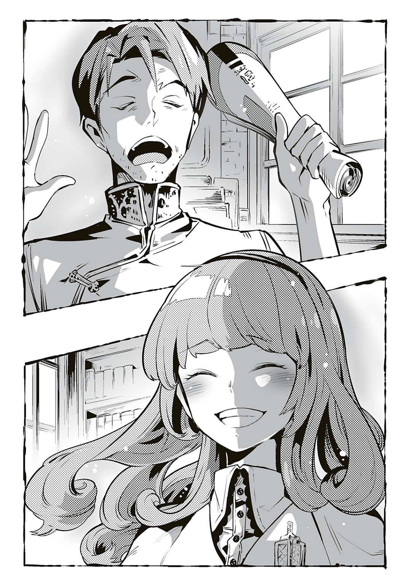
信は瞳だけで「呆れたよ」という意思を伝えてから、
「呆れたよ、お前にゃ」と言った。
ミカヤはにこりと笑い、
「呆れられるの慣れています。母さんからよく言われたな。なんでも真正面から突っ込んで行くから、よく鼻をぶつけるんだよ。綺麗な鼻が、ドワーフ族みたいに丸くなっちゃうよって」
「......それがお前の道だってんなら、もう何も言わんよ」
「はい。それと......信さんって、ジョレンテやウルヴァンと同じ学校を出ているんですよね？」
「ん？ そうだが、それがどうした？」
「じゃ、私の母さんってどんなでした？ やっぱり、モテモテだった？」
私は精いっぱい、恋話が大好きな少女を装った。
「なんだよ急に......そりゃ、コーネリアスは美人だったからなあ。学校の男全員、コーネリアスに夢中だったよ。射止めたのはトマスだった。トマスは俺から見ても惚れ惚れするくらい頼りになる男だったから、まあ、しょうがねえやって感じだった。羨ましいぜ。コニーと結婚して、そんでお前みたいな娘までできてよ。ま、その後奴が逮捕されたことは、俺にも運命神にも......いや、これは余計だったか。まあ、とにかくそんな感じだ。コニーとトマスはよ」
信は照れたように笑った。
「母さんに惚れていた人って、どれくらい？」
「......ほんとに全員じゃねえのか。神官学校の五人衆も全員。トマス、サリー、ウルヴァン、ジョレンテ、んで市長のマルフォイも。コニーは月の女神アルネリスの化身なんじゃないかって言われるほどで、学食の時間、みんなでコニーを囲んでいたんだ。だが、コニーはトマスのことしか見てなかったよ。ほんと」
「信さんは？」
「まっさか。自分の身は弁えているよ」
ミカヤは、テラミス神への祈りを込め、自分の胸に拳を当てた。信はそれから、表に出て煙草を吹かし始めた。彼は一本吸いだしたら、箱の中身全部を使い切るまでは戻らない。
ミカヤは信の机のそばに立ち、こっそりと呪詩をつぶやいた。
「引き出しの中の小さな幸せ」
それは、暗号呪詩であった。
引き出しが開き、中には白く光るブローチが一つ入っていた。窓から信の方を見ながら、それを取り出して引き出しを閉める。もう、時間がない......。賭けは、絶対に成功させねばならない。
それから、ミカヤはまず真っ先にセトに相談した。
セトは大慌てで止めたし、「中止しないなら、俺とて君を逮捕せねば」とも言った。ミカヤも、ここでセトに逮捕されて法律家としての人生を終えるなら、それでもいいとさえ思っていた。
しかし、セトの協力は必要だ。一人では身の危険もある。
一時間かけての説得の末に、セトはやがて根負けしたように言った。
「ミカヤ、短い付き合いだけど、君が一度やると決めたことはやるって性格なのはよくわかった。止めたいけれど、それには君を通報して逮捕するか、無理やり押さえつけるかしないといけないけど、俺はどっちもやりたくない。......このハイエナのセトの命は一度、君に拾われたものだ、君のために投げだすなら本望だよ」
「セト、恩に着るわ。どう感謝すればいいのかわからないくらいよ」
ミカヤはその時、目論見が上手くいくことを祈る前に、この青年との出会いをテラミス神に感謝すべきなのかもしれないなと、そう思っていた。
父さんも「常に太陽に恥じぬよう、まっすぐ前を見て進め」と私が子供の頃、よく言っていた。今横で、火に焼けた肌に照れたような笑顔を浮かべているセトこそが、まさに「太陽に恥じぬ男」なんじゃないかな。そんな風に思う。
第五章 死の精霊
【精霊呪術法 第七十条】
召還した精霊の力が、術士の容量を超えることはない
１
さて、セトが太陽に恥じぬ男だとすれば、今現在鉄格子の中にいる男はどうだろうか。何十日も鉄格子の中にいるにも拘わらず、精悍な顔つきも、人を試すような視線を投げてよこす瞳も、出会った時からまるで変わらない、この男は......。
「来るなら、今日かと思っていたぜ。赤毛のおチビさん。で、何しに来たんだ？ いい話じゃねえんなら、さっさと帰れ」
月が落下して世界中が大混乱に陥っても、一人だけ平然として俺にゃ関係ねえとうそぶいて本の続きを読み始める、そんな男。
「いい話には違いないわ。なんせ、ここから出してあげるんだから」
暗闇の中でも太陽のように輝く赤毛の少女の手には、鍵の束が。
アイスフェルドは興味深げに彼女を眺めた。
「まさかとは思うが、脱獄させようってのか？ もしそうなら、お前を買いかぶり過ぎていた。バカの間抜けだと言っていたが、ここまでの阿呆だとは思わなかったぜ」
「もちろん違うわ。これは、取引よ。そしてお願いがあるの」
アイスフェルドの頭にも「？」が浮かんでいるようだ。
「何がなんだか、さっぱりわからねえな。説明しろよ」
「......私に〝死の精霊〟の召喚の仕方を教えて頂戴......それ以外にないの」
「ああん？」
アイスフェルドの眼が「お前、正気か？」というものになった。
「あなたの冤罪を証明するには、もうこれしかない。今集めた証拠だけでは、どうしても足りないの。死の精霊を証言台に立たせ、あることを証言してもらう......。それで、あなたのアリバイは証明できる！ お願い、教えてちょうだい！」
「自分の言っていることが理解できてねえようだ......。死の精霊は、触れたら最期、その場であの世に行ける、世界でも最も忌み嫌われている精霊だ。それがわかった上での台詞か？」
アイスフェルドの顔が普段と違う。これは、沙漠でグリフォンを一撃で葬り去った時の顔だ。
ミカヤは、拘置所の中でらんらんと目を光らせた。
「死は怖くない。怖いのは、自分の生き方じゃなくなること......！ 『これをやれば勝てる』っていう手段があるのにやらないなら......それはもう人生じゃないわ。私は、やるって決めたのよ。そのためには、あんたをここから一時的に出す。ただし、すぐに元に戻すけどね」
「......んとに、勝手になんでも決める女だな」
アイスフェルドはおかしなものを見る目でこっちを見てくる。思えば、出会った時からこの男はずっと、私を値踏みしていたのかもしれない。
アイスフェルドは、ミスリル銀の手錠を掲げた。暗闇の中、淡く白く光っている。
「わかっているよな？ 俺から呪術の指導を受けたいってんだ......。大陸最高の精霊呪術師である、この俺からな。なら、誠意を見せないとな」
「......」
「こんな手錠嵌められたままで、指導ができると思うか？ あん？」
ミカヤは（やはり、そう来るか）と思いながら、鉄格子の扉を開けた。その時、セトが後ろにやってきた。拘置所の職員の気を引いておいてもらったのだ。その隙に、ミカヤは鍵を手に入れることができた。
「ミカヤ、本当に大丈夫なのか？」
片手剣を腰に提げたセトが、緊張の面持ちでいる。足の怪我は完治することはもうないとはいえ、リハビリのおかげで良くなってきている。
「セトがついていてくれれば、安心よ」
鉄格子の鍵を開け、中に入る。ミスリル銀の腕輪をちらちらと見せながら、アイスフェルドが立っていた。
「誓ってちょうだい。あなたを......こんなあなたのことを信用した上でやるのよ。だから、誓ってちょうだい。〝死の精霊〟が召喚できるようになったら、またこの鉄格子の中に戻るって」
「あいにく、誓う神は持ち合わせていねえんだが......」
ミカヤは彼の手錠を外した。ミスリル銀の手錠は、床に落ち透明な金属音を響かせた。
「約束は守ってやる。こんな狭いとこで授業もなんだ。表に出りゃ、庭があるぜ」
「ええ。でも、そこまで行くには衛兵たちの目をかいくぐらないと」
「その必要はねえ」
アイスフェルドは鉄製の壁に手を当てた。次の瞬間だった。ミカヤの目の前で、符呪で強化された鉄の壁が、瞬時にして溶けてしまったのだ！ その向こうには草木が生い茂る、子供たちがかくれんぼをして遊ぶのに最適なほどの広さの庭が――。
（なんていう呪力......）
ミカヤの体から、脂汗が流れた。脱獄を防止するために、強化された鉄の壁が一瞬でバターのように溶かされてしまった。床には焼け焦げた鉄が、溶岩のようにそこいらで燻っている。
「ほら、早く来いよ」
ひょいとそこから表に出るアイスフェルドの後を、ミカヤは負けるものかと意気込んでついていった。その時、私はこの男の訓練についていくことができれば、間違いなく死の精霊を召喚できるようになるだろうと確信していた。こんな凄い呪術師、今まで見たこともなかったから。
「始める前に、セト。こいつは呪力がねえお前にゃ危ない」
アイスフェルドは夜空と月の下で言った。
「見張りでもしていてくれ」
セトは力強く頷き、
「いいだろう。どの道お前が逃げる気なら、俺などとうに倒されている。だがアイスフェルド......ミカヤに万一のことがあれば......カヌーゾの地獄まで追いつめ......」
「殺すか？」
「いや、逮捕して裁きを受けさせる」
セトはそう言い残し、険しい顔のまま中庭を歩いていった。アイスフェルドは「面白い奴らだ」とつぶやき、ミカヤに向き直った。
「体内精霊を出してみろ」
ミカヤは水の踊り子を召喚した。透明な女の子のような形の妖精が、暗闇の中を街灯と月の明かりを反射しながら飛び回り、セトの前で宙返りをした。
「基礎から教える。生きとし生けるものはみな、火と水のせめぎ合いの中にある。最初に火が起き、次に水によって鎮火され、そこから命が生まれ維持されている。たとえ呪術が使えない人間でも、体内には必ず火と水の精霊が住んでいる。その中で、個人によってより強い方の精霊が、そいつにとっての体内精霊になる。お前の場合は水だったわけだ。ここまでは、学校で習ったな？」
「ええ」
「お前、容量はどこまである？」
「......三式までよ」
「三!? 目いっぱいやってか？」
驚いた声に、ミカヤの顔は羞恥心で赤くなった。
「悪かったわね！ あなたと違って、法律の勉強で忙しかったのよ......！」
「悪くはねえが、驚きではある。これで死の精霊なんぞ召喚すれば、容量超えでお前さんの小さな体は跡形もなく消し飛んでしまうだろうよ。やれやれ......まず容量を増やすところから始めないと......。こいつにゃ、最低でも八式の容量が必要だ。それと、本気で死にかけた経験とがな」
「今の私には容量が足らない？」
「足りねえ。それで死の精霊なんぞに手を出そうなんて、ホビット族が海の水を全部飲み干そうとするようなもんだな。容量を超えた精霊は、術者の体を食い破る」
アイスフェルドは、それから私の方へと近づいてきて、革手袋を嵌めた左手に赤い光のオーラを集中させ始めた。
「ど、どうするの？」
「今から、〝永遠の蒸発〟をやっても日が暮れるだけだ。本来は、水滴を火の精霊で蒸発させ続ける訓練で、少しずつ容量を増やしていくのだが......、そんな暇はねえ。そこでだ、手っ取り早い方法を使う。術式を上げるのと、本気で死にかかる経験を両方してもらう」
「どうやって？」
「今から、お前の中の『火』の力を一気に倍にする」
「私の中の火を......？」
「お前の中にも眠る火の精霊、それをちょいと刺激してやる。お前は、水に精霊の力をフルに使って、それを封じ込めろ。その時、お前の容量は桁外れになっている」
「でも、そんないきなり、火の精霊を倍にしたら......」
「上手くいかなきゃ、体が中から弾け飛ぶだろうな」
ミカヤは歯を嚙みしめ、改めて自分がやろうとしていることの無謀さを思い知った。
「どの道、今の容量で〝死の精霊〟なんか呼べっこねえ。どうだ？ それでもやるか？」
ミカヤは「もちろんよ」と言おうとして、考え直した。
「あなたは燃やすんだったわね......敵も味方も。やってちょうだい」
アイスフェルドは満足げに笑い、左手に赤いオーラを集中させた。
夕焼けのように真っ赤なオーラの球が、彼の手の上で灼熱の気を放っている。
「死ぬなよ」
赤き灼熱のオーラをミカヤの腹に当てた。
その瞬間、ミカヤの腹の奥底が爆ぜた。
血が、内臓が、皮が熱せられ暴れ狂っている。意識を失いそうになりながら、ミカヤはただ激痛に耐えていた。
「水の精霊力を上げろ、ミカヤ！ 内側の火を抑え込め！」
抑え込む？ どうやって？
わ、わからない......熱い。熱い......。目の前が赤く染まる、そこにいたはずのアイスフェルドの顔も見えない。いや......何かがいる。黒い......暗黒の塊のような何かが。
「もっとだ！ もっと上げないと、死ぬぞ！ 水だ！」
死ぬ......死？ 私が死ぬ？ そうだ......今、私は死にかかっているんだ。
うう......苦しい、熱い。み、水......水、飲みたい。喉が......。喉が焼ける......。そんなことをぼんやりと考える私の肩を、何か物凄く大きくて力強いものが摑んだ。これは？ これは、アイスフェルドの両手だ......。弾け飛びそうになってる私の体を、支えてくれているんだ。彼は、自身も水の精霊を放ち、万年噴火しているカヴォン山の溶岩流のように熱せられた私の体を少しでも冷まそうとしてくれているのだ。
「ミカヤ！ 聴こえるか？ 早く抑え込め！ お前にできねえことじゃねえ！」
お前にできないことじゃない......か。
そういう言い方をされると、燃えるのよね、私。
「......こえているわよ！」
怒鳴り返すけれど、ちょっとでも気を緩めれば、体が弾け飛んでしまいそうだ。
体の中で、火の精霊が暴れまわっているのだ。
水の精霊力でもって、無理矢理抑え込む。
「さっさとしろ！ ねじ伏せろ！ 阿呆赤毛！ 体が消し飛ぶぞ！」
アイスフェルドの罵声が降りかかってくる。
「......るさい！ 阿呆って......言うな！」
「こんなこともできずに、救うなどと言うな！ 馬鹿の赤毛！ 水の精霊だ！ もっと上げろ！」
くそっ！ 励ますならもっとマシな言い方をしろ！
「ぐ......ううう！」
駄目だ......身が持たない。
目がくらくらして、黒いものが見える。眩暈？ いや、違う......。何かが私を見ている。黒いほろを着た銀色の......。
「そっちへ行くな！」
アイスフェルドの声に、私はびくりと体を震わせる。
「自分だけに集中しろ！」
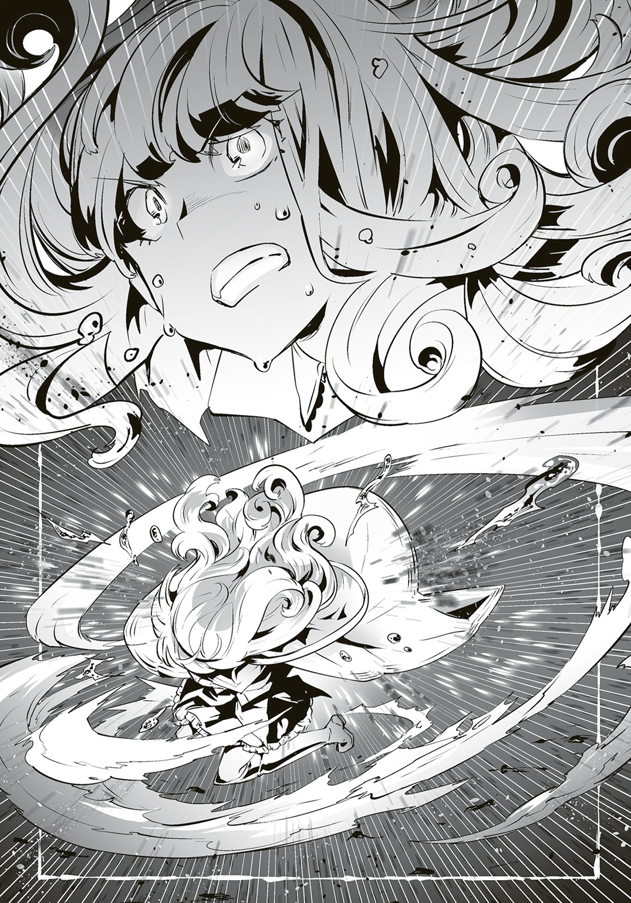
「ええ......ええ......」
「水だ！ 水を上げろ！」
「わか......ってる!!」
「わかってねえだろ！ 脳みそまで茹で上がってんのか！」
「な......なんですってえ......？」
「阿呆の赤毛！ この俺が補助してやっているってのに、これくらいも抑え込めねえのか！ 馬鹿の赤毛女！ 買いかぶりもいいところだぜ！」
「こ......このお!!」
絶対にぶん殴ってやる。
あいつの顔が見える。いつもいつも人を馬鹿にして、折角助けてやろうとしているってのに、ちっとも。
「アイス......フェルドおおお！」
こんなものおおお！
ミカヤは言葉にならぬ雄叫びを上げていた。内側に込められた灼熱を、全ての呪力、気力、精神力でねじ伏せる。
ミカヤの腹と胸と足と頭と心臓の中で、何かが爆発した。
ああ、私は死んだのか。気が遠くなった。
頭の中の色が白なのか黒なのかわからない。
それでも、必死で眼を開ける。死ぬにしても、最期に何かを見てからにしたかった。
あいつの皮肉屋の顔か、セトの悲しみの顔か、それとも......。
気がつくと、そこには星空があった。
晴れ渡った夜空。まばらな星。
満月が一つだけ、チーズみたいにのんびりと浮かんでいる。
ざああ、と水しぶきが空から落ちてきた。
雨か？ いや、これはアイスフェルドが私を冷やすために放っていた水だ。
それが、最後に私が自身の灼熱をねじ伏せた時に打ち上げられ、降り注いできたのだ。
「ミカヤ、成功だ。よくやった」
ミカヤは、その時になってようやく自分の着ている法衣がびしょ濡れになっていることと、それを背後から抱きしめるアイスフェルドの力強い両腕の存在に気がついた。
「これで、お前の呪力は三倍くらいには跳ね上がった。元々、素質があるんだろうな」
「アイスフェルド......」
私の体はぐらりと揺れ、唇からは湿った吐息が漏れる。
「おっと、まだ寝るなよ。今だからこそ、できることがある」
「今......だから？」
「死の精霊を呼ぶんじゃなかったのか？ さっき死にかけたお前だからこそ、できることだ。さっきのことを思い出してみろ」
そうだ。確かに、さっき死にかけた時、なんだか黒い闇の塊のようなものが見えたような気がする。
「そいつを、呼び出してみろ。呪詩なんぞ、なんでもいい」
あいつを......？ あいつが、死の精霊？ 闇を纏った暗黒の塊。触れただけで、生物を死に至らしめるという、この世で最も忌み嫌われる精霊。
「茫漠の徒よ......闇に生き、闇に朽ち果てる新月の魔物よ......その姿を風の中に」
滑らかに口をついて出てくる呪詩。
成功する。そう確信していた。
そして、当然のように〝それ〟は現れた。
薄暗い紺色のほろをマントのように羽織って、体は全てが黒。その中に、一点だけ銀色に光る銀の光......それは目だった。
「こいつが、お待ちかねの死の精霊だ。......やりゃあできんじゃねえか」
アイスフェルドの声を背後に聞きながら、ミカヤは目の前にいる精霊を見つめていた。触れれば即死ぬ運命にあるというそれは、月明かりの下で幻想的に舞い、揺れ、私に視線を投げかける。
「触るなよ。術者であろうとも、触れたらお陀仏だ」
「これが......死の精霊」
そうだとわかっていても、思わず触れてしまいそうになる儚さと不気味さとがあった。
「あまり、目を合わせるな。声をかける時も、慎重に言葉を選べ」
「え、ええ」
「よし、もういい。消せ。こいつの眼をあまり見過ぎていると、視力がなくなるんだ」
ミカヤは集中を解き、死の精霊を精霊界へと帰した。
体がくたくただ。アイスフェルドの両手がようやく離され、ミカヤの体は倒れ込みそうになった。そこを、慌てて後ろから駆け寄ったセトが支えてくれる。
「ミカヤ！ 無事か!?」
「ええ、ありがとう、セト......」
「ミカヤ......俺はもう、気が気ではなかった！ 止めるためにアイスフェルドを切り殺そうかと思ったほどだ！ だが......よくやったな」
「おいおい、正義の警官さんよ。さっきと違って随分な言いようだな」
ミカヤはセトと顔を見合わせて笑った。
よかった......私にも、できたんだ。これで、裁判はなんとかなる。〝あの男〟が今までやってきた、捏造と隠蔽。全部暴くことができる。
「アイスフェルド？」
ミカヤの声に、
「もう用事は済んだんだろ、ミカヤ。約束は守る」
その時、私は気がついた。今、ちゃんと名前で呼んでくれている。
「あなたが人を認める条件って、死の精霊を呼びだすことなの？」
ミカヤはくすりと笑った。それも彼らしい。
しかし、彼は首を横に振った。
「いやあ、呪術なんぞどうでもいい。俺が認めるのはな......命を張って物事をやる奴だな。まあ、今までだってそれなりに認めてはいたんだぜ。けど、今ようやく、あんたから本物の信念が見えた。ちょっと法律の資格取ったからって俺を救える気になっている割烹着の赤毛じゃねえ。命張って他人を救おうとする赤毛のミカヤからな」
「えらっそうに！ 何様だよ」
ミカヤは笑った。
この男は、とことんまでローランド・アイスフェルド。それ以外の何者でもないのだ。
（アイスフェルドは燃やすだろう。敵も味方も、人の想いも......か）
ずぶ濡れだけど、まだ体が火照っている。
「ミカヤ。俺のことな......仲のいい奴はアイスって呼ぶんだ」
「アイス......」
ミカヤは口に出してみた。
うん、この男にしっくりくる。
「で、大体なんかやったお礼には林檎とか果物をくれるもんだな、気が利くダチはよ。ま、お前は手ぶらで来る、気が利かない奴のようだがな」
「調子に乗るな！ けど、そっか何かお礼しないとね」
「よし、これで依頼完了だな。早く着替えろよ」
そう言って、ぽかんと空いた壁の中に、もう去って行こうとする。
アイスフェルドの体が完全に消えてしまう前に、ミカヤは言おうとした。
「あ、ありがとう！」
しかし、それを言いきる前に、アイスフェルドが使った〝物質復元〟の呪術で、溶けた鉄製の壁は元通りになってしまった。
「......ありがとうくらい言わせてよ」
セトの肩に摑まりながら、そうつぶやいた。きっと彼は、独房の中で一人でミスリル銀の腕輪を嵌め、一人だけでなんの孤独も感じずに悠然と佇むのだろう。なんせ、自分のことで噓はつかない、約束を守る男だものね。
「ミカヤ、君はやはり凄いな。あれを守ろうとしているのだから」
セトの台詞が、すとんと心の中まで入ってきた。
ミカヤはもう一度、月と星を見た。多分、セトも隣で見上げているだろう。独房の中のあいつは、どうかな。上の方にある小さな窓から、月や夜空を見上げたりすることがあるんだろうか？
そんな気もするし、そんなことしないようにも思える。
私はその時、きっと裁判に勝てると思って安堵していたのだ。最大の懸念であった、死の精霊を呼び出せるようになったのだから。
翌日。ミカヤは朝から、最終公判に向けての準備を進めていた。
もう、恐れるものは何もない。死の精霊を呼ぶ練習も行ったし、後は本番を待つだけ。証拠も証人も揃えている。真犯人を告発する、その時を待つだけだ。
自分以外誰もいない自宅で、文庫本の小説を読んでいた。『透明な赤い花』というタイトルの小説で、二百年前の文豪が書いたものだ。少年と少女が、家庭の崩壊から絶望の淵に立たされ、そこから這い上がっていくストーリーだ。結末は悲劇なのだが、一番好きな小説だ。
ドンドン、と無粋な音が鳴った。
「はあい」
返事をして、玄関へ向かう。隣のおばさんかな、と思っていた。ねえ、ミカヤちゃん、一人で寂しくないかい？ 昔のことは忘れてさ、ほら美人なんだから彼氏でも作りなよって言いながら、温かいスープを持ってきてくれたりする。土足で人の心の中に入ってくるけど、とても優しいおばさんで大好きだった。
「ごめんよ。おお、あんたいたのか。いや、裁判前だってのに、暢気だねえ」
予想と違い、そこにいたのはエミーの家に押しかけていた記者だった。相変わらず下卑た顔をぬううと近づけてくる。
「勝手に押しかけて、いたのかはないでしょう。要件は？」
「いや、あっしはウェインってんだけどね。そう邪険にしねえ方があんたの身のためだぜ。まあ、裁判前に少し話を聞いておこうかと思ってね」
「そんな厚かましい物言いの記者に、答える義務はないわ。さあ、帰って......」
「昨夜は、拘置所で大騒ぎしたそうだな？ ええ？」
扉を閉めようとする手が震えた。ウェインの脂ぎった下卑た顔に、勝ち誇ったような笑みが浮かんだ。ミカヤは扉のノブを持つ手に、汗がじっとりと滲むのを感じていた。
「拘置所の看守にも、あっしの友人がいましてね。たまにちょいと小銭渡して闇組織の黒い話を聞かせてもらって、記事書いて......まあ情報屋ですな。そいつが、おかしなことを言いやしてね。なんでも、可愛らしい弁護士さんがアイスフェルドの牢屋へ行ったきり、帰りが遅い。なんだか精霊の力を感じると思って、慌てて向かったそうで。看守の中には、術者がいるんですよ、ええ。そしたらアイスフェルドは普通に鉄格子の中にいた。でも、おかしい......あの弁護士とでかい警官はどこへ行ったんだ？」
「......」
「まさかアイスフェルドに殺された？ いや、でも奴はミスリル銀の手錠をしている。すると......まさか、いやまさかとは思うが、その可愛らしい弁護士さんがアイスフェルドの手錠を開けた？ いやいやまさかねえ......そんなはずはねえよなあ。だってあんた、父親の冤罪を晴らすために正義の弁護士になったんだもの。なあ、あの脱税弁護士を追い詰めた時ゃ面白かったぜえ？ 正義面したいい歳こいた野郎が、必死で弁解してなあ。くっけけけけ」
記者が下卑た笑みを浮かべている間、ミカヤはなんで目の前の相手をぶん殴ってないんだろうか、今すぐ殴るべきなのに、と考えていた。
「まあ、いずれあんたにもいろいろあっしのためにやってもらうぜ。やってもらうことは、簡単だ。まあ単純に金とか情報とかそう言ったもんを用立ててもらうぜ。あんたいい女だし......そっちの方も頼もうかな。へへへ。言う通りにしねえと......わかってるよな？ それじゃ、敗戦確定の弁護を頑張ってくれよ。間抜けの弁護士さん」
ミカヤは、机に小一時間座っていた。それからようやく立ち上がり、誰に相談しようかと考えたが、すぐに止めた。まずやるべきことは、アイスフェルドへの謝罪だ。どうやら、自分は裁判に挑めそうもない。そのことを謝りに行こうと考えた。
面会室まで来てそのことを話すと、アイスフェルドは「ああ、そういや誰かの視線があったな」とつぶやいた。ミカヤは「ごめんなさいアイスフェルド」とつぶやいた。
「......折角手助けしてもらったのに、私のミスのせいだわ」
「謝るなよ、バカ女。調子が狂うだろ」
「バ、バカですってえ？」
そう言いながらも、ミカヤはふっと自嘲するように微笑んだ。
「いえ、もうよしましょう。最後の最後まで喧嘩しているだなんて、なんだか勿体ないわ......あ、そうだ。あなたの恋人のことをもっと聞かせてよ」
ミカヤは笑顔を作った。そう言えば、この人の前であんまり笑顔を見せたことってなかったな、そんな風に思いながら。
「その様子じゃ、裁判は諦めたのか？」
アイスフェルドは眉を片方だけ上げている。
「諦めたくはないけど、もう、無理よ。私はウェインの言いなりになるくらいなら、牢獄に入った方がマシ。元々、法を破ったのは私の方だし、素直にお縄につくわ。多分、禁固八、九年くらいになると思う。父さんが入れられたのと同じくらいの長さ。凶悪犯を檻の外に出してしまったのだもの、しょうがないよね。でも、あなたを守れなくて、ごめんね。アイスフェルド」
「......」
「法を守るはずの法律家が、法を破ったんですもの......しょうがないわよね。ねえ、アイス......最後に私の話を聞いてくれる？」
アイスフェルドは無言で頷いた。
「私さ、小さいころから赤毛が嫌でね。中等学校の嫌な教師が、私を目の敵にしてくるの。いくら勉強しても、私を軽薄な女扱い。それに、父さんが冤罪を着せられていたからさ......『罪人の子は罪人になるだろうな』とか言ってくる始末！」
「クソだな」
「ええ、クソよ。で、メイと相談してね。メイは結構頼りになるからさ。『私はね、あのクソ教師を倒すくらいの力、あんたにはあると思っていたんだけど、買いかぶりだったかしら』って。私に火をつけるの上手いのよ、メイ。で、二人で法律書を買いあさって、クソ教師の言動のどれが大陸法違反に当たるか調べあげてね。証拠を裁判所に提出して、起訴申請をしたのよ。その時サツキさんが物凄く尽力してくれてね......。私、本当に教師を学校から追いだしたのよ！ 十四歳の頃だった」
「......見事なもんだ」
「サツキさんはその時、『流石、あのトマス・サリンジャーの子ね！』って言ってくれて。涙が出るほど嬉しかった......うぐっ」
ミカヤは堪え切れなくなって、嗚咽した。
サツキさんは、裁判の時も、私に期待をかけてくれていた。それをひしひしと感じていたのだ。けれど、もう裁判は終わりだ。私はもうアイスフェルドも父さんも救えない。
「泣いてんじゃねえよ」
「ぐ......ひっく」
アイスフェルドは腕組みをし、首を二、三回鳴らし、苛々と足を踏み、最後に「あー、ちくしょうが！ なんでそこまでやってやるんだ！」と怒鳴った。
ミカヤはきょとんとして赤い眼をしばたたかせた。
「いいから、お前は裁判の準備をしろ。俺が片づけてやるよ」
ミカヤは「この人、どうかしちゃったのかしら？」というような表情を浮かべる。
「どうやってよ？ 牢獄の中のあなたがどうやって......」
「そんなもの、どうとでもなるんだよ。いいから、準備をしろ。ったくよ」
「ま、待ってよ。一体、どうするつもりなの？」
「いいから、もう帰れ。そんな負け犬面と話したくはないんだ。とっとと帰れ」
「ま、負け犬ですってえ？」
「今のお前のツラは負け犬そのものだ。ほら、とっとと行け」
仏頂面で、犬を追い払うかのように手をしっしと振ってから、アイスフェルドは立ち上がり、拘置所の職員と共に面会室を出た。ミカヤが彼の名前を呼ぶ声が聞こえるが、構わず廊下を歩いて行く。
「いい彼女じゃねえか、大事にしてやれよ」
職員がそう言うのに、アイスフェルドはまたもうんざりしていた。どいつもこいつも、お節介な奴しかいないのか、この街には！
そのまま、アイスフェルドは苛立ちながら集まった職員三人が腰縄を持ってくるのを〝後ろについた目〟で見ていた。
（あのな、これでも暗殺者なんだから、呪術を使わなくても後ろくらい見えるよ。そりゃ）
ほんとに間の抜けた職員たちで、刺又で背中を押さえているだけで封じ込めた気になっているらしい。
「あー、ちょっといいか。俺、背中に古傷があって、そんなに押されると痛えんだけど......」
こんな台詞で、もう刺又の圧力が弱まる。アイスフェルドは、目にも留まらぬ素早さで屈み込み、回転しながらの回し蹴りで三人の足を薙ぎ払った。三人それぞれの喉、首、頭に手刀を入れて気絶させる。
一つ言っておくがお前ら、暗殺者を舐めすぎた。
中年の職員の懐から鍵を探ると、すぐに見つかった。手錠を外し、精霊力を高める。本来なら、容量をきちんと使うには「法衣」が必要だが、それは無論取り上げられている。だが、こんな初歩呪術なら法衣など必要ない。
幻惑の精霊を呼び出し〝まどろみの中〟の呪術を三人にかける。幻惑の精霊は淡く青い光を放ち、ふわふわと浮かんでいる。
「おい、おっさんら。さっきお前らに起きたのは、全部白昼夢だぞ？」
職員らは頷く。
「今あったことは全て忘れろ。俺は独房に入って、大人しくしている。わかったな？」
職員らは頷く。
「ちなみに、俺とミカヤが昨夜外に出たことを密告した奴はこの中にいるか？」
「私です」と職員の一人が手を上げた。
「そのことも永遠に忘れろ。で、お前が密告したウェインって記者はどこにいる？」
職員はその住所を告げた。
「よし、俺が戻ってくるまで、普段通り行動しろ。で、戻ってきたら独房内でそのミスリル銀の手錠を俺にかけろ。いいな？」
職員は頷く。
これでいい。後は透明になってここを出て、クソ野郎のウェインがミカヤに二度と手出しできないようにしてやるだけだ。
本当になんで、俺がここまでしてやるんだ！ お節介の正義バカが俺にも感染ったのか!? ......ったくこんなことジジイに知られたら、また「甘すぎる」だの「それでわしの後継者が務まるのか」だの言われ放題だろうな。誰も、てめえの後継者になろうなんて思っちゃいねえよ。
街灯の照らす中、夜道を歩く。
（俺ってここまでお人好しだったっけ？）
そんなことを考える。グリフォンの襲撃から守ってやったのが一回め、そして死の精霊のレクチャーをしてやったので二回め。これだけあいつを救ってやっているのに、これからまた助けてやろうとしている。やっぱり、シャロンに似ているからだろうか。見た目とかじゃなくて、生真面目で向こう見ずなところとか、やたらとお節介で正義感が強いだとか。まあ、シャロンは別に俺が殺したってわけじゃあねえんだが......ええい、いろいろ考えるのも面倒だ。
ただ、少なくともこれだけは言える。ミカヤは、そんなくだらぬ記者なんぞのせいで、人生を台無しにさせられていい女じゃあねえってことだ。それだけははっきりしている。
さて、その記者をどうやって締めあげようか。ぶん殴れば早いが、完全暗示をかける方が後腐れはない。どこかにウィルもいるだろうし。
と、思っていると夜風の中、透き通った弦の音色が聴こえてきた。
いたいた。路上の隅っこに、丸っこい眼鏡をかけて黒い外套を着た少年がいる。
「おう、ウィル」
アイスフェルドはそう声をかけた。ウィルは路上でヴァイオリンを弾いてばかりいて、「こんなヤクザな世界から足を洗って、ヴァイオリンで生活したい」と言うのだが、これでも月狼の中でも指折りの腕利きだ。
「あれー、アイス？ 裁判に付き合うのはもう止めたの？」
ほんと、いいタイミングで出てきてくれるよ。
「いいから、ちょっと付き合えよ」
ウィルはヴァイオリンをケースにしまった。
「なんて曲だっけ、さっきの？」
「雨の歌」
「晴れているだろうが」
「降っていたら弾けないよ」
ウィルは苦笑した。
「いいから来いよ。手伝ってくれ」
「なんだい、改まって。あの美人の弁護士のことはいいの？」
「そいつのことだ。もっとも、別に美人じゃねえけどな」
２
夜半。
お酒を飲んでやろうかしら、とミカヤは思っていた。二十歳になるまでは飲まないぞと決めていたけれど、父さんが出所することができたら、飲もうと思って取っておいたワイン。戸棚に仕舞われていたのを、テーブルの上に持ってきた。明日、警察に自首しようと思っている。法を破ったのだから、それでいい。それに、元々アイスフェルドの裁判が終わったら、出頭しようと思っていた。あいつを救えなくなって本当に残念だ。ようやく、あいつの魅力がわかってきたかなと思ってきたところだったのに、そして救う方法もあるはずなのに......。
父さん、がっかりさせてごめんね。父さんを救うとか、大きなこと言っておきながら、あいつすら救えなかったよ。
お酒を飲んでやろうかしら。こんな状況だし、それくらい許されるよね。
でも、私はやっぱりワイン瓶を戸棚に戻した。昨夜法を破ったばかりなのに、今また破ることなんてできないよ。うん、決めた。やっぱり飲まない！
そして、ベッドに入ってぐっすり眠る。起きて歯をみがいて顔を洗う。
ドンドン、とまた無粋なノックがあった。
「はい」
そう言って、表に出るとやはりウェインの姿があった。あんな乱暴なノックをするのはこの男だろう、そう思っていたが、どうも様子が違う。
口と目が腫れあがっており、衣服もぼろぼろだ。
「誰にやられたの!? あなた、そういう仕事の仕方をしているから、恨みを買って......」
言いかけて、口をつぐんだ。これをやった男に心当たりがあったからだ。
「す、すいませんでした。今まで全部すいませんでした！ ミカヤさん、もう二度とこんなことはしません！ お願いだから、許してください！」
ウェインはぺこぺこと頭を下げる。
アイスフェルド......あなた、いったい何をやったの!?
「落ち着いて......誰にやられたのよ？ それに急に許せと言われても......」
ともかく確認のためにそう聞いてみたが、
「それを言ったら死ぬと言われているんだ......。あんな怖い思いしたのは生まれて初めてなんだ......。頼む、殺さないでくれ」
「誰も殺しはしないわよ。私があなたを殺せるとでも？」
ウェインは首をぶんぶんと振った。
「あんたに『許す』と言ってもらわないと、死ぬんだ。そういう呪術をかけられたんだよ、あの男に！ 恐ろしい......えっと名前が出てこねえや。けど、とにかくあいつにそうされているんだ。頼む、許してくれええ！」
あいつ、またはったりを使ったの？ 許してもらわないと死ぬ呪術なんて、あるはずがないのに。でも、ただ単にはったりだけで、ここまでおびえるわけはないようにも思う。それにこの人、記憶がおかしくなっているみたい。
わかったわ、アイスフェルド、こんなの最低のやり方だけど、私への気遣いのつもりなのね。ええ、いいでしょう。ここまで来たら、乗りましょう！
「わかった、許してあげる。ただし、私の父さんとサラサンテさんを誹謗中傷した記事について、全面撤回して謝ったらね。どう？ できないとは言わないよね」
ウェインは首を縦に振る。
「もちろん、そうします！ 土下座して謝りますよ！ ありがてえ、許してくれるんですね？」
「ええ。ちゃんと謝罪文を書いたらね。さ、もう行って頂戴。私はこれから、裁判なの」
「はい。勝ってくださいね！ ミカヤさんを応援しています。謝罪文も書きます！」
「わかったから、もう行って。忙しいのよ」
「はい、はい。それでは失礼します。はい」
ウェインはぺこぺこと頭を下げながら出て行った。
はああ、と溜息をつく。うんざりすることが多すぎて、鬱憤をどこにどうぶつければいいのかわからないくらい。でもやっぱり、お礼するべきなのかしら。
はああ、と何度も溜息をつきながら、大急ぎで裁判の資料をまとめ直した。一度は捨てた裁判に、もう一度挑めるんだ。今日の午後までに、ちゃんと気持ちを作らないと。
第六章 地獄の法廷
【精霊呪術法 第八十五条】
一つの国で、死者の数が49になった時にはある地域に死の精霊が集まり、そこから火の精霊が逃げていく
１
曰く、大陸最高の暗殺者。
曰く、焰の精霊王を飼う男。
大陸史上最大の法廷劇として、日が変わるごとに号外が飛び交う。大陸新聞は過去に例をみないほどの天井知らずの売上を記録し、その間にメイ・ヴォーデンは編集から、副編集長へと出世していた。
王立裁判所の前には、大地も裂けるほどの人だかり。
メイはあくせくと足を動かし、少しでも面白そうなコメントをしそうな奴を目で追い求める。おや、とその瞳が一人の男に焦点を合わせた。
「薬屋さん、まだいらっしゃったんですね？」
それは、初日に裁判所前にいた薬屋であった。
「おう、『まだいたのか』はこっちの台詞だ。もう次の街へ行こうと思って馬車を探していたら、まだこんなに集まっていたのかよ」
薬屋は呆れた様子だ。
「こいつら、人が殺されるのがそんなに楽しいのかねえ」
「殺されるのが、じゃなくて悪人が裁かれるのが楽しいんですよ」
「どっちにしろ同じだ。服の趣味はいくら悪くったって誰も気に留めやしねえが、人生の趣味だけは悪くなりたくねえもんだな」
「耳が痛い言葉です。ところで、この裁判、今日が最終公判です。どうなると思いますか？」
「どうなるかなんぞ、知るわけねえだろ」
「まあ、そう言わずに」
「どうなってもいいがよ......なんか、妙な雰囲気が漂っているなあ。きな臭いっつうか......おい、お嬢ちゃん、一つ言っておくけどよ」
「はい」
「俺はすぐにこの街を離れるぜ。何度も荒廃した村や戦火の跡で仕事してきたんだがよ。どうも、今日この場所でやばいことが起きそうな感じだ。それじゃあな」
２
秋の二の月、二十九日。
ミカヤは靴音を響かせながら、廊下を歩いていた。
コツコツ、コツコツ。
大聖堂の床に革靴の硬い靴底が当たる。
乾いた音を聴くたびに、ミカヤは頭が冴えわたっていくのを感じていた。
小さい頃から、正義は報われ、悪は滅びると信じていた。
十七歳になった今でも、そのことに変わりはない。
私は、今まで怖かったのかもしれない。
その男が犯人かもしれない、そう思うことは今までにもあったのだ。
しかし、私は戦うことを避けていたのかもしれない。
悪に負けることが怖かったのだ。再び、全てを失うことが怖かったのだ。
今の自分はあの時とは違う。
「テラミスの裁きを」
ミカヤはそう口にしていた。
信念は報われるはずだ。
私の信じる神テラミスには、全てお見通しなのだ。
ミカヤは目の前の扉を開けた。
「出てきたぞ！ 赤毛だ！」
たちまち、傍聴席から野次が飛んでくる。
しかし、ミカヤが一瞥すると野次の主は押し黙り、何かを咎められたかのようにうつむいた。
おごそかな空気が、法廷に充満している。
ミカヤはその中を歩き、弁護側の席の前に立った。
隣に立っているアイスフェルドはいつも通り、手錠をかけられ、騎士に見張られながらも余裕の表情だ。
「あなたが昨夜やったことについては、不問にしましょう」
ミカヤはそう言った。
「さて、なんのことやら」
アイスフェルドは肩を軽く回した。
最高裁判官のサツキは、糊の効いた黒装束の袖から、年輪のようなしわが刻まれた腕を伸ばし、獅子の紋章が描かれた木槌を叩きつけた。
「サラサンテ・ニコラ殺害事件、最終公判を開始します。全員、席について」
ミカヤとアイスフェルドは同時に席につき、同時に視線を交わした。男の瞳には、相変わらずの冷酷さと揶揄が、女の瞳には燃えるような正義が宿っていた。
傍聴席にいるエミーは、神妙な面持ちで事の成り行きを見守っている。
まず、ゲイルは「もう、証明は十分に済んだはずです」と切り出し、「一刻も早く、この殺人鬼を処刑すべきだ」と結論を述べた。
サツキは「では、弁護人から」と言った。
「はい、では被告人を尋問します。アイスフェルド、席に」
アイスフェルドは「何度目だよ、バカ女」とつぶやいて、証言台に立つ。
ミカヤは彼の目の前まで歩いてきて、
「ローランド・アイスフェルド、もう一度、貴方の珍しい姓について話してほしい。どうして、貴方は『アイスフェルド』という名を名乗っているの？」
「異議あり！ 全く関係ありません」
ゲイルが手を上げたが、
「いいえ、彼の無実を証明するために、極めて重要な質問です」
ミカヤはそう返した。
「答えてちょうだい、ローランド・アイスフェルド」
「ああ、これはな、俺をこの世界に引っ張りこんだジジイの付けた名前だ。俺の左腕にはアフリートが住んでいる。だもんで、常に氷の呪力を保ち続けるつもりでいろってよ。そうしねえと、自分の体内精霊に食われちまうぞってな。アイスフェルド......〝氷を背負う者〟ってな意味だ」
アイスフェルドは得意げにそう言った。
「すると、貴方の体内精霊は火ね？」
「当たり前だろ」
ミカヤは法廷内をぐるりと見回した。
「みなさん、我々呪術師は体内精霊を媒介して、精霊を使います。私だと、水の精霊を媒介に使って、他の精霊を。被告人の場合は火の精霊です。さて、そこで......被告人が無罪であることを証明する、証人を呼びたいと思います。裁判官！」
「なんですか？」
さあて、この冷静沈着なサツキがどんな顔をするか、見ものだぞ。ミカヤの心臓は、いたずらする前の子供のように高鳴った。
「......〝死の精霊〟の召喚の許可を......お願いします」
言った途端、法廷中に悲鳴と怒号が上がった。
「気は確かか!? そんなもの、認められませんぞ！」
ゲイルが叫んでいる。
「......何故、必要なの？」
サツキの視線が眼鏡の奥からミカヤを貫いた。
「お願いします。これで、確実に彼が無罪だと証明できるんです。危険だと思ったら、すぐにミスリル銀装備の騎士の槍で、私ごと始末してくれて構いません」
サツキは少しだけ考えるような仕草をし、
「ミスリル銀装備の騎士を四人用意しなさい。そして、弁護人の周りを囲い、おかしな行動を取ればすぐに始末をするように」
係員に命令を下した。
その後、淡く光る銀色の甲冑を着こんだ対呪術高位騎士が西門と東門から二人ずつ現れ、ミカヤの周りを取り囲んだ。
「弁護人が、もし他者を傷つけるような行為に及べば、槍で串刺しにしてもいいわ」
サツキがそう言うと、騎士は無言のままでミスリル銀製の槍の柄を、床にだんと叩きつけた。傍聴席でセトが身構えたが、ミカヤは強気に微笑んだ。
そして、ミカヤは術衣の金具を外し、呪力を解放した。右隣の騎士の槍を持つ腕に力が籠もるのを感じたが、気にせずに呪詩を唱える。
「......茫漠の徒よ......闇に生き、闇に朽ち果てる新月の魔物よ、その姿を風の中に」
体内の水の精霊の力が膨れ上がる。以前のミカヤからすると、信じられないような莫大な呪力だ。それを抑えつけ、遠くにいる暗黒の塊のような精霊に語りかける。
薄暗い紺色のほろをマントのように羽織った......それは暗黒の使者だった。銀色に光る瞳には、感情が何も籠もっていない。その目で睨まれたと感じた傍聴人たちは、みな一様に恐怖にかられた。ある者は隣にいた女性の腕を摑んでしまい、物凄く嫌な顔を返されて、またそれに恐怖してうつむいた。
「みんな、指一本もこいつに触れないでちょうだい！ 触れた者は、全てあの世に行くわ......」
ミカヤが言うまでもなく、みな固唾を吞んで見守っている。死の精霊の恐ろしさを示す例は、枚挙に暇がない。
「さて、死の精霊さん、お名前を伺ってもよろしいかしら？」
死の精霊は、銀色の瞳でまっすぐにミカヤを見た。
「ディルドリン」
聞いた者全てをぞっとさせるような、深い闇の底を震わせるような、そんな響きの声だった。
「いい名前ね、ディルドリン。物質界に来たのはいつ以来かしら？」
「......くだらんな......」
「そう言わずに、答えてちょうだい。貴方を呼びだすのに、こっちは命を賭けたんだから」
「命がけか......それは好きだ」
「あら、命が好きなの？」
「いや、それが消える瞬間がだ」
無感情に答えるディルドリンに、ミカヤも改めて呪力を集中させた。一歩間違えば、私もこの場にいる全員も殺されかねないのだ。
「......今までに何人を殺してきたの？」
「覚えていない......別に殺すことが仕事ってわけじゃないからな」
「あら、違うの？」
「......俺がやることは一つ。死相が見えている者の魂を刈り取ることだ。生きようとしてるヤツには、あまり興味がないんだ」
そこに、たまりかねたようにゲイルが叫んだ。
「い......いい加減にしてくれ！ そいつの声を聞いているだけで、こっちは背筋が凍るんだ......！ こんなやり取りが、本件となんの関係があるのかね!?」
サツキも頷き、
「検察官に同意します。弁護人は、意図を明確にすべきです」
と、言った。
その通り、質問には必ず意図がなければいけない。これは散々言われてきたことだ。
「ディルドリン、聞きたいのはね。秋の二の月十二日、この〝赤き焰の帝国〟で、何人の人が死んだのか、それを聞きたいの」
「......くだらんな」
「そう言わないで、そこにいる黒髪の片方の耳だけにイヤリングをつけた男が、釜茹でにされるかどうかがかかっているの。私としちゃ、そんな奴釜茹でにしちゃえばいいのにって思うんだけどね」
ミカヤはアイスフェルドに微笑みかける。彼は、「けっ」と言って、おかしそうに口を歪めた。
「死ぬのか......別に誰が死のうが構わない......どうせ、いずれ全員死ぬんだからな。お前もそうだ」
「かもしれない......だけど、アイスフェルドは今、冤罪で殺されようとしているの......やってもいない殺人の容疑で」
「......その男は、元々殺人鬼のようだ」
「わかるの？」
「目を見ればわかる......」
ミカヤは首を縦に振った。
「その通りよ......彼は殺人鬼だわ。アイスフェルドは、この件が終わった後で、必ず私が有罪にするわ。九十九人もの人を殺したことは、テラミスに誓って決して許されるべきではない。けど、この事件だけは、別よ。彼は被害者を殺していない。それを証明してから、私は九十九人殺しの容疑で、改めてこの男を起訴するわ」
ディルドリンの顔に、初めて興味の感情が表れた。
「お前......気に入ったぞ。『俺を使った奴』よりも、よっぽど純粋で野心的だ......」
それは......あるいは「喜び」の感情だったのかもしれない、あるいはもっと別の何かか。ともかく、ディルドリンの銀色の瞳には、確かにミカヤに対する興味の色があった。
「じゃあ、答えてやるよ。その日......この国で死んだ人間は......」
その場にいる全員が、ごくりと唾を飲み込んだ。サツキでさえも。さっき、傍聴席で隣の若い女性の腕を摑んでしまった中年の紳士は、またしても同じ腕を摑み、そしてまたしても睨みつけられてしまった。
死の精霊は、死人の数に関しては噓をつかない。大陸の誰もが知っていることだ。なんせ、大陸政府が年間の死者数の発表をする時には、死の精霊を呼んで尋ねるほどなのだ。
「五十人だ。五十人が死んだ」
「間違いないわね？」
「俺は死の精霊だぞ？ 間違えるものか」
法廷はざわめき始めた。どういう意味だ？と、隣同士で問いかけ合う。
「みなさん、聞きましたか？ 五十人が死んだと、そう言ったのです。死を司る死の精霊がです！」
傍聴人たちは、顔を見合わせている。ある者は、唾を飛ばして意見を言っている。
「精霊呪術法第八十五条。一つの国の死者の数が四十九になった日は、死の精霊が集まり、火の精霊が逃げていく！」
ミカヤは大声で怒鳴った。
そこで、傍聴人の中から、「あ」という声が聞こえた。わかった謎の答えが合っているのかどうか確かめるような眼で、ミカヤの言葉の続きを待っている。
「みなさん。事件当日の死者は〝赤き焰の帝国〟全土で五十人。と、いうことは、サラサンテさんが死ぬ前は四十九人だったということです！」
ゲイルが手を上げる。
「い、異議あり！ そんなことが何故わかる!? サラサンテが死んだ後で誰かが死んだかもしれんじゃないか！」
「いいえ！ その日は沙漠の蛮族の抗争があったので、〝赤き焰の帝国〟中に外出制限のお触れがあり、午後三時半以降には交通事故や喧嘩による死者はゼロ！ 病院にも問い合わせたけれど、事件当日三時半以降の病死はないわ。つまり、サラサンテ氏が殺される前の段階で、死者の数は四十九人！」
ミカヤは声を張り上げ、ゲイルを黙らせた。
「ディルドリン、あなたはその日、どこにいましたか？」
「......ええと、なんてったかな。そう......〝左へ細長い街〟とかだったか」
「殺された被害者の街です。では、その日、あなたのお仲間の死の精霊は集まってきましたか？」
「ああ、グイドリン、ランスケム、バジャクシャ、ケースエース......大勢集まったぜ」
「ではその時、ある精霊が逃げて行ったのではないですか？ 貴方たちは、その能力で他の精霊からは嫌われています。なんせ、触れたら精霊だろうが魔獣だろうが、みんな死んでしまうんですから」
「ああ......逃げてった奴らがいたぜ。火の精霊どもは、慌てふためいて逃げて行ったぜ。奴ら、焰の王がまだ生きていることを盾に偉そうにしてやがるが、俺たちが集まると一目散に逃げて行ったんだ」
ミカヤはゲイルを見た。中年の検事は、髭まで冷や汗でびっしょり濡れて、みっともないったらない。一番高い場所で座っているサツキを見上げた。老練の彼女は、なんとこの状況でもまだ冷静であった。
「みなさん、聞きましたね？ 被害者が殺された当日、その町には、火の精霊がいなかったのです。この日、〝左へ細長い街〟では、街灯や鍛冶の火が消えっぱなしだったことからも裏付けは取れている。それは、サラサンテ氏が殺される前だったの！ そして、被告人ローランド・アイスフェルドの体内精霊は火！」
法廷内の全員が、次にミカヤが発する言葉を理解していた。
「精霊呪術法第五十二条、当該精霊が周辺に一切いない時、術者は当該精霊を使えない。尚、体内精霊も同様である！ 精霊呪術法第六十五条、体内精霊が使えない時は、他のいかなる精霊も使うことはできない！ よって、被告ローランド・アイスフェルドは、事件当日に精霊呪術を使うことはできなかったのです！ 風の精霊も、氷の精霊も、火の精霊も......！ 全て使うことができなかった！ よって、今回の被害者を風の精霊呪術によって口を封じることも、火の剣によって刺殺することも不可能です！ これをもって、被告人ローランド・アイスフェルドの無実の証明と、そして今回の呪術裁判の公訴棄却要求を終わります！」
しんとした静寂が辺りを包んだ。しかし、それは夏の日差しと雨を同時に受けた岩のように、静まりかえってはいるが、熱気と興奮に彩られていた。
「く・は・は・は・は・は」
乾いた笑い声の中に、ぽつんと置き去りにされたような拍手が響いた。
「よおーく......やったぜえ、赤毛のミカヤ。いや、見事見事。ここまで見事にやったんなら、そのリスのしっぽみてえな巻き髪を撫でてやってもいいぜ」
アイスフェルドは偉そうな座り方をし、首を椅子の背にもたせかけるように斜めにしながら、ただ一人静寂を破るように拍手を送っていた。
傍聴人らがざわめき始めた。
「お、おい......？ どういうことだ？ ほんとに奴は無罪なのか？」
「待ってよ。まだ、奴が呪術を使えないというだけで、無実とは限らないじゃない。呪術を使わずに殺したのかも......」
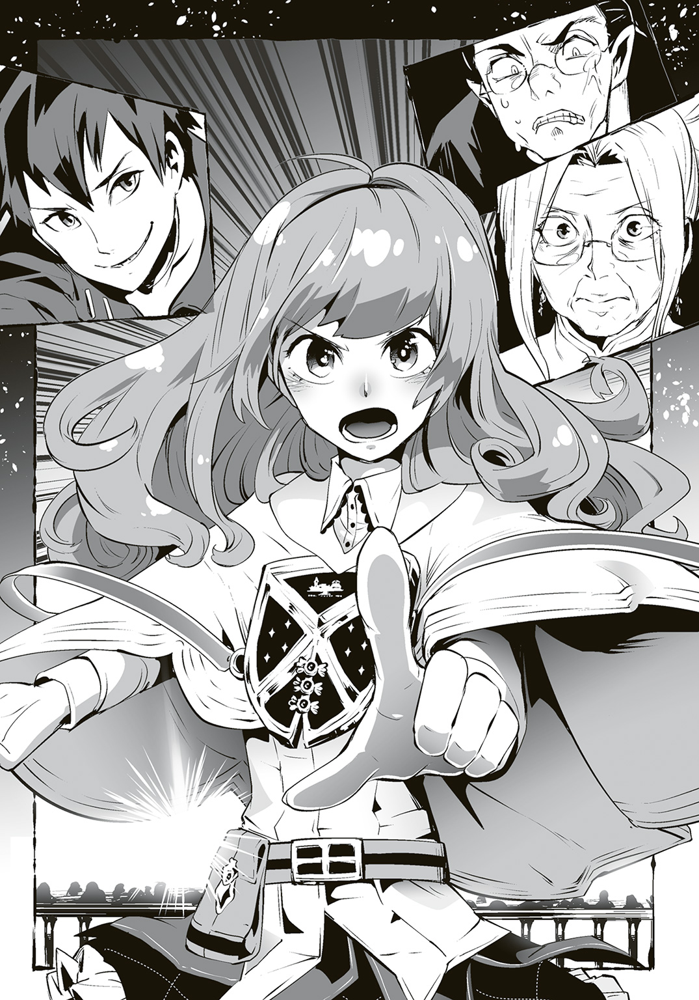
「いや、そうじゃねえ！ いいか......この裁判は中止だ！ 公訴は棄却される」
「どうして？」
「いいか、これは『呪術裁判』なんだ！ 呪術が使われた刑事事件だけを取り扱うと、そう決められている......。それ以外は扱っちゃいけねえし、裁判権が成立しねえ。だから、今回アイスフェルドを裁くことはできないんだ！ ......この裁判は、弁護側の勝ちだ！」
アイスフェルドの拍手の中、傍聴人たちはざわめきながらも、しかし裁判見物に慣れている連中は、この事態を理解していた。サツキが、槌を強く叩きつける。
「静粛に！ 静粛に！ 弁護人の公訴棄却要求を認めます！ この法廷には、被告人を裁く裁判権はありません。よって、公訴棄却！ これは、検察側の重大な落ち度です！ 怒りを感じるほどです。これが呪術裁判である以上、呪術を使えない者を裁くわけにはいきません！ また、〝精霊殺しの箱〟の性質から言っても、恐らくアイスフェルドにはサラサンテを殺害することは不可能でしょう......これより、閉廷します。とはいえ、まだアイスフェルドの無実を確信しきれてはいません。検察には彼を再起訴する資格があります」
法廷中が天と地がひっくり返ったような大騒ぎだ。大陸最高の暗殺者の裁判が棄却され、弁護人が勝ったのだから無理もない。
ゲイル、ウルヴァンの顔といったら、見ものだわ。こてんぱんにやっつけるつもりでいたはずの相手から、大逆転されてしまって無残に口をパクパクさせている。
そして、エミーさん。複雑だろうけれど、嬉しそうでもある。彼女もやはり、アイスフェルドが犯人だとは思っていなかったのだ。
でもね、私の反撃は、まだ始まったばかりなのよ。
アイスフェルドは鷹揚な顔で、ミスリル銀の手錠を掲げている。早くはずせ、という意味だろう。係員が鍵の束を持って近寄るが、そこにサツキの「待って」という声があった。
「まだ、その手錠を外すのは待ってちょうだい」
「おい、帰れるんじゃねえのか？」
「通常ならともかく、貴方はれっきとした暗殺者よ。それも、大陸最高の。はい、公訴はなくなりました、といって手錠を外すわけにはいかないわ。それに、まだ無実とは決まっていない。あなたの身柄は、引き続き預かります。これは、私の判断です」
アイスフェルドは「そうかい」と言って、被告人席へと戻った。ミカヤの方に、「まだ、こっからだろ？」という視線を投げかけている。ミカヤは素早く手を上げた。
「裁判官、おっしゃる通りで、これではまだローランド・アイスフェルドの無実を証明しきれていません。そこで、お願いがあるのですが......」
「なんですか？」
「この場で、真犯人の起訴を行いたいと思います」
アイスフェルドの公訴棄却が言い渡された時と同じくらいのどよめきが起こった。
「......いいでしょう。あなたにはその資格があるわ」
ミカヤは心の中でサツキに感謝した。
「みなさん、ここに一つ疑問が残ります。というのも、先刻ディルドリンが言ったように、事件当日の死者は五十人。しかし、警察発表では二十人となっているのです。おかしいですね。常に正式な死人の数を発表する立場の警察が、なんでこんなに間違えたのでしょうか？ ねえ、ヤムス司祭長、警視総監のジョレンテさん？」
法廷中の視線が、一斉にその男に注がれた。ただ一人、アイスフェルドを除いて。
ジョレンテは両手を広げて「うんざりだ」というジェスチャーをした。
「裁判官、ジョレンテ氏をサラサンテ氏殺害事件の参考人として、証人尋問します」
ジョレンテは鷹揚に両手を広げて、「いったい、何が始まるんだ」とつぶやいた。
「......ジョレンテ、前へ出なさい」
「サツキさん、あなたは聡明な人物だと思っていたが、買いかぶりだったかな」
「前へ出なさい。それとも、ミスリル銀騎士に補導させましょうか？」
ジョレンテは威厳を保ったまま立ち上がり、歩いて行った。ほとほとうんざりした様子で、証言台についた。
「警視総監殿、あなたに質問をします。テラミスにかけて、噓をつかないと誓えますか？」
「私はヤムス神官だ」
「結構、ジョレンテさん。何故、警察発表は死者の数をこんなに間違えたのでしょう？」
「......何事にもミスはつきものだ。今後、よく管理させるよ」
「いえ、これはミスではありません。あなたが、あなた自身の手で死者管理帳を書き変えたのです」
「とんでもない冤罪だな！ テラミスに舌を引っこ抜かれるぞ」
「白を切るのもお上手ですね。では、第三証人として、警察庁管理部所属、マイエル・デクスターを呼びます」
すると、西側の扉から冴えない風貌の女性が入って来た。係員に誘導され、証人席に座る。
「マイエルさん、ご職業は？」
「あの......警察関係の統計を取ったりしています。事故数とか、犯罪件数とか」
「事務職というわけですね。お仕事は大変ですか？」
「そうですね......いつもジメジメした暗い部屋で、一人で統計を取っていますから」
ミカヤは帳簿を一冊取りだした。死者登録書、と大きく書かれている。
「マイエルさん、十二日の死者数は二十人と書いていますが、あなたが書いたんですか？」
「いえ......それが、私の記憶ではその日、ちゃんと五十人と書いたはずなんです......」
「ええ、元々その二十という数はおかしなものでした。その当日は、沙漠の蛮族同士の大規模な抗争があったので、もっと大勢が亡くなっているはずだからです。これは、新聞記事をよく読めばすぐにわかることですね」
ミカヤは被告人席に目配せをすると、アイスフェルドは肩を竦めていた。
「おや？ よく見てみると、書き直した痕跡がありますね。それに、この二十という数字、他とは形が違います。裁判官、この死亡者登録帳簿を証拠品として提出します」
ミカヤは係員に帳簿を手渡した。それから、おびえた様子のマイエルへ近づき、優しく声をかける。
「マイエルさん、どうしてこの日だけ、別の人が書いたようになっているんですか？ あなた以外に、これを書ける可能性のあった人はいますか？」
マイエルはそわそわと視線を動かした。
「その......あの......」
「誰か、思い当たる人物は？ その人を指さしてください」
マイエルはか弱そうに指を動かし、証言台を指した。
「秋の二の月の十七日......警視総監がいきなり管理室に来て......『ちょっと席を外していてくれ。調べ物をするから』と言った日が、確かにありました」
ジョレンテはまだ顔色を変えない。
ミカヤは法廷の中央まで来た。
「聞きましたね、みなさん。そして筆跡鑑定人によると、その『二十』の数字はジョレンテさんの字であるとのことです」
「くだらんな......」
ジョレンテはつぶやいた。
「証拠にもなんにもならんよ。代筆屋に頼めばいいだけのことだ」
「そうですね。しかし、次の証拠が決定的なものとなるのです。証拠品二を提示します。運んできて！」
〝精霊殺しの箱〟が運ばれてきた。
「これは十五式以下の呪術を全てかき消してしまう。しかし、毒の霧のように空気と共に伝わるものを、通気口から流せば無効化できるという指摘は以前からされていたのです。そのため、魔道具ギルドは必死で回収していました」
ミカヤはマルフォイを見た。マルフォイはまっすぐに見返してきたが、目の焦点が合っていない。
「しかし、さっきも言った通りアイスフェルドには呪術が使えない。さらに、このパニックルームには血の痕がありません。毒の霧で肺が潰れれば、吐血するはず。そして、トリカブトなどの毒物を〝精霊殺しの箱〟に入る前に飲ませるなどの手もあるのですが、遺体からは毒物の検出はされていません。すでにわかっている通り、被害者が箱の中で殺されたことは間違いありません。しかし、このパニックルームを破る手は、毒の霧や毒物以外にもう一つあります」
「......それは？」
サツキは慎重に尋ねた。
「死の精霊です......！ 死の精霊は実体を持たぬ彷徨える闇属性の精霊......この〝精霊殺しの箱〟そのものを無効化させてしまうのです！ 元々、この〝精霊殺しの箱〟は、その欠陥を指摘されていたのです」
ミカヤはジョレンテに人差し指を突きつけた。
「あなたは、死の精霊を操れますね？」
「......君も今使っているが」
ジョレンテはおどけたように両手を広げた。
「けど、昨日までは使えなかった。あとで死の精霊に証言させるわ」
ミカヤも余裕を持って答えた。
「ここからは事件当時の彼の行動を話しましょう。ともかく、彼はサラサンテ氏の屋敷に向かい、神官学校時代の友人として会話します。しかし、実はそこでサラサンテ氏はジョレンテにある要求を行ったのです。いえ、以前からその要求を伝えていたのでしょう。その結果、無残にもジョレンテに殺されることになったのです」
ジョレンテは顔色一つ変えていない。一方、アイスフェルドは険しい顔で、ある方向を見ている。
「それは、ジョレンテに対し自首しろというものでした」
「自首？ それは何の罪ですか？」
サツキがそう質問する。
ここだ、ここでどれだけ堂々と声が出せるか、それが勝負の鍵を握る。
「......トマス・サリンジャーを冤罪で陥れたことに対してです」
あまりのことに、サツキはぽかんと口を開けてしまった。法廷にいる誰もが、幻惑の神シャスティアに冗談を言われたような気分になっていた。
「トマス・サリンジャーは私の父です。父は脱税容疑で投獄されています......その無実を証明するために、私は呪術法律家になりました。それは、この冤罪には呪術が関わっていると、どこかで感じていたからなのかもしれません......」
「......証拠はあるのですか？」
サツキは慎重に言う。
ミカヤは頷く。
「おかしいと思ったのは、父の事件の時からでした。まず、私の父トマスは、脱税の容疑で捕まりましたが、担当はジョレンテでした」
「それが証拠になるなら、緑竜エルハザードを殺したのは、その最期を看取ったという聖女になるかもしれんな！」
ジョレンテは口汚く言い返す。
「ええ、確かにそれでは証拠にならない。でも、一つ疑問があるの。その時の証拠品は、父が一番大切なものを入れる机の一番下から出てきたのです！ ジョレンテの手によって。あなたは、どうして私と父しか知らない暗号呪詩を知っていたの？」
「それは......答える義務はない」
「ええ、答えなくていい。その理由は一つ、あなたが父を取り調べた時の書記帳にあるわ。書記にはこう書かれている」
ミカヤは古びた書記帳を掲げた。
「容疑者、トマス・サリンジャーから取り調べのために、金庫や呪力金庫の暗号を聞いた。机の引き出しの暗号呪詩は、『引き出しの中の小さな幸せ』である」
ジョレンテの顔に、ようやくわずかな変化が見られた。
「これは、当時の書記帳に書かれていたもの。つまり、あなたは暗号呪詩を知っていたのよ。いつでも、私の父の引き出しに、捏造した書類でもなんでも置ける。あろうことか、父自身があなたを信用してしまっていたの......。そして、認めたくないけれど、私もジョレンテのことを信用していた。父が信さんと同じくらいの親友だと言うこの男のことを......！ 記憶の神ルスフェウスに祈って、あの頃のことを消去してしまいたいくらいよ！ ここからは、何故あなたが被害者を殺したのかを説明しましょう。サラサンテ氏は、冤罪被害者を救済する『潔白の会』という組織を設立しようとしていた。その第一回の案件は......そう、私の父だったのです。サラサンテ氏は、調査過程で、あなたが私の父の罪をでっちあげたことを知ってしまった。そして、あなたに自首を勧めていた。サラサンテ氏は、最後の瞬間まで貴方を救おうとしていたのよ、ジョレンテ！」
ミカヤはジョレンテを睨みつけ、それから傍聴席にいるウルヴァンを視界に収める。ウルヴァンはかなり顕著に脂汗を流している。当然だろう。今、ミカヤが言ったことが立証されれば、責任は検事局にも及ぶ。
「......その話が本当だとすれば、これはとんでもない事件です。しかし、証拠はあるの？」
サツキはあくまでも冷静である。
ミカヤは頷いた。
「では、証拠品三を提示します」
ミカヤは前に歩き、透明な袋からブローチを取り出した。
「それは、被害者サラサンテ氏のブローチです」
「どこで、見つけたの!?」
「それは、信さんの引き出しに入っていました」
信は「げ」と唸った。ミカヤはくすりと笑い、
「けど、もちろん信さんは無実ですから、安心してください」
「どういうこと？ 説明してちょうだい」
「はい。このブローチは敵の多いサラサンテ氏が、自分を殺した相手に張り付けたもので、そういう呪術が施されていました。当然、最初はジョレンテに引っ付いたのですが、彼も元はサラサンテの友人......ブローチのことは知っていたんでしょう」
ミカヤはエミーと目を合わせ、微笑んだ。
そして、ジョレンテに再び向かい合った。
「あなたは、親友よりも自分の立場を選ぶ人間。すぐに自分を脅かすサラサンテ氏を殺そうと思い立った。その方法は、よりによって大陸最高の暗殺者、ローランド・アイスフェルドに罪をなすりつけようというものだった。あなたは、黒衣を身に纏いサラサンテ氏の部屋に向かい、死の精霊に触れさせて即死させた」
ミカヤはディルドリンに声をかけた。
「お願い、ディルドリン」
ミカヤは茶色い小包を机から取り上げ、〝精霊殺しの箱〟の扉を開いて中に入れた。
「この箱をそっと斬ってくれない？ ただし、他の人には触れないでね」
「......まあ、いいだろ」
ディルドリンは〝精霊殺しの箱〟に向かい、鎌を一閃させた。〝精霊殺しの箱〟を開くと、中にあった小包は綺麗に切り分けられていた。しかし、〝精霊殺しの箱〟には傷一つついていない。
「おわかりいただけましたか？ 〝精霊殺しの箱〟も、死の精霊にだけは効果がない。というのも、これはミスリル銀でできているとは言っても、ミスリル銀の純度は30。ちなみに、アイスフェルドにつけられている手錠のものは、純度100の本物で、本当に全ての精霊を無効化してしまいます。土水風火氷、そして闇の精霊も全て！ しかし、実はあの手錠は一つにつき金貨三百枚もするもので、この街の警察署の中に一つしか置かれていないような代物なんです。一方、この〝精霊殺しの箱〟は見栄えこそ大きくて立派ですが、死の精霊は通してしまう欠陥品......！ なので魔道具ギルドが大慌てで回収してしまったのです」
サツキと傍聴人は険しい表情でジョレンテを見つめている。
「サラサンテ氏の遺体からは出血がないのです。死の精霊に撫でられた者は、たちまち死んでしまい心臓などの内臓も全部死んでしまうのです。だから、サラサンテ氏の遺体から、出血がなかった。初め、我々はサラサンテ氏の吐血を見て、何らかの外傷があると思っていたけれど、それは倒れた時に舌を嚙んだだけでした。死の精霊に一撫でされた被害者は即死し、倒れる時に舌を嚙んだ......。そして、ジョレンテは死の精霊が使える、そうですよね？ ジョレンテさん」
「......答えたくない」
「別に結構。裏付けは済んでいますので。ヤムス神官学校時代の教授は、『ジョレンテの体内精霊は水の精霊である』と答えています。水の精霊が体内精霊であれば、呪術法第八十五条にも引っかからずに精霊を呼び出すことができます。さらにその教授は『ジョレンテは死の精霊の達人である』とも証言しています」
「......君も使えるだろう」
ジョレンテの顔には憔悴と恨みが表れている。
「ええ。けれど、今月の呪術免許更新の時には使えなかったわ。死の精霊は死の淵から蘇った経験がある八式以上の使い手にしか使えない高度な精霊よ......。まず、死の精霊が使える者をあげていきましょう。私、アイスフェルド、そしてジョレンテ」
「ほう。ならば、君も立派な容疑者だな！」
「そして、私はつい最近まで使えなかった。そうね？ ディルドリン？」
ディルドリンは虚空を見つめながら、
「ああ、そうさ」
と答えた。
「そして、アイスフェルドはその時、体内精霊を使用できないことは証明したわね。すると、残りはあなた一人」
「......探せば他にもいるだろうな」
「ええ。もう一人。それは、この〝竜の大きなしっぽ〟の処刑人の長よ。けれど、事件当日は他の街に出張していた。裏付けも取れている。〝死の精霊〟は物凄く高度な精霊......私は呼び出す時に本当に死にかかったほどなんですよ」
ジョレンテの顔にははっきりとした疲労の痕、そしてミカヤへの恨みと憎しみの色があった。
「さて、ジョレンテだけに、被害者の殺害が可能だということはわかってもらえたでしょう。ジョレンテは死の精霊で被害者を殺した後、風の精霊を使って足跡を消して逃亡しました。ジョレンテは以前から税関の記録を見て、アイスフェルドが〝左へ細長い街〟に向かっていることを知っていたのです。なんでも正直に答えるアイスフェルドは、この国の税関を通る時にはっきりと「左へ細長い街へ向かう」と書いています。彼は、その罪をアイスフェルドに着せるつもりでしたが、しかし、途中、裁判が意外な方向へ向かう気配を感じ取った。事件当日の死者数が四十九人であり、アイスフェルドのアリバイがあることを知ったのです。そこで、死者の数を改竄したが、それでもまだ不安は残った。そこで、ジョレンテは混乱から明らかな失敗をしました。サラサンテのブローチを、父さんの引き出しの奥に入れて、今度は信さんに罪をなすりつけようとしたのです。しかし、それが仇となりましたね。何故なら、信さんはその引き出しの暗号呪詩を知らないので、開けようがないからです。ジョレンテのミスのおかげで、父の冤罪を証明するきっかけになりました。誰がこのブローチに最後に触れたのか、掌紋検査の結果は出ているわ。それはあなたよ、ジョレンテ」
法廷がざわめき、さらに嫌悪の籠もった視線でジョレンテを刺すようになった。
「それが......それが何の証拠に......」
つぶやくように言うジョレンテには、もうかつての若々しい生気はなく、どちらかと言うとほろを着た死の精霊に近いものになっていた。
「もう、すでに十分でしょう。さて、最後の証言をこれから死の精霊にしてもらいますが、その前に言っておきたい。なんで、ジョレンテは私の父の罪をでっちあげたのか......。言うのもおぞましいのですが、ジョレンテは私の母にぞっこんでした。父が投獄された後も、『コーネリアス、僕がそばにいるよ』とつきまとってね。ほんと、みっともない男です。母さんは相手にしませんでしたけどね。大方、その男の狙いはそんなところだったのでしょう。どうせその男は逮捕された後、秩序の維持のためだ、とか意見の相違だとか言うでしょうが、実のところは母さんにフラれたことへの逆恨みだったのです。......おぞましい限りよ！」
ミカヤはぶちまけるように言い放った。
「さて、最後に死の精霊に質問をしましょうか」
私はずっと隣にいた死の精霊に目をやった。視界の端にいるアイスフェルドが、異様に殺気立った視線を、ディルドリンに投げかけている。一体、何をそんなに......？
「ディルドリン、あなたは最近私以外の誰かに召喚されましたか？」
気を取り直して、質問した。ここが肝心だ。
「......ああ」
「その人物はここにいる？」
「いる」
「その人物を指してください」
ディルドリンは、ゆっくりと腕を上げ、はっきりとジョレンテを指した。
サツキが思いきり槌を叩いた。
「その男を、すぐに捕らえなさい！ 殺人容疑とトマス・サリンジャーを陥れた容疑です！ ......これは大陸史上最大の、そして最低の事件です！」
ミスリル銀の騎士四人が、一斉に動きジョレンテの方へと向かった。
やった......やったよ、父さん、母さん。私......勝ったよ。
ふと、ディルドリンが視界に入ってきた。ディルドリンはその時、歪な表情をした。そう、ミカヤには見えた。彼には表情なんてないのかもしれないが、召喚しているうちに、その内面がおぼろげながら察知できるようになっていたのだ。
彼は楽しんでいる。あるいは、憐れんでいる。ここに集められた人々、その内の大半がただの好奇心からやってきたのだろうが、しかし彼にはわかっていたのかもしれない。この物見遊山の見物客らが、この後どういう運命にあるのか。
「......なあ、あんた」
ディルドリンは呪われた声をジョレンテに向けた。
「あんた、どうやら......終わりのようだぜ」
ジョレンテは肩をわなわなと震わせており、その周囲をミスリル銀騎士四人が取り囲む。
次の瞬間だった。先刻まで異様なほどに前傾姿勢だったアイスフェルドが、呪縛を解かれた獅子の如くミカヤに飛びかかった。ミカヤは死の精霊ディルドリンがジョレンテの呪力により、自由を奪われて支配下に置かれるのを感じていた。
ディルドリンは、四本の手足を伸ばしてミスリル銀騎士四人の首筋に触れていた。ミスリル銀騎士たちは、音もなくその命を奪われ、崩れ落ちた。
アイスフェルドに押し倒されながら、ミカヤは背筋に氷の精霊の息吹をかけられたように感じていた。彼が咄嗟に救ってくれなければ、自分もミスリル銀騎士と同様の運命だったろう。
「私に触れるな、下郎が！」
ジョレンテはむしろ今までの取りつくろった表情よりも、よほど彼にぴったりくるような、まさしく殺人鬼の形相になっていた。
「この......ゴミクズどもが！ よくも......！ この私を......！」
ジョレンテは怒りに任せ、死の精霊の嵐を巻き起こした。死の精霊から放たれる黒いつぶてに当たった人から、順に息絶えていった。
セトはなんとか黒いつぶてをよけながら、ジョレンテに近づこうとする。
「でかいの！ お前はこいつらを誘導しろ！ ここは俺がやる！」
アイスフェルドが大声で叫ぶのに、セトは、
「だが......」
逡巡を見せる。
「こんなもん、お前がいてもどうにもなるか！ 死体の山ができるぞ！」
そこに信が声をかける。
「セト！ こりゃお前じゃどうにもならん！ 警官の仕事をしろ！」
セトは我に返った様子で、大法廷の扉を開け放ち、信と共に逃げまどう人々の誘導を始めた。群衆は我先にと一つの扉から逃げようとするため、セトと信は遠くまで押し出された。
「あなた、正気!? 逃げられるわけがないわ！」
ミカヤはジョレンテに叫んでいた。
「黙れ、クソ小娘！ よくもやってくれたな......！ ええ!? 炎竜ガザが、絹の国を焼き滅ぼしたようにやってくれたなと言っているんだ！」
ジョレンテは怒りも顕に、死の精霊の力を増幅させていった。ジョレンテの周囲に、死の冷気が立ち込めた。傍聴席の客らは我先にと逃げ出そうとするのだが、そこに死の精霊が黒いつぶてを投げ、また一人が犠牲になる。
「止めなさい！」
サツキが炎の精霊を召喚し、攻撃するが死の精霊が思いっきり拳で撃ち返してしまった。炎の直撃を受け、サツキは壁に激突した。
その横にいたウルヴァンは、信じられないものを見るような顔つきでジョレンテを眺めていた。
「な、なあ......ジョレンテ......こんなことして、あとでどうするんだ？」
間は抜けているが、ある意味ではこの場にふさわしい台詞を言うウルヴァンに、
「こ、こんな予定じゃなかっただろう？ どうするんだ......？」
ジョレンテは問答無用で死のつぶてを投げつけた。ウルヴァンの顔から生気が消え、永遠の眠りに入った。
彼とジョレンテとの間にあったであろう友好協定は、死によって遮断された。
一方、アイスフェルドは素早くミカヤを担ぎ上げていた。
「......なかなかの術師だ。しかも、死の精霊を使うのに慣れてやがらあ」
アイスフェルドはつぶやき、ミカヤを担いで傍聴席の裏に飛び込んでから彼女を降ろした。
「みんなを助けないと......モガっ！」
そのミカヤの唇を、アイスフェルドは随分と乱暴な方法で塞いでしまった。
「騒ぐな。見つかれば死ぬぞ」
アイスフェルドの冷静な視線を受け、ミカヤは落ち着いてこくこくと頷いた。
ジョレンテの相手をしているのはゲイルと呪術警備士のみだ。しかし、やがてゲイルは昏倒させられ、残る呪術警備士も形勢は不利のようだ。
アイスフェルドは手を離した。
「流石に笑えねえ状況だ。死の精霊を使う男がイカレちまった」
ミカヤはこくんと頷いた。ふと横を見ると、エミーは眠るように床に伏せている。あまりのショックでその場で気絶してしまったようだ。ある意味、この方が安全かもしれない。
「どうすれば？」
アイスフェルドはミスリル銀の手錠を突き出し、「わかっているだろ？」という視線をよこした。
「鍵は奴の背後でくたばっている男の腰だ」
ジョレンテの周りからはすっかり人がいなくなり、その背後に係員の死体がある。その腰元には確かに、鍵の束があるようだ。
「......あなたは、一度逃げようとした」
「今度は違うさ」
ミカヤはアイスフェルドを見た。呪術警備士も死の精霊にやられてしまった。
「テラミスに......誓ってよね」
ミカヤが身をかがめて、傍聴席の椅子をすり抜けるように進む。アイスフェルドはやにわに立ち上がった。
「おい、イカレ野郎！ 俺に殺しをなすりつけようなんざ、千年早いんだよ！」
ジョレンテは喜びさえ感じさせる形相で、彼を睨みつけた。
「俺がこの地位を守るのに、どれだけのことをやったと思う。お前が台無しにしたんだ！」
ジョレンテは責任転嫁もここまで来れば立派だと思えるような台詞を吐き、死の精霊につぶてを飛ばさせた。黒い死のつぶては、アイスフェルドの腕に当たったと見えるや、たちまち消え去った。銀色に光る手錠を顔の前で掲げ、アイスフェルドは悠然と立っている。
「初歩の初歩を教えてやる。こいつは純度100％のミスリル銀だ。全ての精霊を弾く」
「......なら、首を刈り取ってやる！」
ジョレンテは、死の精霊の持つ大きな鎌で、アイスフェルドを攻撃した。アイスフェルドはそれを、手錠の部分だけで受け止め続ける。
わずかにでも肌に触れば即死。
しかし、アイスフェルドは冷静にそれをこなしていた。
ミカヤは、死んだ係員の腰の鍵の束を漁っていた。
その中から一つを見つけだし、鍵の束から抜き去った。じゃり、と金属の鍵が床に落ちた。ミカヤは「しまった」という表情のまま、振り返る。
「......ミカヤ、お前は小さい頃から本当にいい子だったな」
ジョレンテの右手から放たれた火炎の球を、ミカヤは水の精霊で防ごうとした。が、敵の方がはるかに呪力が強い。ミカヤの体は思い切り後ろの壁に叩きつけられていた。
「ミカヤ！」
ミカヤは自分の服が焦げる匂いを嗅ぎながら、アイスフェルドの声をぼんやりと聞いていた。
視界に映るのは、死の精霊ディルドリンが自分の首筋に鎌を当てている様子だ。
「動けばこの娘を殺すぞ」
ジョレンテはアイスフェルドに向かって言った。こういうやり方で人を脅すのに慣れているようだった。
アイスフェルドは動こうとしたが、途中で止めた。ジョレンテは笑った。
「なんだ、暗殺者なのに情が移ったか？」
ジョレンテはミスリル銀の槍を拾い上げた。
「いいや、お前を倒すにはこいつが必要だ」
「くだらんな」
ジョレンテは槍をアイスフェルドの足に突き刺した。血潮を噴き出し、アイスフェルドは腰からがっくりと崩れる。アイスフェルドはジョレンテから視線を逸らさずに座り込んで、血の吹き出る太ももを押さえた。
ジョレンテは満足げに笑い、死の精霊をアイスフェルドに近づけた。
「あばよ、間抜けな暗殺者。その前に......」
ジョレンテはミカヤを振り返り、
「大事な娘を殺しておこう」
アイスフェルドは血の気のない顔でジョレンテを睨みつけた。
「止めとけ。先に俺を殺さないと、後悔するぜ」
「ほざけ」
ジョレンテはにやりと笑い、ミカヤのもとへ歩いていった。
「お前は、間抜け親父が投獄された時にも、私のことを信じ切っていたな」
ジョレンテは死の精霊で、アイスフェルドの前を塞ぐ。さしもの大陸最高の暗殺者も、足に槍を突き刺され、目の前を死の精霊で塞がれてはどうにもならない。
ミカヤはもがくように手足を動かして、なんとかしてアイスフェルドのもとへ行こうとした。しかし、その前にジョレンテが立ちはだかった。
「貴様ら親子みたいのをな、間抜けというんだ。全て私の思い通りに動いてくれた」
「黙りなさい！ もう、お前は終わったのよ！」
「終わったのはどっちだ？ 父親の汚名は雪がれることはない。コニーも死んでしまって残念だったなあ」
ジョレンテはすらりと剣を引き抜きながら、嬲るように言った。
「お前......お前が......！ 父さんと母さんを！ お前が！」
「コニーは当然の報いだ......。俺のことを拒み続けた挙句、死んでしまったんだ。俺に従っていれば、トマスももう少し早くに出てこられたかもしれんのにな。頑固者はバカを見るんだよ」
ミカヤは耐えがたい屈辱に身を震わせながらも、一本の鍵を右手に持った。
「お前の悪行も、ここで終わりよ。......ローランド・アイスフェルドはお前を燃やす！ その全てを！」
ミカヤは宙に弧を描くように、鍵を投げた。しかし、それはジョレンテが難なく手を伸ばして受け止めていた。
「本当に、お前は......」
ジョレンテは苦笑していた。これで、サリンジャー家の人間をこの手で全員殺すことになるわけだ。ミカヤの燃えるような赤毛はちと惜しいが、なあに、構うものか。ふと、右手の中の鍵に目をやる。ん？
「用具箱・鍵」
なんだこれは......。
ぴいいん、とミカヤが左手で何かを弾くのをジョレンテは眺めながら思っていた。そうだ、こいつは左利きだったんだ！ 弾かれた鍵は、するりとジョレンテの脇を通り、アイスフェルドの口に収まった。
アイスフェルドは鍵をくわえた口を手錠に近づけた。
ジョレンテが死の精霊の一撃を加えるよりも早く、アイスフェルドの左手から莫大な火炎の柱が噴き出されていた。
ジョレンテは叫びながら死の精霊で防御するのが精いっぱいであった。
「な？」
アイスフェルドはにやりと笑いながら、完全に火の柱を制御していた。
炎の柱は、死の精霊ごとジョレンテを十メートル後ろの壁に叩きつけてしまった。
「が......ああああっ......た、助け......」
ジョレンテは足を浮かせながら、死の精霊でもって火炎を抑え込もうとする。全ての精霊から忌み嫌われる死の精霊でさえ、アイスフェルドの火炎の前に、今にも燃え尽きそうになっていた。ジョレンテと死の精霊の隙間はわずかにしかなく、それをアイスフェルドの火炎流が押し込めようとする。死の精霊に触れれば即死、いや、このままでは熱によってジョレンテは死んでしまうだろう。
ジョレンテの顔に生気が戻ってきていた。憑りついたディルドリンが一旦離れたのだ。
「やめて！ アイス、もう十分よ！」
彼は「ああん？」という内心を上手く顔で表しながらこっちを振り返る。
「奴を殺すと決めたんだよ」
「それでも！ 法律家として......いや、人として駄目よ！」
「人として、だってよ！ なあ、おっさん、どう思う？ このバカ女」
アイスフェルドは爽快とも言える声を発していた。
「た、助け......てくれえええ......た、助け......」
ジョレンテは火の圧力をかろうじて死の精霊で防ごうとするも、徐々に自分との距離が狭まっていることを悟り、犬のように悲鳴を上げていた。
「お願い、アイス！ お願いよ！」
アイスフェルドは、死の精霊ディルドリンが消し飛びそうなほどの炎を左手から放ちながら、皮肉屋のように微笑している。
「ありゃ、お前の親父をハメたんだ。そしてお袋はそのせいで死んだ」
「そうよ......！」
「殺したくないのか？」
「殺したい......！ この手で、八つ裂きにしたい！ 父と母が受けた恥辱を、全て奴に味わわせたい！」
「それを、なんで救おうとする？」
ミカヤは困った。ここまで来て、答えが出てこないのだ。父を、母を、家族の全てを破壊した男を、くびり殺してもまだ足らないはずの男を、どうして？
「なんでだ、赤毛のミカヤ？」
ミカヤの目の前に業火が迫ってきた。
「ねえ、アイス......。私ってやっぱバカだったのかもね、あなたの言う通り。こんな大事な場面で、ちゃんと答えられないんだもの」
ミカヤは潤んだ瞳でアイスフェルドを見た。世界中を全て映しこんでしまいそうなほど、丸くて大きな瞳は、灼熱の炎を左手から放つ少年を捉えていた。
「でもね、私、人だから......。人だから殺したくない。人だから死なせたくない。理由はそれだけなの......ごめんね、全然答えになっていなくて」
アイスフェルドは左手を握った。たちどころに火炎は消え去り、ジョレンテは床に尻もちをついた。
「お前、生まれる時代を間違えてんじゃねえか？ 赤毛のミカヤ」
アイスフェルドは苦笑しながら、傷ついた足で歩いた。ジョレンテは体中から脂汗を流し、髪が抜け落ち、五十年分も歳を取ったようである。
「おい、お前、なんか言うことがあるんじゃねえのか？」
ジョレンテは呆けたような顔を上げて、
「あ......すいま......」
次の瞬間、アイスフェルドの左拳が、ジョレンテの顔面を陥没させていた。ジョレンテは鼻血を噴き出して倒れた。目が覚めた時には、牢獄にいるだろう。
アイスフェルドはミカヤを振り返った。
「これにて、一件落着！ ......だろ？」
赤毛の少女は、十年分の付き物が取れたかのような清々しい笑顔で、大陸最高の暗殺者を見上げた。
少年と少女は、これから先のことはひとまず忘れることにした。赤毛の少女は、肩や足に傷を負った少年を癒すために、水の精霊を呼び出し、治癒を始めた。
アイスは「ヘタクソ」と悪態をつきながらも、されるがままにしておいた。
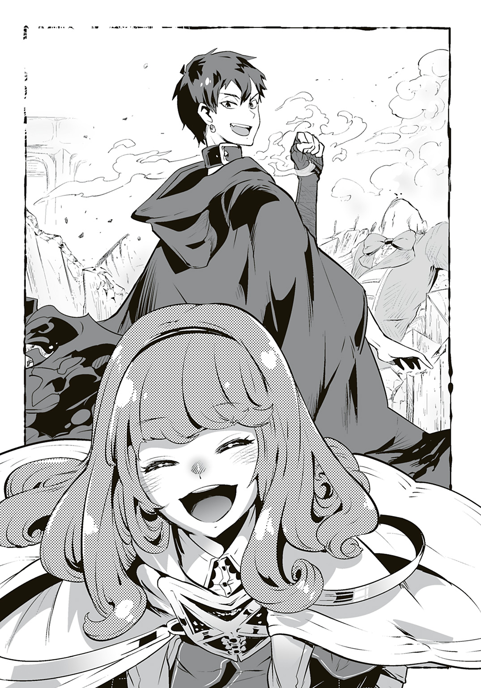
エピローグ 陽射しが一線、雲が二つ
１
王立裁判所は、あちこちが焼け焦げて酷い有様だった。
焼けて黒い炭になっているのは、椅子や陶器や盾、そして何人かの人間。
「あいたたた。ジョレンテの奴......こんなにしてくれて。一番重い罪をくれてやるわ」
サツキは生み出した氷を額のこぶに当てながら裁判席に座っている。
「サツキ、あんたが死んでしまったと思って気が気じゃなかったよ」
マルフォイは上着を脱いで汗で汚れたシャツ一枚で立っている。
「あんな小僧にやられる私じゃないよ。それにしても......トマスには酷いことをしてしまった......あんな男に騙されて、わたしゃ裁判官失格だよ」
「トマスはあんたが裁いたんじゃない。それは、俺もさ......みんなジョレンテに一杯喰わされたんだ」
「気に入らないところはあったけど、あそこまで腐った男じゃなかったのに」
「そうだな......みんなトマスが羨ましかったのかな。彼は全部を持っていたからね」
「そして、取り戻す。コーネリアス以外は全てね。こんな酷い事件だけど、トマスがミカヤのもとに戻ることだけが救いね......マルフォイ、全部が終わったら一杯やりましょうか。トマスと信ともね」
マルフォイは微笑み、それから、サツキのもとを離れて廊下へと向かった。待っているかなと思っていた少女が、そこにはいた。
「ミカヤ」
マルフォイは少女の名を呼んだ。
「マルフォイさん、さっきはありがとう。あなたが誘導してくれなければ、どれだけの被害が出ていたか」
ミカヤはお辞儀をした。
「話は......それだけじゃなさそうだね」
ミカヤは手に力を込めた。五人衆の中で、この人が一番手強い。
「はい......お願いがあります」
「なんだね？」
「自首してください。......証拠物隠蔽と殺人共謀の罪を」
マルフォイはにこやかに笑っている。
「容疑者の中でサラサンテを殺す動機があるのはジョレンテだけ。そして〝精霊殺しの箱〟を隠す動機があるのは、あなただけです」
「それだけじゃ証拠不足だな」
「魔道具ギルドの管理官から聞いています。マルフォイが、これを外に出すなと強く言っていたと」
「それだけかね？」
ポーカーフェイスの微笑みに、わずかに陰りが見えた。
ミカヤは懐から一枚の古ぼけた便箋を取り出した。
「サラサンテさんが書いたものです」
マルフォイは便箋を読んでいた。
「貴方が魔道具ギルドの傀儡にされていることを心配しています。あんな怪しい組織と手を切れ、以前のお前に戻ってくれと。お前はいけ好かない奴になってしまったジョレンテとウルヴァンとは違うはずだと......きっと最期の瞬間まで貴方のことを......」
「もういい......もう、いい」
鼻声でマルフォイは言った。涙は拭いきった後だった。
マルフォイはミカヤに頷いた。
「座らないか？」
ミカヤはマルフォイと共に、近くにあった長椅子に腰かけた。
「......どうしてなんです？」
「トマスがうらやましかったんだよ。それだけだ。ジョレンテと同じだよ」
「じゃあ......」
「途中からは、知っていた......ジョレンテとウルヴァンと私はグルだ」
「......」
「なんのことはない。五人衆の内で、まともだったのはトマスとサリーだけ。他は全員、嫉妬に我を忘れたロクデナシだ......それくらいトマスは眩しかったんだ。ジョレンテが、ウルヴァンと共にトマスを嵌めた。目的はコーネリアスだった。もちろん、コニーは見向きもせんかったがね。私は途中で気づいたが、黙認した」
「......何故なんです!?」
「だから、ただの嫉妬だ。ほんとにそれだけなんだ。......みんなコニーを愛していたんだよ。北の絶海よりも深くね。トマスを救おうとしたのはサリーだけだった。だから殺された」
「本当に、最低......」
「ああ、最低だよ。ジョレンテの話じゃ、サリーは少し前から、トマスの冤罪とジョレンテが犯人だってことは知っていたらしい。最後まで平和的な話し合いで、自首を勧めたようだ。......ジョレンテはサリーの予想以上に落ちぶれていたので、殺されてしまったがね。ジョレンテはブローチの処理と今後の相談のためにあの場所に私を呼んだ。トマスをジョレンテが嵌めたことは私も知っていたから、バレれば全部が明るみに出てしまう。あの箱は私が広めたんだ。欠陥がばれれば貴族からの票を失う。私はジョレンテと話した後で、何喰わぬ顔で呪力鑑識が来る前に〝精霊殺しの箱〟を回収した。事実、私は魔道具ギルドの傀儡だ。それくらいはやるさ」
「......最低ですね」
「そうだな......。しかし、なんで俺たちがここまで最低になったのか、知りたいかい？ それとも、どうでもいいかね？ 家族を破滅させた男たちの言い訳なんぞ」
ミカヤは目で促した。自分には聞く権利と必要があると思ったからだ。
「......死の精霊は、死の淵から蘇った者にしか使えない。君は何故使えるようになったのだね？」
「それは......答えたくありません」
アイスフェルドを独房から逃したことは、教えるわけにはいかない。
「そうか......では、何故ジョレンテには使えたんだと思うかね？ あの唯我独尊のエリートに」
「あ......」
ミカヤには全く思い当らなかった。常に自信満々でエリート風を吹かすあのジョレンテは、一体何時、そんな目に遭ったというのか。
「ジョレンテはな......一度自殺しているんだよ。未遂に終わったがね。私が発見した時には、切った手首から出た血で風呂場が真っ赤に染まっていたよ」
「何故!?」
あのジョレンテが？
「コニーを失った時にだ。......つまり、トマスがコニーを手に入れた時にだ......！ 絶望のあまり、手首を切ったんだ。それくらいに愛していたんだよ。奴なりの愚かしいやり方でな」
ミカヤは言葉を失っていた。
「愚かだと思うだろう？ だが、男とはそういうものさ。それ以来......俺たち三人は変わった。三人で集まっては、陰でトマスのことをいろいろ言っていた。ちゃんと、結婚式の時はお祝いをしたさ。おめでとうトマス！ お前は最高の男だ！ コニーとお似合いで羨ましいよ！ しかし......。まあ所詮、人間はこんなものさ。お前にはわからんだろう、こんな僻みっぽい連中の言い分は」
「さ、最低よ......！ 酷過ぎる！ 最低過ぎる！」
一体何回、この温厚な市長に「最低」と言えばいいのだろうか？
父は逮捕された瞬間もジョレンテのことを信じていたのだ。無論、マルフォイのことも。
「そんなことで同情なんてしない！ もし思っていたことがあるなら、なんでそう言ってくれなかったの!? そのせいで......母さんまで......！ 酷過ぎるわ！ 友達だったのなら、ちゃんと伝えればいいじゃない！」
しかし、マルフォイは疲れ果てたように微笑するだけだった。
「友達だったら伝えればいい、か......。歳を取ると、段々それができなくなるものなんだよ」
「酷過ぎる......」
ミカヤにはわからなかった。わかりたくもなかった。自分の家族を破滅させたものが、そんんな程度のことだったなんて。
「理解してくれとか、同情してやれとか言うつもりはないよ。ただ、伝えておきたかったのさ......もういい、早く逮捕してくれ」
ミカヤは黙ってうつむいていた。
「しかし......よく気づいたな」
「あなたの家で、奥さんから聞きました。最近、魔道具ギルドの人間やジョレンテがしょっちゅう来るんだ、と」
「なるほど......ほんとに目ざといね。さ、逮捕してくれ」
ミカヤは首を横に振った。
「嫌です」
「な......」
全てを諦めきった男の眼に、戸惑いの色があった。
「あなたは自分でサツキさんと奥さんに話すんです。それが最初の償いです」
「......そりゃ......キツイなあ......」
「信じていた人に、自分の大噓を全部話すこと。市民も含めて全てに！ あなたの処分はそれから一緒に考えていきましょ」
「......まだ、逮捕してくれる方が楽だ！ なんでそんな酷いことをするんだ？」
「自分から話しさえすれば、奥さんとサツキさんだけは許してくれるかもしれません」
マルフォイははっとした。
「私の父の時、冤罪だったけど、けどまだ父から報告してくれたおかげで、なんとか最後には信じることができたんです。これが、他人から一方的に言われていれば、どうなっていたか......」
あの時の弱い私は、本当に世間の声に潰されてしまっていただろう。
「なるほどな......」
「まず、サツキさんに言ってあげてください。教え子がろくでなしだったって、他人から聞かされるよりもまだマシでしょうから」
呆けたような顔だったマルフォイは不意に兵士のように勇ましい顔立ちになった。いつも群衆の前で演説をする市長のマルフォイだ。
「最後まで恩に着るよ。けど、どうして私にそこまで......？」
ミカヤは湿った声を出した。
「あの時、あなたの優しい言葉に救われたこと......それだけは事実でしたから......」
マルフォイは弱々しく微笑み、大法廷に入った。サツキの反応は見たくも聞きたくもないので、ミカヤはその場を後にした。
２
エミーは、花瓶の水を庭に捨て、井戸の水を汲んだ。人生、どれだけ壊されても、やっぱり生きていかなくちゃいけないんだと、最近やっとそう思えるようになった。
ジョレンテが死ななかったことは残念だったが、そうしたのがミカヤであるならば、納得もいくというものだ。あの子は、私と同じくらいの目に遭わされたのに、それでもいつも前だけを向いて歩いている。
「エミーさん、おはよう」
そのミカヤが、右手を軽く挙げながら歩いて来た。エミーは精いっぱいの笑顔を作って、彼女を家に招き入れた。彼女は、いつも輝いている。赤い髪のように燃えている。
日の光が彼女の赤毛を火の精霊のように煌めかせ、その上に太陽から忘れられたように雲がぽつんと浮かんでいた。
今日は、快晴だ。
３
〝大陸未曾有の殺人事件と冤罪～父の汚名を雪いだ天才弁護士ミカヤを支えた暗殺者～〟
「事件は終わった。私たちはようやく、そう言えるのだ。汚されたトマス・サリンジャーの名も、人格者サラサンテ・ニコラの命もどちらも完全に戻ることはない。また、何故大陸随一の人格者に、暗殺者との関わりがあったのか、そのことは未だに闇の中だ。
しかし、ともかく事件は終わった。
ローランド・アイスフェルドに叩きのめされたジョレンテは、二十年も歳を取ってしまったかのようにやつれ、持ち前の〝エルム族殺し〟のハンサムな顔は陥没してしまった。しかし、彼がしでかした罪を考えれば、これくらいの罰が妥当とも言える。なお、検事局長のウルヴァンもジョレンテに加担していたと考えられるが、その真相を語る前に彼は死んでしまった。
何よりの驚きは、市長のマルフォイまでもが一連の事件に関わっていたということだ。
この事件、最大の功労者はなんといっても、父の汚名を雪ぐため史上最年少で呪術法律家となったミカヤ・サリンジャーである。しかし、事情を調べるうちに、その彼女を支えてきた意外な人物の存在が明らかになった。それはなんと、当裁判の被告人、アイスフェルド本人だというのだ。牢獄にいながら、殺しのプロである彼はミカヤに様々な助言を与えてきたというのだ。
そのアイスフェルドだが、『地獄の法廷』にて、ジョレンテを叩きのめしてからはまた、留置所に入っているようだ。かの悪名高いアイスフェルドが、何故こうも大人しくして、さらに冤罪事件を暴くために助力までしてくれているのか......。
その背後には、美貌の若き呪術法律家の存在があることは、想像に難くない。
そのミカヤは、今日もあくせくと留置所の面会室に向かっているそうだ。
目的はアイスフェルドの残り九十九人の殺人の弁護をすることだというが、果たして......？
いや、こればかりは読者の想像に任せるとしよう。
三十日 メイ・ヴォーデン 『レトリック』副編集長」
トマスが開かれた場所で太陽の光を浴びるのは、八年ぶりのことだ。なんせ、刑務所の運動の時間も全部サボっていたからだ。
この事務所も変わらないし、信がぐうたらしながらお茶を飲む様子も変わらない。
一つ変わったのは、花瓶に挿されている花の種類か。
「ジョレンテの野郎にずっと一杯食わされていたってわけだ......バカだったな、俺たち。あれがコーネリアスに入れこんでいるってことは知っていたのによ。昔はあそこまで腐った男じゃなかったんだが......だが、すまんトマス。俺のせいだよ」
信は苦そうに茶を一口飲んだ。
「この八年間で、〝だんまりの信〟が変わったのかな？ お前のせいじゃないってことは、私が一番よく知っているさ」
「ジョレンテとウルヴァンは気に入らないヤロウだったが、まさかマルフォイまでもな」
「それが一番ショックだったな」
「多分な、その三人はお前がずっと羨ましかったんだろうよ。俺は始めっからの劣等生だ。何もできやしねえ、お前とは対等のダチのつもりだったが、張り合おうとなんぞ思ったこともなかったよ。コニーのことはすぐに諦めた、だが......」
「お前はなんだってできるさ、信。ずっとミカヤを守っていてくれた」
「いいから聞けって。だが......あの三人は違ったんだな。コニーだけじゃねえ。お前は全部持っていた、人徳も才能も......五人衆の中で、お前とサリーだけは別格だったんだよ」
「おいおい、よせよ」
「事実そうだろ。で、俺みてえなのは別になんとも思わねえんだが、秀才の三人は悔しかったんだろうな。お前とサリーの天才っぷりが」
「どこがだ。八年もムショ暮らしさせられる天才がいるかよ」
トマスは微笑み、目を細めた。
「けど、また朝日を浴びられる、それで十分だ。コーネリアスだけは......戻ってこないけどな」
信はふと笑った。
「ミカヤは......コーネリアスにそっくりだぞ。なんでも頭から突っ込んでいく。この八年間を、お前のために捧げたんだ。おかげでウチも大繁盛」
信とトマスは目を合わせて笑った。
「しかしミカヤも、今は黒衣の暗殺者にうつつを抜かしているそうだな」
「おいおい、どこで聞いたんだ、それ？ 地獄耳だな、相変わらず」
「刑務所内ってのはな、案外いろんなことが耳に入ってくるものなんだよ」
トマスはにやりと笑った。
「アンジーも手助けしてくれたそうだな」
「本当に何でも知っているな。明日からでも働いてもらいたいくらいだ」
「ヨリは戻ったのか？」
「まさか。あいつとヨリが戻ることは永遠にねえし、戻す気もねえ。ただ、ミカヤを救ってくれって手紙書いただけだ」
「そうか」
「お礼言いに行った時、ミカヤについてこんな風に言っていたよ。『本当にトマスを父に、そしてコニーを母に持つ子ね』ってな」
「アンジーが、そんなことをか......」
トマスは嬉しさを隠そうともせずに、微笑んでいた。
信は真剣なまなざしで親友を見つめた。
「なあ、事務所には戻らないのか？ ここは、お前の法律事務所だ、俺はあくまで代理をやっていただけだからな。お前が戻ってくれれば......」
「いや......私はもう法律家には戻らない」
トマスは少しうつむきながらそう言った。
「人を見る目に自信がなくなったよ」
「ジョレンテたちのことか？ それなら俺だってそうだが......」
「いいや。娘のことさ」
トマスは肩を竦めた。
「アイスフェルドを信じる娘のことを。これじゃ父親としても法律家としても失格だ。しばらく、この業界には戻らない。サリーみたく、罪を犯した者の更生をしようかと思っているんだ」
「......けど、ミカヤは」
そこに、燃えるような赤毛の少女が入ってきた。エミーから貰った花を事務所に飾ろうと花瓶を買って来たのだ。
「信さん、いい花瓶買ったから机を綺麗にしてさ......」
そこで、ミカヤは口を閉じた。釈放されてからまだ会っていなかった父が自分の机に、座っていたからだ。
「お......父さん......家に帰っているかと」
ミカヤはどうしようかと悩んだ。どういう顔をして会えばいいのかしら、と散々悩んだのだが、答えが見つからず、会うのを先延ばしにしてきたのだ。
「お前の様子が見たいと思ったんで、先に寄らせてもらったよ。今日はどこへ行ってたんだい？」
「どこって......仕事で」
「法衣も着ずにおめかししているが、黒衣の男と会っていたんじゃなかろうな？ そんなことは父さんが許さんぞ」
「もう、父さんったら......」
やだな、どう接していいのかわからない。こんなの、どうすればいいのか......あれ、なんだか目が滲んで......。
ぽん、と私の肩を信さんが叩いた。ほら、早く行けよ、って仕草をしている。
ミカヤはしばらくうつむいて、肩の震えが収まるのを待った。
「......パパあっ！」
私は目の前が見えないくらい泣きじゃくりながら、父さんの胸に飛び込んでいた。父さんは、ありがとう、ありがとうと繰り返しながら、泣きやまない私の頭を撫でてくれた。
信はその様子を眺めながら思っていた。
ミカヤ......お前が八年分の涙を流すもんだから、トマスの服が夕立の後みたいにびしょ濡れじゃないか。そんでトマスもいい年こいて泣きまくって......って、あれ？ 俺の目もなんか変になってきたぞ。こりゃ、二人が泣きまくっていて幸いだ。俺の涙を見られずに済む。すぐにお茶、お茶って言ってやるぞ。なんせ、今日から本当に俺がこの事務所の所長なんだからな。
ミカヤもこき使って稼いでやる。でも、今はいいや。
しばらくは、俺も一緒に泣いていよう。
アイスフェルドは、留置所の廊下を歩いていた。
ここの冷え切った飯を食うのもあと何度か。そろそろ、出る支度をしておかないとな。
「おい、俺の釈放はいつだ？」
隣にいる警邏騎士に聞く。
「はてさて、千年後か二千年後か。お前が何人もの人を殺してきたのは事実だからな」
騎士は渋い表情だ。
「......しかし、同時に今回は何人もの人を救いもした。街を守る者として、礼を言う」
「そりゃどうも」
さて、いつここを離れようかと考えていると、例の面会室まで連れてこられた。
椅子に腰を下ろすと、
「アイスー」
面会室の窓口越しにバカ女がやってきた。袋を持っている。酸っぱい果物の香りがする。
「林檎が好きって言っていたから、いっぱい持ってきたわ。これからまた、裁判を闘うことになるんだから、しっかり食べておいてね」
「......この間終わったばかりだろ」
「何言っているの？ これから、あなたが殺した九十九の殺人の弁護をするのよ」
「......あのな、お前ってバカだろ？ 親父のトコで涙流していろよ」
「また憎まれ口きいちゃってさ。あなたにも、少しは正義ってものがわかってきたんじゃない？」
「けっ」
「だーめ。あなたの本当の姿を知っているから無駄よ」
「あんだ？ それ」
「私を助けようとした。それも命を賭けてね。これが、あなたの本当の姿よ」
反証できるもんならしてみなさい、とばかりに胸を張って威張っている。
「あん時は、お前が鍵を持っていたからな」
「あー、はいはい。悪ぶっちゃって」
「このガキ！ よりによって、この俺に『悪ぶっている』だと？」
ミカヤはぽんぽんとアイスフェルドの肩を叩いた。
「いいからいいから。私にはなんでもお見通しよ。さ、林檎をいっぱい持ってきたからね。あなたも昔は恋人がいたんだし、いつか出所してから所帯が持てるといいわね」
「お前、法律家のくせに全然話を聞かんな」
すると、近くにいた壮年の騎士が、堪え切れなくなったように噴き出してしまった。
アイスフェルドは肩を竦めた。
そこに、アイスフェルドの背後からノックの音がした。
「おーい、取り込み中すまんが、そいつ移送するぞ」
係員らしい男が、扉を開けて入ってきた。
「どこへだ？」
壮年の騎士が聞いた。
「逃げないように、〝氷の棺〟に入れて冷凍保存しておくんだ。さあ行こう」
ミカヤの顔色が一変した。〝氷の棺〟は危険な思想犯などを氷の精霊で凍らせておく方法だ。
「待って！ そんな危ない方法をどうして？ 氷の棺は、死ぬ危険性もあるのよ......？」
「もう、上からのお達しで決められたんだ。こんな危険な男、普通の方法じゃ止めておけないって。この焼け焦げた痕を見ろよ！」
「でも、みんなを救ってくれたのよ......」
「それも気まぐれにすぎん、こんな危険な奴は氷漬けにするしかない」
「そんなに危険な人じゃないわ！ 私が保証する！」
「もう決まったんだ。さあ、行くぞ」
しかし、係員らしい男はにべもなかった。どうやら、避けられそうもない。ミカヤは穴の開いた窓に指先を伸ばした。
「すぐに、すぐに出してあげるからね！ 待っていて！」
アイスフェルドは微笑み、窓の穴から少しだけ突き出したミカヤの指に軽く触れた。
「あー、いいからいいから。おめえは、親父さんを釈放させたばっかりじゃねえか」
「絶対に出してあげるから！ 希望を捨てちゃ駄目よ！」
アイスフェルドは肩を竦めて歩いて行った。ミカヤは真摯な瞳で、それを見つめた。ほんの短い期間ではあったが、彼のことを弟のように（間違っても兄ではない）、思い始めている自分がいる。よりによって、〝氷の棺〟とは......氷漬けにされ続けた者は、正気を失うこともあるという。
（無事でいてよ......アイス）
一方、アイスフェルドたちは、留置所の中を歩いていた。
「あら、アイスフェルド......さん。ミカヤには会ったの？」
そこにいたのは、改めて留置所の中を取材していたメイであった。
「ああ」
「できれば、ちょっとお話を......」
「無理だ」
アイスフェルドは手をひらひらと振ってから去っていった。
係員の男は、メイ・ヴォーデンとすれ違う時に大げさにうつむいて顔を伏せた。メイがもう少しだけ視線を係員に向けていれば、それが散々コメントを貰った薬屋と同じ顔であることに気がついただろう。
一方、護衛についた騎士は、いつの間にか自分がアイスフェルドと共に、人気のない中庭に連れて来られていることに気がついた。
「馬車は向こうだろう？」
騎士はそう言いながらも、そこから見える廊下で人がみんなぐっすり眠りこけていることには気がつかなかった。
「ああ、いいんだ。ここで」
アイスフェルドがそう言ったので、騎士はびっくりしていた。だが、その驚きは急にどうでもいい感情へと変わり、やがて騎士はなにも考えられなくなって、中庭の花を数えはじめた。
「ごめんね、おじさん」
係員がそう言い、いきなり自分の顔についた初老の顔の皮膚をはがした。一気に破り捨てた仮面の下には、アイスフェルドと同い年くらいの年頃の少年の顔があった。
「随分と暴れたね、アイス」
それは、昨夜アイスフェルドが歩いている路上でヴァイオリンを弾いていた少年であった。
アイスフェルドが無言で突き出した両手の手錠を、少年は鍵で簡単に外してしまった。
「ウィル、おめえも人が悪いな。氷漬け、って言った時のミカヤのツラときたらよ」
ウィルは、「おや」と言って、
「へえ、アイスがそんなに心配するなんてね。ほんとに可愛いからね」
「バカが。何しに来たんだ」
ただ単に、助けに来たというだけのはずがない。というか、ここから出るだけなら助けなど必要ない。
「また依頼だよ。水の都が草原の民に襲われるんで、そこの姫さんを護衛してほしいって」
「またジジイからか？」
「まあね。アイスは女の子を守るのは得意だし、きっとやれるよね」
「ちゃんとした依頼だってんならやるけど」
「かの大導師から目をかけられているんだから、君もその期待に応えなくちゃ」
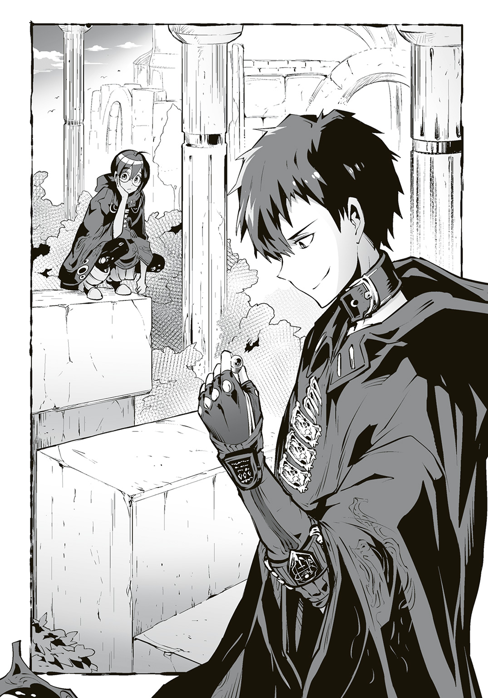
「いい迷惑だっての！ あんなもん、呪力がなけりゃただの売れない作家じゃねえか！」
「まあまあ、サリーが死んだことには本当に驚いていたようだけどね。サリー、戦闘はまるで駄目だったからな......あれ、何やっているの？」
アイスフェルドは、かがんで手帳にペンを走らせ、林檎が沢山入っている袋の中に入れた。次に、アイスフェルドは片耳のイヤリングを外してしまったので、ウィルは驚いた。
「いいのかい？」
ウィルは、それがアイスフェルドにとって何より大切にしている物だということを知っていた。誰よりも。
「いいんだ。つけるのが面倒だと思っていたところだ」
ウィルは「信じられない」という表情で、彼を見下ろした。
「行こうぜ」
アイスフェルドは、青空のような表情でもって、またまたウィルを驚かせた。
４
「どういうことなの!?」
ミカヤは憤りを抑えるように、地面を踏みつけて歩いていった。先を歩くセトが、「みんなやられているんだ！」と言っている。
ミカヤがそこに向かう途中、廊下のあちこちで人が倒れていた。死んでいるわけではなく、眠っているだけのようだ。涎を垂らしているメイが途中に見えたが、無事なようなので放っておくことにした。
中庭で、蝶がのんびり舞っている。その真ん中に、鎧を着た壮年の騎士がぐっすり眠りこけており、横にさっきアイスフェルドに手渡した林檎の袋が置かれている。
「......アイスフェルドー！」
ミカヤは天も割れよとばかりに叫んだ。
全部、あの男がやったに違いない。思えば、あの係員の男の様子は怪しかった。
あ、あいつめ。これだけ人を心配させておいて。
ミカヤは騎士を揺り起こして、
「大丈夫ですか？ アイスフェルドはどこに消えましたか？」と質問した。
騎士はぼんやりとしながら、ミカヤを見た。なんだか、まだ眠っているみたいだ。
「......ん。アイス？ 誰のことだ？」
「何を言ってるの!? さっきまでずっと裁判をやっていた被告人よ。大陸最高の暗殺者じゃない！」
「暗殺者......？ はて？」
なんてことだ。恐らく、顔も思い出せないようにされているのだろう。
「やってくれたようだな、あの男が」
セトは悔しそうに、しかし、半ば嬉しそうにそう言った。
ミカヤは、そばに落ちている林檎の袋の中に、一枚の紙きれが入っていることに気がついた。それを手に取ってみると、片方だけの真珠のイヤリングで挟まれていた。
「礼代わりにやるよ。それと、シャロンは恋人じゃねえから」
物凄くぶっきらぼうな、それでいてあいつらしい太い文字だった。
ミカヤの中に、ふつふつと怒りが湧いてきた。あの自己中心男......元恋人の形見をお礼に贈るだなんて、失礼にも程があるよ。ミカヤは雲が二つだけ浮かんでいる青空を見上げた。
きっと、あいつも見上げているはずだ。
「......アイス......すぐに捕まえるからね、待ってなさい......！」
ミカヤの瞳に映るのは、澄み渡った青空のみ。
太陽はどこまでも高く昇って、落ちる気配はない。
日を反射して茶色く染まったミカヤの瞳の中には、雲が二つと陽射しが一線だけあった。
雲がゆったりと太陽を横切ってから、ようやくミカヤは視線をセトに向けた。
「セト、行くわよ！」
「どこにだ？」
「まず、聞き込みよ！ アイスの目撃証言を探しましょう！」
ずんずんと歩きだすミカヤを、呆れたような感心したような眼でしばし見つめるセト。
やがて、少しだけ笑ってから、ミカヤの後をついて歩いた。
この少女は会った時から、目的のためなら火の中にも平気で飛び込んでいってしまう。
だから生涯をかけてずっと守ることを、あの沙漠でヤムス神に誓ったのだ。
これくらいで驚いていては、ミカヤという少女にはついていけない。
「ほら、セト！ 遅いよ！」
「ああ！」
どこへ向かうかも決めずに、二人は歩いていく。
その先にきっと、あのどうしようもないほどに皮肉屋で嫌味なほど自信家の、しかし言ったことを全て実現してしまう力を持つ黒衣の少年がいることを信じて。
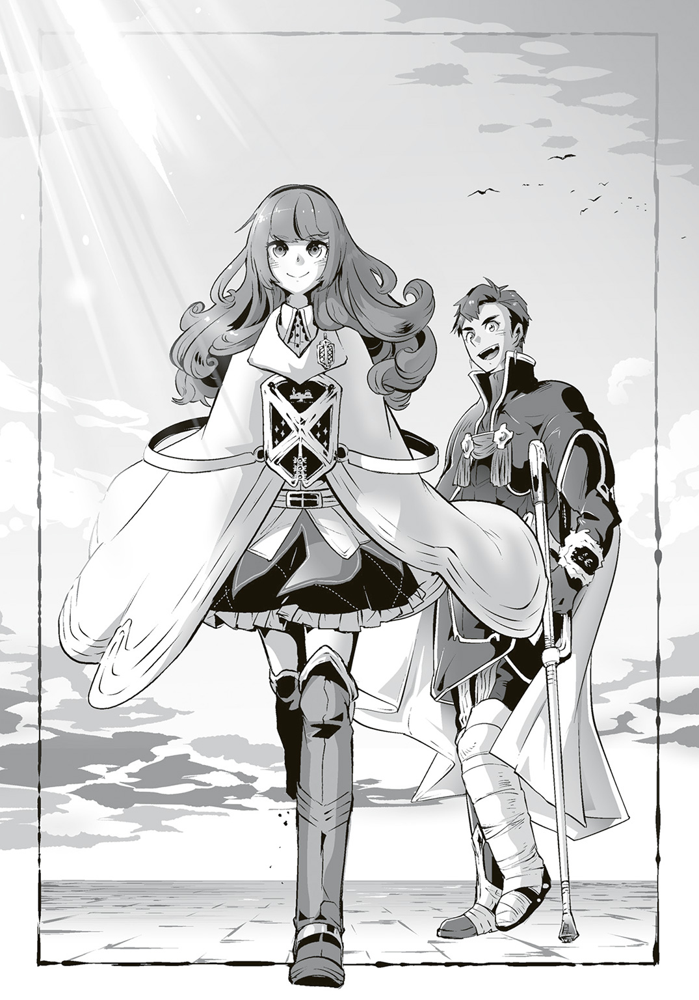
あ と が き
昔々、政府の中の人はこう考えました。
「犯罪事件は増加する一方であり、このままではいずれ世界は流血の嵐になるぞ！」と。
そして、裁判のプロフェッショナルを増やすべくいろいろと画策しました。法科大学院を作り、法律の専門家を増やし、荒廃するであろう未来に備えていました。
少年法も次々に改正していき、これで悪人どもを裁く準備は万端だ。
これで、世の中が犯罪者だらけになっても大丈夫......というより、なってくれないと困る。
ところが、世の中全体は結局、〝いい人化〟しているので、犯罪件数は減る一方に。
日本での少年による殺人事件の件数は、なんと一九五一年からすると現在は八分の一（！）にまで減少しました。それはもちろん良いことなのですが、山ほどの法律を覚えたはずの法律家たちが、食うにも困るような事態に。
さあ、困ったぞ。これじゃ、作家志望の私は何を取り扱えばいいのだ。
よっしゃ、自分で法を作ってやろうじゃないの！ という思いを少しだけ込めて。
残りは、ただただミカヤとアイスフェルドの物語を書きたいという思いから、この作品を書きました。
子供の頃から中世ファンタジーの世界が大好きで、『ロードス島戦記』『グイン・サーガ』『アルスラーン戦記』とむさぼるように読んでいました。今、夢中になっているのは海外ドラマの『ゲーム・オブ・スローンズ』。中世ファンタジーものでありながら、リアリティ溢れるシナリオ。現代アメリカの病んでいる感じもよく出ており、素晴らしい出来栄えです。
現実世界で裁判沙汰が減っているなら、中世ファンタジーの世界でやってしまえばいいのです。こうして、法廷とファンタジーの融合作品が出来上がったのですが、楽しんでいただけましたか？
書く時に苦労したのは、やはりこの作品の世界の「法」を考えること。そして、現在の法について調べることでした。調べ物の中で記憶に残っているのは、カントという哲学者の「法学者は今でも法の定義を求めている」という皮肉的な言辞でした。哲学者カント......ひょっとしてアイスフェルドのような皮肉屋だったのかな？
「ファンタジー世界で法を扱う」という難事にどう立ち向かおうかと四苦八苦しましたが、二人の主役がどんどん前に進んでいってくれたおかげで、乗り切ることができました。
この作品に関わってくれた全ての人たちに感謝します。
私の曖昧なイメージに、格好よくて可愛い絵を描いてくださったテルミンさん、本当にありがとうございます。
ではみなさん、またお会いしましょう。
大 桑 康 博
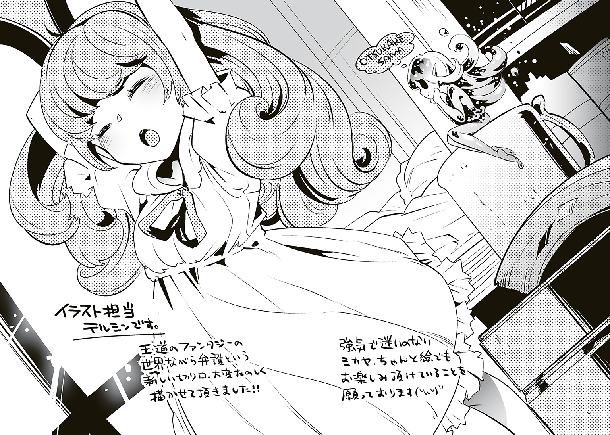
著者紹介
大桑康博 おおくわ やすひろ
この物語はミカヤとアイスフェルドの活躍と、日ごろからヴァイオリンを弾きまくっているエネルギーから生みだされています。今年中にイザイの無伴奏ソナタ五番をクリアしたいのですが、作品以上に厳しそうです。
illustration
テルミン てるみん
漫画家してます。くるくるの巻き毛楽しかったです。法廷ファンタジーお楽しみください～！
ダッシュエックス文庫DIGITAL
呪術法律家 ミカヤ
著者 大桑康博
© YASUHIRO OOKUWA 2016
２０１６年２月29日発行
この電子書籍は、ダッシュエックス文庫「呪術法律家 ミカヤ」
２０１６年２月29日発行の第１刷を底本としています。
発行者 鈴木晴彦
発行所 株式会社 集英社
〒１０１－８０５０
東京都千代田区一ツ橋２丁目５番10号
０３－３２３０－６０８０（読者係）
編集協力 石川知佳
制作所 株式会社ＩＣＥ
本作品の全部また一部を無断で複製、転載、改竄、インターネット上に掲載すること、および有償無償に関わらず、本データを第三者に譲渡することを禁じます。なお個人利用の目的であっても、コピーガードを解除しての複製は、法律で禁じられています。